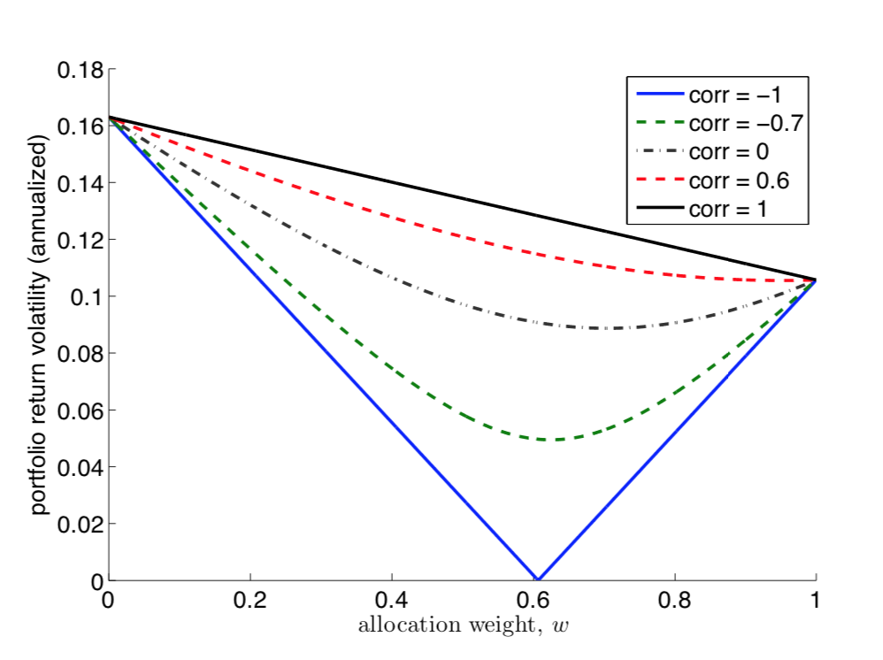
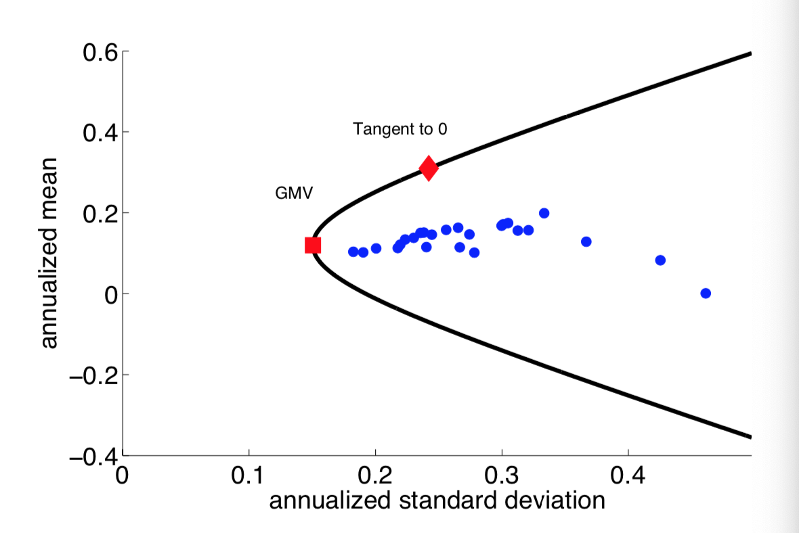
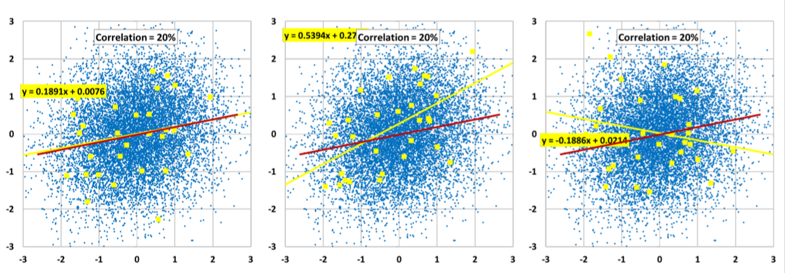
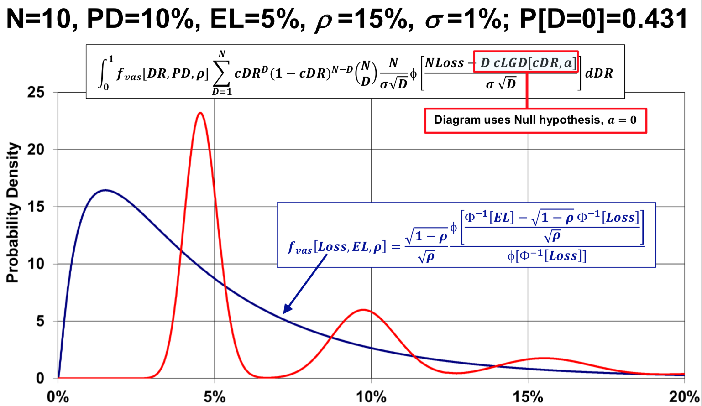

<!DOCTYPE html><html><head><meta name="generator" content="Hexo 3.8.0"><meta charset="utf-8"><meta name="X-UA-Compatible" content="IE=edge"><title>&#128214; Notes on Financial Mathematics · Rongjia Liu</title><meta name="description" content="&amp;#128214; Notes on Financial Mathematics - Rongjia Liu"><meta name="viewport" content="width=device-width, initial-scale=1"><link rel="icon" href="/favicon.png"><link rel="stylesheet" href="/css/arctic.css"><link rel="search" type="application/opensearchdescription+xml" href="http://rliu6.com/atom.xml" title="Rongjia Liu"><script src="//code.jquery.com/jquery-2.2.4.min.js" integrity="sha256-BbhdlvQf/xTY9gja0Dq3HiwQF8LaCRTXxZKRutelT44=" crossorigin="anonymous"></script></head><body><div class="wrap"><header><a href="/" class="logo-link"></a><ul class="nav nav-list"><li class="nav-list-item"><a href="/archives/" target="_self" class="nav-list-link">BLOG</a></li><li class="nav-list-item"><a href="/about/" target="_self" class="nav-list-link">ABOUT</a></li><li class="nav-list-item"><a href="/search/" target="_self" class="nav-list-link">SEARCH</a></li><!-- li.nav-list-item--><!--    a.nav-list-link(class="search" href=url_for("search") target="_self") <i class="fa fa-search" aria-hidden="true"></i>--></ul></header><main class="container"><div class="post"><article class="post-block"><h1 class="post-title">&#128214; Notes on Financial Mathematics</h1><div class="post-info"><!-- if is_post()--><!--     span &#128197; &nbsp;-->Dec 4, 2019<!-- if is_post()--><!--    span#busuanzi_container_page_pv | &#128065;--><!--    span#busuanzi_value_page_pv--><!--    if item.tags--><!--        span | &nbsp;--><!--        for tag in item.tags.toArray()--><!--            a(href=url_for(tag.path))=  '#' + tag.name--><!-- if item.from && (is_home() || is_post())--><!--    a.post-from(href=item.from target="_blank" title=item.from)!= __('translated')-->
</div><div class="post-content"><style type="text/css">
    img.resize {
        max-width:50%;
        max-height:50%;
    }
</style>

<a id="more"></a>
<h1 id="Navigation"><a href="#Navigation" class="headerlink" title="Navigation"></a><span id="nav">Navigation</span></h1><p><a href="#01">01. Portfolio Theory</a><br><a href="#02">02. Option Theory</a><br><a href="#03">03. Stochastic Calculus</a><br><a href="#04">04. Credit Risk Model</a><br><a href="#05">05. Foreign Exchange</a><br><a href="#06">06. C++</a></p>
<p><br></p>
<h1 id="128214-Portfolio-Theory-8634"><a href="#128214-Portfolio-Theory-8634" class="headerlink" title="&#128214; Portfolio Theory &#8634;"></a><span id="01">&#128214; Portfolio Theory</span> <sup><a href="#nav">&#8634;</a></sup></h1><style type="text/css">
    img.resize {
        max-width:50%;
        max-height:50%;
    }
</style>

<!--more-->
<h1 id="Portfolio-Diversification"><a href="#Portfolio-Diversification" class="headerlink" title="Portfolio Diversification"></a>Portfolio Diversification</h1><h2 id="Two-Asset-Portfolio"><a href="#Two-Asset-Portfolio" class="headerlink" title="Two-Asset Portfolio"></a>Two-Asset Portfolio</h2><p>Consider an investment portfolio <script type="math/tex">V</script> on two assets:</p>
<script type="math/tex; mode=display">P = wB + (1-w)S</script><p>We can calculate the mean and variance of the return on the portfolio, based on the mean and variance of the return on each asset.</p>
<script type="math/tex; mode=display">\begin{align}
\mu_p &= w\mu_b + (1-w)\mu_s \\
\sigma^2_p &= w^2\sigma^2_b + (1-w)^2\sigma^2_s + 2w(1-w)\rho\sigma_s\sigma_b
\end{align}</script><p>We can see that if <script type="math/tex">\rho<1</script>, we have <code>diversification</code>, where <script type="math/tex">\mu_p</script> is linear in the portfolio allocation <script type="math/tex">w</script> while the standard deviation is <code>convex</code>.</p>
<script type="math/tex; mode=display">\begin{align} \mu_p &= w\mu_b + (1-w)\mu_s \\
\sigma_p &< w\sigma_b + (1-w)\sigma_s \end{align}</script><p>When <script type="math/tex">\rho=-1</script>, the portfolio variance can be as small as desired. If we set <script type="math/tex">w=\sigma_s/(\sigma_b+\sigma_s)</script> then <script type="math/tex">\sigma_p=0</script> and the portfolio becomes riskless.</p>
<p>In this following chart we can see a two-asset portfolio return volatility plotted against different weights and correlation.</p>
<p></p>
<p>We see that to as long as the correlation is not perfect between the two assets, there exist a weight that would minimize the portfolio variance (not taking portfolio return into consideration, yet)</p>
<h2 id="Multi-Asset-Portfolio"><a href="#Multi-Asset-Portfolio" class="headerlink" title="Multi-Asset Portfolio"></a>Multi-Asset Portfolio</h2><p>Consider <script type="math/tex">n</script> assets with return volatility <script type="math/tex">\sigma_i</script> and covariance <script type="math/tex">\sigma_{i, j}</script>. Let <script type="math/tex">w^i</script> denote the allocation to asset <script type="math/tex">i</script>. Then the variance of portfolio return becomes:</p>
<script type="math/tex; mode=display">\sigma^2_{p} = \sum_{j=1}^n\sum_{i=1}^nw^iw^j\sigma_{i, j} \\
\text{or simply, } \boldsymbol{w'\Sigma w}</script><p>In the case of an equally-weighted portfolio with <script type="math/tex">w^i=1/n</script>.</p>
<script type="math/tex; mode=display">\sigma^2_p = \dfrac{1}{n^2}\sum_{i=1}^n\sigma_i^2 + \dfrac{1}{n^2}\sum_{j \neq i}\sum_{i=1}^n\sigma_{i, j}</script><p>We define:</p>
<script type="math/tex; mode=display">\textbf{avg_ret_vol} := \dfrac{1}{n}\sum_{i=1}^n\sigma_i^2 \\
\textbf{avg_ret_cov} := \dfrac{1}{n^2-n}\sum_{j \neq i}\sum_{i=1}^n\sigma_{i, j}</script><p>Therefore,</p>
<script type="math/tex; mode=display">\sigma^2_p = \dfrac{1}{n}\textbf{avg_ret_vol} + \dfrac{n-1}{n}\textbf{avg_ret_cov} \\
\text{and that } \lim_{n\rightarrow \infty} \sigma^2_p = \textbf{avg_ret_cov}</script><p>We conclude that in a <code>equally weighted portfolio</code> (or a diversified portfolio where <script type="math/tex">\lim_{n\rightarrow\infty}w^i=0</script>) with a <code>large</code> number of assets,</p>
<ul>
<li>the individual asset return variances become unimportant to the portfolio return variance</li>
<li>the portfolio variance instead now depends on the <code>average covariances</code> between the assets.</li>
</ul>
<p>Here, the average return covariance is the <code>systematic risk</code> that cannot be eliminated through diversification, whereas the average return volatility is the <code>idiosyncratic risk</code> that is diversifiable.</p>
<p>Note that complete diversification (<script type="math/tex">\sigma^2_p=0</script>) is achieved when:</p>
<ul>
<li><script type="math/tex">\textbf{avg_ret_cov}=0</script> and <script type="math/tex">n\rightarrow 0</script> for a multi-asset portfolio</li>
<li><script type="math/tex">\rho=-1</script> for a two-asset portfolio</li>
</ul>
<h1 id="Mean-Variance-Frontier"><a href="#Mean-Variance-Frontier" class="headerlink" title="Mean-Variance Frontier"></a>Mean-Variance Frontier</h1><p>In a mean-variance space, the set of all possible portfolio with <script type="math/tex">n</script> assets form a <code>convex set</code>. The bounday of this set is known as the <code>mean-variance frontier</code> and forms a parabola.</p>
<p></p>
<p>The top half of the MV frontier is the set of <code>efficient MV portfolios</code> which maximize mean return given return variance.</p>
<p>Let us define <script type="math/tex">\boldsymbol{r}</script> as the random variable vector of asset returns on <script type="math/tex">n</script> assets:</p>
<script type="math/tex; mode=display">\begin{align} \boldsymbol{\mu} &= \mathbb{E}[\boldsymbol{r}] \\
\boldsymbol{\Sigma} &= var[\boldsymbol{r}] =\mathbb{E}[(\boldsymbol{r}-\boldsymbol{\mu})(\boldsymbol{r}-\boldsymbol{\mu})']
\end{align}</script><p>A particular portfolio is defined by the weights assigned to various assets, and we denote the weights vector <script type="math/tex">\boldsymbol{w}</script>. The portfolio return <script type="math/tex">r_p</script> is also a random variable, where:</p>
<script type="math/tex; mode=display">\begin{align}
r_p &= \boldsymbol{w'r} \\
\mu_p &= \mathbb{E}[r_p] = \boldsymbol{w'\mu} \\
\sigma^2_p &= var[r_p] = \boldsymbol{w'\Sigma w}
\end{align}</script><p>Also,</p>
<script type="math/tex; mode=display">cov(\boldsymbol{r}, r_p) = cov(\boldsymbol{r}, \boldsymbol{w'r})  = \boldsymbol{\Sigma w}</script><h2 id="The-GMV-and-Tangent-Portfolios"><a href="#The-GMV-and-Tangent-Portfolios" class="headerlink" title="The GMV and Tangent Portfolios"></a>The GMV and Tangent Portfolios</h2><p>The <code>Global Minimum Variance</code> (GMV) portfolio has the <code>lowest return variance</code> among all possible portfolios, characterized by the leftmost point on the MV frontier. It can be constructed with weight <script type="math/tex">\boldsymbol{w}_v</script> which minimizes the objective function <script type="math/tex">\boldsymbol{w'\Sigma w}</script> under the constraint of <script type="math/tex">\boldsymbol{w'1}=1</script>:</p>
<script type="math/tex; mode=display">\boldsymbol{w}_v := \dfrac{1}{\boldsymbol{1'\Sigma^{-1}\mu}} \boldsymbol{\Sigma^{-1}1}</script><p>The <code>Tangent</code> portfolio is a portfolio <script type="math/tex">\boldsymbol{w}_t</script> with the <code>highest mean/variance ratio</code> among all possible portfolios, characterized by the point that is tangent to the MV frontier and going through the origin:</p>
<script type="math/tex; mode=display">\boldsymbol{w}_t := \dfrac{1}{\boldsymbol{1'\Sigma^{-1}\mu}} \boldsymbol{\Sigma^{-1}\mu}</script><p></p>
<h2 id="The-MV-Portfolio"><a href="#The-MV-Portfolio" class="headerlink" title="The MV Portfolio"></a>The MV Portfolio</h2><p>It turns out that any portfolios on the efficient MV frontier can be constructed based off a linear combination of the GMV and tangent portfolios, which solves the following optimization:</p>
<script type="math/tex; mode=display">\text{given }\mu_p \\
\text{minimizes }\boldsymbol{w'\Sigma w} \\
\text{s.t. } \boldsymbol{w'\mu}=\mu_p \\
\text{and } \boldsymbol{w'1}=1</script><p>Thus a portfolio <script type="math/tex">\boldsymbol{w}^{\ast}</script> is a <code>MV portfolio</code> if and only if there exists <script type="math/tex">\delta</script> such that:</p>
<script type="math/tex; mode=display">\boldsymbol{w}^{\ast} = \delta\boldsymbol{w}_t + (1-\delta)\boldsymbol{w}_v</script><p>Consider <code>MV investors</code> that only focus on the mean and variance of a portfolio, then such investors will only hold MV portfolios (which are linear combination of two funds only).</p>
<h2 id="Excess-Return-with-Risk-Free-Asset"><a href="#Excess-Return-with-Risk-Free-Asset" class="headerlink" title="Excess Return with Risk-Free Asset"></a>Excess Return with Risk-Free Asset</h2><p>Consider the existence of a risk-free asset with return <script type="math/tex">r_f</script> that has zero variance and correlation with other assets. The <code>mean excess return</code> is defined as:</p>
<script type="math/tex; mode=display">\tilde{\boldsymbol{\mu}} = \boldsymbol{\mu-1}r_f</script><p>And the mean excess return of a portfolio with weight <script type="math/tex">\boldsymbol{w}</script> is:</p>
<script type="math/tex; mode=display">\tilde{\mu}_p = \boldsymbol{w'}\tilde{\boldsymbol{\mu}}</script><p>Since the risk-free asset has no variance, the return variance of the portfolio is still <script type="math/tex">\boldsymbol{w'\Sigma\ w}</script></p>
<p>A <code>MV portfolio</code> with a risk-free asset is a vector <script type="math/tex">\boldsymbol{w}^{\ast}</script> which solves the following optimization:</p>
<script type="math/tex; mode=display">\text{given }\tilde{\mu}_p \\
\text{minimizes }\boldsymbol{w'\Sigma w} \\
\text{s.t. } \boldsymbol{w'\tilde{\mu}}=\tilde{\mu}_p</script><p>Note that the constraint that weights sum up to <script type="math/tex">1</script> is now dropped, with the inclusion of the risk-free asset.</p>
<p>Thus a portfolio <script type="math/tex">\boldsymbol{w}^{\ast}</script> with mean excess return <script type="math/tex">\tilde{\mu}_p</script> is a <code>MV portfolio</code> with a risk-free asset if:</p>
<script type="math/tex; mode=display">\boldsymbol{w}^{\ast} = \tilde{\delta}\boldsymbol{w}_t</script><p>Where,</p>
<script type="math/tex; mode=display">\boldsymbol{w}_t := (\dfrac{1}{\boldsymbol{1'\Sigma^{-1}\tilde{\mu}}}) \boldsymbol{\Sigma^{-1}\tilde{\mu}} \\
\text{and } \tilde{\delta} = (\dfrac{\boldsymbol{1'\Sigma^{-1}\tilde{\mu}}}{\boldsymbol{\tilde{\mu}'\Sigma^{-1}\tilde{\mu}}})\tilde{\mu}_p</script><p>This result show that with a risk-free asset, any MV portfolio simply contains a position in the tangency portfolio <script type="math/tex">\boldsymbol{w}_t</script> and a position in the risk-less asset (a.k.a the <code>Two Fund Separation</code>).</p>
<p>Interesting facts w.r.t. the tangency portfolio <script type="math/tex">\boldsymbol{w}_t</script>:</p>
<ul>
<li><script type="math/tex">\boldsymbol{w}_t</script> is the <code>unique</code> portfolio that is on both the risky and risk-less MV frontiers</li>
<li><script type="math/tex">\boldsymbol{w}_t</script> is the point on the <code>risky MV frontier</code> at which the tangency line goes through point (0, risk-free rate).</li>
</ul>
<p></p>
<h2 id="Sharpe-Ratio"><a href="#Sharpe-Ratio" class="headerlink" title="Sharpe Ratio"></a>Sharpe Ratio</h2><p>We define the <code>Sharpe ratio</code> (SR) of a portfolio <script type="math/tex">\boldsymbol{w}</script> as:</p>
<script type="math/tex; mode=display">\text{Sharpe Ratio}(\boldsymbol{w}) = \dfrac{\tilde{\mu_p}}{\sigma_p}</script><p>Therefore, the tangency portfolio <script type="math/tex">\boldsymbol{w}_t</script> is the portfolio on the risky MV frontier with the maximum Sharpe ratio.</p>
<script type="math/tex; mode=display">\text{Sharpe Ratio}(\boldsymbol{w}^{\ast}) = \sqrt{\boldsymbol{\tilde{\mu}'\Sigma^{-1}\tilde{\mu}}}</script><p>On the risk-free efficient MV frontier (a.k.a the <code>Capital Market Line</code>) all portfolio has the same SR the tangency portfolio, since the frontier itself is a straight line.</p>
<h2 id="Sortino-Ratio"><a href="#Sortino-Ratio" class="headerlink" title="Sortino Ratio"></a>Sortino Ratio</h2><p>The <code>Sortino ratio</code> improves upon the Sharpe ratio by penalizing the down-side volatility only.</p>
<script type="math/tex; mode=display">\text{Sortino Ratio}(\boldsymbol{w}) = \dfrac{\tilde{\mu_p}}{\sigma_p^{down}}</script><h1 id="Linear-Factor-Model"><a href="#Linear-Factor-Model" class="headerlink" title="Linear Factor Model"></a>Linear Factor Model</h1><p>Based on the First Fundamental Theorem of Asset Pricing, given no arbitrage there exists a risk neutral probability measure <script type="math/tex">\mathbb{P}</script> and a change of measure <script type="math/tex">m</script> (R-N derivative) such that for any tradable asset <script type="math/tex">i</script>,</p>
<script type="math/tex; mode=display">r_f = \mathbb{E}[r_i] = \text{E}[mr_i]</script><p><strong><em>proposition</em></strong> <script type="math/tex">m</script> is a linear function of <script type="math/tex">r_t</script>:</p>
<script type="math/tex; mode=display">\begin{align}
m &= a + br_t \\
&= 1 - (r_t - \text{E}[r_t])\dfrac{\text{E}[r_t - r_f]}{var[r_t]}
\end{align}</script><p>Such that all portfolio returns have a <code>factor-beta</code> representation w.r.t. the tangency portfolio,</p>
<script type="math/tex; mode=display">\text{E}[\tilde{r}_i] = \beta_{p, t}\text{E}[\tilde{r}_t] \\
\text{where }\beta_{i, t} := \dfrac{cov[\tilde{r}_i, \tilde{r}_t]}{var[\tilde{r}_t]}</script><p>By mathematical identity, this will hold in sample exactly.</p>
<p><strong><em>proof</em></strong> Consider the tangency portfolio from the risk-free MV frontier:</p>
<script type="math/tex; mode=display">\boldsymbol{w}_t = \boldsymbol{\Sigma^{-1}\tilde{\mu}}\dfrac{1}{\phi}</script><p>Therefore,</p>
<script type="math/tex; mode=display">\tilde{\mu}_t = \boldsymbol{w}_t\boldsymbol{\tilde{\mu}} =  \boldsymbol{\tilde{\mu}'\Sigma^{-1}\tilde{\mu}}\dfrac{1}{\phi}</script><p>And since,</p>
<script type="math/tex; mode=display">var[\tilde{r}_t] = \boldsymbol{w_t'\Sigma w_t}</script><p>We can show that,</p>
<script type="math/tex; mode=display">\phi = \dfrac{\tilde{\mu}_t}{var[\tilde{r}_t]}</script><p>In addition, the covariance can be shown as,</p>
<script type="math/tex; mode=display">\begin{align} cov[\tilde{r}_i, \tilde{r}_t] &= \boldsymbol{w_i'\Sigma w_t} = \mu_i\dfrac{1}{\phi}
\end{align}</script><p>Thus,</p>
<script type="math/tex; mode=display">\tilde{\mu}_i = cov[\tilde{r}_i, \tilde{r}_t]\phi = \beta_{i, t}\tilde{\mu}_t \;\;\text{q.e.d.}</script><h2 id="Genaralization"><a href="#Genaralization" class="headerlink" title="Genaralization"></a>Genaralization</h2><p>The factor-beta representation is not unique to the tengancy portfolio. In fact, it holds for any arbitraty <code>MV portfolio</code>, <script type="math/tex">\boldsymbol{w}^{\ast}</script></p>
<script type="math/tex; mode=display">\text{E}[\tilde{r}_i] = \beta_{i, \ast}\text{E}[\tilde{r}^{\ast}]</script><p>We will focus on the tangancy portfolio, W.L.O.G.</p>
<h2 id="Practical-Consideration"><a href="#Practical-Consideration" class="headerlink" title="Practical Consideration"></a>Practical Consideration</h2><p>The factor-beta representation seems to provde a way to estimate the mean return for any given portfolio. However, it difficult to calculate the tangency weight <script type="math/tex">\boldsymbol{w}_t</script> in practice, due to either circularity (direct estimation) or imprecision (inverting <script type="math/tex">\boldsymbol{\Sigma})</script></p>
<p>The <code>Linear Factor Model</code> makes an assumption regarding the identify of the tangency portfolio, which avoids the issues stated above.</p>
<p>The LFM assumed tangency portfolio is only used for <code>the pricing of expected returns</code>. However, additional assumptions can be made regarding investor’s MV preference, such that the assumed tangency portfolio will also be used in actual <code>asset allocation</code>.</p>
<h2 id="CAPM"><a href="#CAPM" class="headerlink" title="CAPM"></a>CAPM</h2><p>The most famous LFM is the <code>Capital Asset Pricing Model</code>, which assumes a value-weighted market portfolio of all available assets as the tangency portfolio.</p>
<script type="math/tex; mode=display">\text{E}[\tilde{r}_i] = \beta_{i, M}\text{E}[\tilde{r}_M] \\
\text{where }\beta_{i, M} := \dfrac{cov[\tilde{r}_i, \tilde{r}_M]}{var[\tilde{r}_M]}</script><p>The CAPM is a relative pricing formula, which states that the expected return of any asset can be expressed as the sum of the risk-free rate and a portion of the <code>market risk premium</code>. In other words, it says that the <code>expected excess return/risk premium</code> of an asset is proportional to the market risk premium. The <script type="math/tex">\beta</script> factor is estimated based on regression. CAPM also assets that market beta is the <code>only</code> risk associated with higher average returns, and that volatility, skewness, and other covariances do not matter in determining risk premium.</p>
<p>We can also re-write the formula as follow:</p>
<script type="math/tex; mode=display">\dfrac{\text{E}[\tilde{r}_i]}{\sigma_i} = \rho_{i, M}\dfrac{\text{E}[\tilde{r}_M]}{\sigma_M} \\
SR_i = \rho_{i, M}SR_M</script><p>This shows that the Sharpe ratio earned on an asset depends only on the correlation between asset return and market returns.</p>
<p>There are two ways to derive CAPM:</p>
<ol>
<li>If we assume that <code>returns</code> are jointly normal, then the mean and variance are the sufficient statistics for the return distribution, and thus every investor holds a portfolio on the risk-less MV frontier, which is a combination of the tangency portfolio and the risk-free asset. Therefore aggregating across all investors, the market portfolio of all investments is the tangency portfolio.</li>
<li>If we do not assume jointly normal returns, but instead that investors only care about mean and variance of returns. In this case all investor will also choose MV portfolios, and therefore CAPM holds.</li>
</ol>
<h2 id="Treynor’s-Ratio"><a href="#Treynor’s-Ratio" class="headerlink" title="Treynor’s Ratio"></a>Treynor’s Ratio</h2><script type="math/tex; mode=display">\text{Treynor Ratio}_i = \dfrac{\text{E}[\tilde{r}_i]}{\beta_{i, M}}</script><h2 id="Fama-French-Model"><a href="#Fama-French-Model" class="headerlink" title="Fama-French Model"></a>Fama-French Model</h2><p>The <code>Fama-French 3-factor model</code> is a well-known multi-factor models:</p>
<script type="math/tex; mode=display">\text{E}[\tilde{r}_i] = \beta_{i, M}\text{E}[\tilde{r}_M] + \beta_{i, s}\text{E}[\tilde{r}_s] + \beta_{i, v}\text{E}[\tilde{r}_v]</script><p>Where <script type="math/tex">\tilde{r}_M</script> is the excess market return as in CAPM, <script type="math/tex">\tilde{r}_s</script> is a portfolio that goes <code>long small stocks</code> and shorts large stocks, and <script type="math/tex">\tilde{r}_v</script> is a portfolio that goes <code>long value</code> stocks (low market price per fundamental) and shorts growth stocks.</p>
<p>The FF model states that <code>beta</code> to value and small stocks earn premium, <code>NOT</code> <code>being</code> a value or small stock. In other words, the premium is earned on how a stock acts, not how it is classified.</p>
<p>Continue on L3</p>
<p><br></p>
<h1 id="128214-Option-Theory-8634"><a href="#128214-Option-Theory-8634" class="headerlink" title="&#128214; Option Theory &#8634;"></a><span id="02">&#128214; Option Theory</span> <sup><a href="#nav">&#8634;</a></sup></h1><p>This is a study note on the fundamental theory of the pricing of a <code>financial derivative</code>, whose payoff is defined in terms of an underlying asset. We hereby try to compute a consistent price of the derivative <code>in relative terms to</code> the market price of the underlying asset.</p>
<h1 id="Option-Pricing-Theory"><a href="#Option-Pricing-Theory" class="headerlink" title="Option Pricing Theory"></a>Option Pricing Theory</h1><p>We make our first assumption that the market is <code>frictionless</code>, by which we mean that:</p>
<ul>
<li>no transaction cost (commission, bid-ask spread, taxes)</li>
<li>can hold negative asset (shortting) and there is no margin constraint</li>
<li>can hold fractional asset</li>
<li>no market impact from trading</li>
</ul>
<h2 id="Arbitrage-Static-Portfolio"><a href="#Arbitrage-Static-Portfolio" class="headerlink" title="Arbitrage (Static Portfolio)"></a>Arbitrage (Static Portfolio)</h2><p>We assume that the market lives in a probability space <script type="math/tex">\mathbb{P}</script> and it includes <script type="math/tex">N</script> <code>tradable assets</code> with non-random time-<script type="math/tex">0</script> prices and random time-<script type="math/tex">T</script> prices:</p>
<script type="math/tex; mode=display">\textbf{X}_t := (X^1_t, \dots, X^N_t)</script><p>A <code>static portfolio</code> is a vector of quantities, where each <script type="math/tex">\theta</script> is non-random and constant in time:</p>
<script type="math/tex; mode=display">\Theta := (\theta^1, \dots, \theta^N)</script><p>Thus the time-<script type="math/tex">t</script> value of the static portfolio <script type="math/tex">\Theta</script> is;</p>
<script type="math/tex; mode=display">V_t := \Theta \cdot \textbf{X}_t</script><p>A static portfolio <script type="math/tex">\Theta</script> is an <code>arbitrage</code> if its value <script type="math/tex">V_t</script> satisfies that:</p>
<script type="math/tex; mode=display">V_0 = 0 \text{, and both } \mathbb{P}[V_T \geq 0] = 1 \text{ and } \mathbb{P}[V_T > 0] > 0</script><p>Suppose portfolio <script type="math/tex">\Theta^a</script> <code>super-replicates</code> portfolio <script type="math/tex">\Theta^b</script>, which means that <script type="math/tex">\mathbb{P}[V^a_T > V^b_T] = 1</script>. Then <script type="math/tex">V^a_0 \geq V^b_0</script>, otherwise arbitrage exists. Same goes if it is a <code>sub-replication</code>. Therefore, if <script type="math/tex">\Theta^a</script> <code>replicate</code> <script type="math/tex">\Theta^b</script>, which menas that <script type="math/tex">\mathbb{P}[V^a_T = V^b_T] = 1</script>, then <script type="math/tex">V^a_0 = V^b_0</script>. This is called <code>the law of one price</code>.</p>
<h2 id="Assets"><a href="#Assets" class="headerlink" title="Assets"></a>Assets</h2><h3 id="Discount-Bond"><a href="#Discount-Bond" class="headerlink" title="Discount Bond"></a>Discount Bond</h3><p>A <code>discount bond</code> <script type="math/tex">Z</script> pays <script type="math/tex">1</script> at maturity <script type="math/tex">T</script>. Given non-random interest rate <script type="math/tex">r_t</script>, the no-arbitrage price of the discount bond is:</p>
<script type="math/tex; mode=display">Z_0 = 1/B_T = e^{-\int_0^Tr_tdt} \\
= e^{-rT} \text{ if r is constant}</script><h3 id="Forward-Contract"><a href="#Forward-Contract" class="headerlink" title="Forward Contract"></a>Forward Contract</h3><p>A <code>forward contract</code> on <script type="math/tex">S_T</script> with non-random delivery price <script type="math/tex">K</script> obligates its holder to pay <script type="math/tex">K</script> and receive <script type="math/tex">S_T</script> at time <script type="math/tex">T</script>. The time-<script type="math/tex">0</script> value of the forward contract is <script type="math/tex">S_0 - KZ_0</script>.</p>
<p>A <code>forward price</code> <script type="math/tex">F_0</script> is <code>delivery price</code> such that the value of forward contract at time-<script type="math/tex">0</script> is zero.</p>
<script type="math/tex; mode=display">F_0 = S_0/Z_0\\
= S_0e^{-rT} \text{ if r is constant}</script><h3 id="European-Call-Option"><a href="#European-Call-Option" class="headerlink" title="European Call Option"></a>European Call Option</h3><p>An <code>European call option</code> gives its holder the right at time <script type="math/tex">T</script> to pay <script type="math/tex">K</script> and receive <script type="math/tex">S_T</script>. A call has payoff <script type="math/tex">(S_T-K)^+</script>, and it is <code>in the money</code> if <script type="math/tex">S_t>K</script> at time <script type="math/tex">t\leq T</script>.</p>
<p>The time-<script type="math/tex">0</script> price <script type="math/tex">C_0</script> of a call option satisfies:</p>
<script type="math/tex; mode=display">(S_0-KZ_0)^+\leq C_0 \leq S_0</script><p>For strike <script type="math/tex">K_1<K_2</script>:</p>
<script type="math/tex; mode=display">0\leq C_0(K_1) - C_0(K_2) \leq (K_2 - K_1)Z_0 \\
\text{this can be proved by bull call spread}</script><h3 id="European-Put-Option"><a href="#European-Put-Option" class="headerlink" title="European Put Option"></a>European Put Option</h3><p>An <code>European put option</code> gives its holder the right at time <script type="math/tex">T</script> to pay <script type="math/tex">S_T</script> and receive <script type="math/tex">K</script>. A put has payoff <script type="math/tex">(K-S_T)^+</script>, and it is <code>in the money</code> if <script type="math/tex">S_t<K</script> at time <script type="math/tex">t\leq T</script>.</p>
<p>The time-<script type="math/tex">0</script> price <script type="math/tex">P_0</script> of a put option satisfies:</p>
<script type="math/tex; mode=display">(KZ_0 - S_0)^+\leq P_0 \leq KZ_0</script><p>For strike <script type="math/tex">K_1<K_2</script>:</p>
<script type="math/tex; mode=display">0\leq C_0(K_2) - C_0(K_1) \leq (K_2 - K_1)Z_0</script><p>In addition,</p>
<script type="math/tex; mode=display">P_0(K_1)\leq \dfrac{K_1}{K_2}P_0(K_2) \leq P_0(K_2)</script><h3 id="Put-Call-Parity"><a href="#Put-Call-Parity" class="headerlink" title="Put-Call Parity"></a>Put-Call Parity</h3><script type="math/tex; mode=display">C_0 - P_0 = S_0 - KZ_0</script><h1 id="Binomial-Tree"><a href="#Binomial-Tree" class="headerlink" title="Binomial Tree"></a>Binomial Tree</h1><p>We can create a <code>replicating portfolio</code> to calculate the value of a call option under a simple binomial tree:</p>
<script type="math/tex; mode=display">C_0 = \alpha + \beta S_0</script><p>Where,</p>
<script type="math/tex; mode=display">\begin{align}
\alpha e^{rT} + \beta s_u &= c_u\\
\alpha e^{rT} + \beta s_d &= c_d
\end{align}</script><p>And,</p>
<script type="math/tex; mode=display">\beta = \dfrac{c_u - c_d}{s_u - s_d} \\
\text{and, } \alpha=e^{-rT}(c_d - \beta s_d)</script><p>Plugging in <script type="math/tex">\alpha</script> and <script type="math/tex">\beta</script>:</p>
<script type="math/tex; mode=display">C_0 = e^{-rT}(p_uc_u + p_dc_d) \\
\text{where } p_u := \dfrac{S_0e^{rT} - s_d}{s_u - s_d} \text{, and } p_d := \dfrac{s_u - s_0e^{rT}}{s_u - s_d}</script><p>We can interpret <script type="math/tex">p_u</script> and <script type="math/tex">p_d</script> as probabilities that construct a risk-neutal measure <script type="math/tex">\mathbb{P}</script> and that:</p>
<script type="math/tex; mode=display">C_0 = e^{-rT}\mathbb{E}C_T</script><h1 id="The-Fundamental-Theorem"><a href="#The-Fundamental-Theorem" class="headerlink" title="The Fundamental Theorem"></a>The Fundamental Theorem</h1><p><code>The fundamental theorem of asset pricing</code> states that:</p>
<blockquote>
<p>no arbitrage</p>
</blockquote>
<p>if and only if:</p>
<blockquote>
<p>there exists a probability measure <script type="math/tex">\mathbb{P}</script> equivalent to P such that the discounted prices of all tradable assets are martingales w.r.t. <script type="math/tex">\mathbb{P}</script></p>
</blockquote>
<p>The proof can be summarized as two ideas:</p>
<ul>
<li><script type="math/tex">\exists\ M.G. \mathbb{P} \rightarrow \text{no arb}</script>:<blockquote>
<p><em>a martingale is the cumulative P&amp;L from betting on zero-</em><script type="math/tex">\mathbb{E}</script> <em>games, which is always zero no matter how you vary your bet size across games and time. you cannot riskless make something from nothing.</em></p>
</blockquote>
</li>
<li><script type="math/tex">\text{no arb} \rightarrow \exists\ M.G. \mathbb{P}</script>:<blockquote>
<p><em>the</em> <script type="math/tex">\mathbb{P}</script> <em>probability of an event is simply the</em> <strong><em>price</em></strong> <em>of an asset that pays 1 unit of B iff that event happen</em></p>
</blockquote>
</li>
</ul>
<h2 id="Risk-Neutral-Measure"><a href="#Risk-Neutral-Measure" class="headerlink" title="Risk-Neutral Measure"></a>Risk-Neutral Measure</h2><p>The physical probability is not accurate in evaluating a payoff’s true market price. Considering a 50/50 coin flip worth <script type="math/tex">1M</script> or nothing. Using physical probability the price will be <script type="math/tex">500K</script>.</p>
<p>However, the actual <code>market</code> price would be different. If the market is risk-adverse, the price would be lower, say <script type="math/tex">300K</script>. We can view it as this market represents a risk-neutral measure where the down move has higher risk-neutral probabilities than up move.</p>
<p>We can see that the risk-neutral probability <code>is</code> price, that the risk-neutral probability of an event is the price of one-unit payout contingent on the event. Taking a risk-neutral expectation is the same as pricing by replication.  </p>
<h2 id="Radon-Nikodym-derivative"><a href="#Radon-Nikodym-derivative" class="headerlink" title="Radon-Nikodym derivative"></a>Radon-Nikodym derivative</h2><p>In a discrete settimgn with outcomes <script type="math/tex">\{\omega_1\,\dots ,\omega_n\}</script>, the relatioship between the risk-neutral measure and physical measure <script type="math/tex">P</script> can be expressed by the <code>Radon-Nikodym Derivative</code>, or liklehood ratio:</p>
<script type="math/tex; mode=display">\mathbb{P}(\omega) = LR * P(\omega)</script><p>The LR is typically larger in bad states than good states, reflecting the price margin on adverse events.</p>
<h2 id="The-Second-Fundamental-Theorem"><a href="#The-Second-Fundamental-Theorem" class="headerlink" title="The Second Fundamental Theorem"></a>The Second Fundamental Theorem</h2><p>A market is said to be <code>complete</code> if every random variable <script type="math/tex">Y_T</script> can be replicated by a static portfolio <script type="math/tex">\Theta</script>.</p>
<p><code>The second fundamental theorem of asset pricing</code> states that:</p>
<blockquote>
<p>a no arbitrage market is complete</p>
</blockquote>
<p>if and only if:</p>
<blockquote>
<p>there exists a <strong>unqiue</strong> measure <script type="math/tex">\mathbb{P}</script> equivalent to P such that the discounted prices of all tradable assets are martingales w.r.t. <script type="math/tex">\mathbb{P}</script></p>
</blockquote>
<h1 id="Trading-Strategy"><a href="#Trading-Strategy" class="headerlink" title="Trading Strategy"></a>Trading Strategy</h1><p>A <code>filtration</code> <script type="math/tex">\{\mathcal{F}_t\}</script> represents all information revealed at or before time <script type="math/tex">t</script>. A stochastic process <script type="math/tex">X</script> is <code>adapted</code> to <script type="math/tex">\{\mathcal{F}_t\}</script> if <script type="math/tex">X_t</script> is <script type="math/tex">\mathcal{F}_t</script>-<code>measurable</code> for each <script type="math/tex">t</script>, meaning that the value of <script type="math/tex">X_t</script> is determined by the information in <script type="math/tex">\mathcal{F}_t</script>.</p>
<p>A <code>trading strategy</code> is a sequence of static strategy <script type="math/tex">\Theta_t</script> adapted to <script type="math/tex">\mathcal{F}_t</script>. A trading strategy is <code>self-financing</code> if for all <script type="math/tex">t>0</script>:</p>
<script type="math/tex; mode=display">\Theta_{t-1}\cdot\textbf{X}_t = \Theta_t\cdot\textbf{X}_t \text{ with probability 1}</script><p>This implies that the change in the portfolio value is fully attributable to gains and losses in asset prices:</p>
<script type="math/tex; mode=display">V_{t+1} - V_t = \Theta_t\cdot(\textbf{X}_{t+1} - \textbf{X}_t) \\
\text{or equivalently, } dV_t = \Theta_t\cdot d\textbf{X}_t</script><p>Therefore,</p>
<script type="math/tex; mode=display">V_T - V_0 = \sum\Theta_t\cdot (\textbf{X}_{t+1} - \textbf{X_t}) \\
\text{or equivalently, } V_T - V_0 = \int_0^T\Theta_t\cdot d\textbf{X}_t</script><p>We define that a trading strategy <script type="math/tex">\Theta</script> <code>replicates</code> a time-T payoff <script type="math/tex">X_T</script> if it is <code>self-financing</code> and the value <script type="math/tex">V_T=X_T</script>. By the <code>law of one price</code>, at any time <script type="math/tex">t</script>, the no-arbitrage price of an asset paying <script type="math/tex">X_T</script> must have the same value of the replicating portfolio.</p>
<h2 id="Arbitrage-Trading-Strategy"><a href="#Arbitrage-Trading-Strategy" class="headerlink" title="Arbitrage (Trading Strategy)"></a>Arbitrage (Trading Strategy)</h2><p>We now expand on the previous definition of arbitrage, that an <code>arbitrage</code> is a self-finance trading strategy <script type="math/tex">\Theta_t</script> whose value <script type="math/tex">V_t</script> satisfies:</p>
<script type="math/tex; mode=display">V_0 = 0 \text{, and both } \mathbb{P}[V_T \geq 0] = 1 \text{ and } \mathbb{P}[V_T > 0] > 0</script><h1 id="Ito-Process"><a href="#Ito-Process" class="headerlink" title="Ito Process"></a>Ito Process</h1><p>We define an <code>Ito process</code> to be a stochastic process <script type="math/tex">X</script> that:</p>
<script type="math/tex; mode=display">X_t = X_0+\int_0^t\mu_sds + \int_0^t\sigma_sdW_s \\
\text{equivalently, } dX_t = \mu_tdt + \sigma_tdW_t</script><p>The existence and uniqueness of a solution of <script type="math/tex">X</script> can be guaranteed by Lipschitz-type technical condition on <script type="math/tex">\mu_t</script> and <script type="math/tex">\sigma_t</script></p>
<h2 id="Ito’s-Rule"><a href="#Ito’s-Rule" class="headerlink" title="Ito’s Rule"></a>Ito’s Rule</h2><p>The <code>Ito&#39;s rule</code> states that give n an Ito process <script type="math/tex">X_t</script>, and a sufficiently smooth function <script type="math/tex">f(X_t)</script>:</p>
<script type="math/tex; mode=display">df(X_t) = \dfrac{\partial f}{\partial x}dX_t + \dfrac{1}{2}\dfrac{\partial^2f}{\partial x^2}(dX_t)^2</script><p>With two processes <script type="math/tex">X_t</script> and <script type="math/tex">Y_t</script>, and <script type="math/tex">f(X_t, Y_t)</script>:</p>
<script type="math/tex; mode=display">df(X_t, Y_t) = \dfrac{\partial f}{\partial x}dX_t + \dfrac{\partial f}{\partial y}dY_t + \dfrac{1}{2}\dfrac{\partial^2f}{\partial x^2}(dX_t)^2 + \dfrac{1}{2}\dfrac{\partial^2f}{\partial y^2}(dY_t)^2 + \dfrac{\partial^2f}{\partial x\partial y}(dX_t)(dY_t)</script><p>In a special case where <script type="math/tex">Y_t = t</script>, the formula becomes:</p>
<script type="math/tex; mode=display">df(X_t, t) = \dfrac{\partial f}{\partial x}dX_t + \dfrac{\partial f}{\partial t}dt + \dfrac{1}{2}\dfrac{\partial^2f}{\partial x^2}(dX_t)^2</script><p>Note that the Ito’s Rule applies under any probability measure, it is purely math.</p>
<h2 id="Black-Scholes-Model"><a href="#Black-Scholes-Model" class="headerlink" title="Black-Scholes Model"></a>Black-Scholes Model</h2><p><strong><em>Assumptions</em></strong> Consider two basic assets <script type="math/tex">B_t</script> and <script type="math/tex">S_t</script> in continuous time, where:</p>
<script type="math/tex; mode=display">dB_t = rB_tdt \text{ , }\\
\text{ where }B_0=1</script><p>And <script type="math/tex">S_t</script> follows GBM dynamics,</p>
<script type="math/tex; mode=display">dS_t = \mu S_tdt + \sigma S_tdW_t \\
 \text{ where }S_0>0 \text{ , }\sigma>0\text{ ,and W is BM under physical measure}</script><p><strong><em>Conclusion</em></strong> Then by <code>no-arbitrage</code> and <code>Ito&#39;s rule</code>, the time-<script type="math/tex">t</script> price <script type="math/tex">C_t</script> of a call option with payoff <script type="math/tex">(S_T-K)^{+}</script> satisfies the <code>Black-Scholes PDE</code> for <script type="math/tex">(S, t)\in [0, \infty]\times (0, T)</script></p>
<script type="math/tex; mode=display">\dfrac{\partial C}{\partial t} + rS\dfrac{\partial C}{\partial S} + \dfrac{1}{2}\sigma^2S^2\dfrac{\partial^2C}{\partial S^2} = rC \\
\text{ with terminal condition: } C(S, T)=(S-K)^{+}</script><p>We can solve the call price analytically with the <code>Black-Scholes formula</code>:</p>
<script type="math/tex; mode=display">C^{BS}(S_t, t) := S_tN(d_1) - Ke^{-r(T-t)}N(d_2) \\
\text{where } d_{1,\ 2} := \dfrac{log(S_t/K) + (r \pm \sigma^2/2)(T-t))}{\sigma\sqrt(T-t)}</script><p>Here we plotted the BS call price <script type="math/tex">C^{BS}</script>, the <span style="color:blue">intrinsic value <script type="math/tex">(S_t - K)^{+}</script></span>  and the <span style="color:red">lower bound <script type="math/tex">(S_t - Ke^{-r(T-t)})^{+}</script></span>  against the current underlying price <script type="math/tex">S_t</script>, with paramters <script type="math/tex">K=100</script>, <script type="math/tex">T-t=1</script>, <script type="math/tex">\sigma=0.2</script> and <script type="math/tex">r=0.05</script></p>
<p></p>
<h1 id="The-Greeks"><a href="#The-Greeks" class="headerlink" title="The Greeks"></a>The Greeks</h1><h2 id="Delta"><a href="#Delta" class="headerlink" title="Delta"></a>Delta</h2><p>Suppose an asset has a time t value <script type="math/tex">V_t(S_t, t)</script>, then its <code>Delta</code> at time <script type="math/tex">t</script> is <script type="math/tex">\partial V_t(S_t, t)/\partial S_t</script>. Delta can be interpreted as:</p>
<ul>
<li>the slope of the asset value <script type="math/tex">V_t</script>, plotted as a function of S_t.</li>
<li>how much the asset value movies per unit move in <script type="math/tex">S_t</script></li>
<li>humber of <script type="math/tex">S_t</script> needed to replicate this asset.</li>
</ul>
<p>If the asset is a call option on <script type="math/tex">S_t</script> and we assumes the <code>Black-Scholes assumptions</code> on <script type="math/tex">S_t</script>, then:</p>
<script type="math/tex; mode=display">\begin{align}
\text{Delta} &:= \dfrac{\partial C^{BS}}{\partial S_t} \\
&=N(d_1) + S_tN'(d_1)\dfrac{\partial d_1}{\partial S_t} - Ke^{-(T-t)}N'(d_2)\dfrac{\partial d_2}{\partial S_t} \\
&=N(d_1)
\end{align}</script><p>The <code>Delta</code> of a call option is <code>strictly between 0 and 1</code>. As the time-to-maturity decreases, the Delta increases faster the the option becomes more ITM. Here we plotted the BS Delta for <script type="math/tex">T-t</script> equals <script type="math/tex">1</script> and <span style="color:blue"><script type="math/tex">0.25</script></span>  against the current underlying price <script type="math/tex">S_t</script>.</p>
<p></p>
<h2 id="Gamma"><a href="#Gamma" class="headerlink" title="Gamma"></a>Gamma</h2><p>For a call option in a B-S model,</p>
<script type="math/tex; mode=display">\text{Gamma} = \dfrac{\partial^2 C^{BS}}{\partial S_t^2} = N'(d_1)\dfrac{1}{S_t\sigma\sqrt{T-t}}</script><p>In this case, the Gamma can be interpreted as:</p>
<ul>
<li>the convextity of <script type="math/tex">C^{BS}</script> w.r.t. S_t</li>
<li>how much the Delta moves, per unit move in <script type="math/tex">S_t</script></li>
<li>how much rebalancing of the replicating portfolio is needed, per unit move in <script type="math/tex">S_t</script></li>
</ul>
<p>The <code>Gamma</code> of a call option is <code>strictly positive</code>. As the time-to-maturity decreases, the Gamma increases for ATM options. Here we plotted the BS Delta for <script type="math/tex">T-t</script> equals <script type="math/tex">1</script> and <span style="color:blue"><script type="math/tex">0.25</script></span>  against the current underlying price <script type="math/tex">S_t</script>.</p>
<p></p>
<h2 id="Theta"><a href="#Theta" class="headerlink" title="Theta"></a>Theta</h2><p>For a call in B-S model,</p>
<script type="math/tex; mode=display">\text{Theta} = \dfrac{\partial C^{BS}}{\partial t}</script><p>The <code>Theta</code> of a call option is <code>strictly negative</code>. As the time-to-maturity decreases, the Theta decreases for ATM options (faster time-decay). Here we plotted the BS Theta for <script type="math/tex">T-t</script> equals <script type="math/tex">1</script> and <span style="color:blue"><script type="math/tex">0.25</script></span>  against the current underlying price <script type="math/tex">S_t</script>.</p>
<p></p>
<h2 id="Discrete-Delta-Hedge-and-Gamma-Scalping"><a href="#Discrete-Delta-Hedge-and-Gamma-Scalping" class="headerlink" title="Discrete Delta Hedge and Gamma Scalping"></a>Discrete Delta Hedge and Gamma Scalping</h2><p>A discretely <code>Delta-hedged</code> portfolio could buy <script type="math/tex">C</script> and short <script type="math/tex">\text{Delta} \cdot S</script>. In this case it is a <code>Delta neutral</code> and <code>long Gamma</code>/<code>Gamma scalping</code> portfolio:</p>
<ul>
<li>Delta of the portfolio is <script type="math/tex">0</script></li>
<li>Gamma of the portfolio is positive</li>
<li>achieve net profit only if the <code>realized volatility</code> of <script type="math/tex">S</script> is <code>high</code> enough to overcome <code>time decay</code>, otherwise portfolio loss happens. This is the opposite from a <code>short Gamma</code> position, e.g. sell <script type="math/tex">C</script> and long Delta <script type="math/tex">S</script></li>
</ul>
<p>We can visualize the P&amp;L of a long Gamma portfolio in the following graph, where the <span style="color:green">green</span> area indicate profits and the <span style="color:red">red</span> area indicate losses. The curved line is <script type="math/tex">C_{t+\Delta t}</script> the straight line is <script type="math/tex">\text{Delta}_t \cdot S_{t+\Delta t}</script>. As <script type="math/tex">\Delta t</script> increases, <script type="math/tex">C_{t+\Delta t}</script> shifts downwards due to time-decay.</p>
<p></p>
<p>In addition, we can show that the P&amp;L of such portfolio <script type="math/tex">dV = dC - C_S dS</script> does not depend on the drift <script type="math/tex">\mu</script> of the stock:</p>
<script type="math/tex; mode=display">\begin{align}
dV &= dC - C_S dS \\
&= C_tdt + C_SdS^{\sigma_{implied}} + C_{SS}dS^2 - C_SdS^{\sigma_{realized}} \\
&= (C_t + C_{SS}\sigma_{implied}^2S^2/2)dt + C_S(\sigma_{implied} - \sigma_{realized})SdW
\end{align}</script><p>Continue on L5</p>
<h1 id="Numerical-Methods"><a href="#Numerical-Methods" class="headerlink" title="Numerical Methods"></a>Numerical Methods</h1><p>The <code>Taylor series</code> of a real or complex value function <script type="math/tex">f(x)</script> that is differentiable at <script type="math/tex">a</script> is:</p>
<script type="math/tex; mode=display">f(x) = f(a) + \dfrac{f'(a)}{1!}(x-a) + \dfrac{f''(a)}{2!}(x-a)^2 ...</script><h1 id="Implied-Volatility"><a href="#Implied-Volatility" class="headerlink" title="Implied Volatility"></a>Implied Volatility</h1><p>Given the time-<script type="math/tex">t</script> price of a European call option on a non-dividend stock <script type="math/tex">S</script>, the time-<script type="math/tex">t</script> Black Scholes <code>implied volatility</code> <script type="math/tex">\sigma(t)</script> is the unique solution to <script type="math/tex">C_t = C^{BS}(\sigma(t))</script>.</p>
<p>Uniqueness is because <script type="math/tex">C^{BS}</script> is strictly increasing in <script type="math/tex">\sigma</script> and Existence is because <script type="math/tex">C^{BS}</script> covers the full range of arbitrage-free prices of the European option <script type="math/tex">[S_0-Ke^{-rT}, S_0]</script></p>
<p>If <script type="math/tex">S_t</script> follows the SDE dynamic <script type="math/tex">dS_t = rS_tdt + \sigma(t)S_tdW_t</script>, where <script type="math/tex">\sigma(t)</script> a non-random function of <script type="math/tex">t</script>, then we can first find the implied volatility <script type="math/tex">\bar{\sigma}_T</script> given call prices with different maturity <script type="math/tex">T</script>, and use the equation below to find (not uniquely) the true function <script type="math/tex">\sigma(t)</script>:</p>
<script type="math/tex; mode=display">\begin{align}
logS_T &= logS_0 + (r-\bar{\sigma}^2_T/2)T + \int_0^T \sigma(t)dW_t \\
&\sim \mathcal{N}(logS_0 + (r-\bar{\sigma}^2_T/2)T, \;\bar{\sigma}^2_TT) \\
&\text{where } \bar{\sigma}_T := \sqrt{\dfrac{1}{T} \int_0^T \sigma^2(t)dt}
\end{align}</script><h2 id="Volatility-Smile-Skew-and-Surface"><a href="#Volatility-Smile-Skew-and-Surface" class="headerlink" title="Volatility Smile, Skew and Surface"></a>Volatility Smile, Skew and Surface</h2><p>If <script type="math/tex">S_t</script> truely follows GBM with constant volatility <script type="math/tex">\sigma</script>, then <script type="math/tex">\sigma_{imp}(K, T) = \sigma, \;\forall\;K, T</script>. However, empirically the <script type="math/tex">\sigma_{imp}</script> is lower when <script type="math/tex">K \approx S_t</script> (<code>volatility smile</code>), possibly because</p>
<ul>
<li>the market price option using a risk-neutral distribution of log-returns with fatter tails than Normal</li>
</ul>
<p>Note that <script type="math/tex">\sigma_{imp}</script> is also higher when <script type="math/tex">K < S_t</script> (<code>volatility skew</code>), possibly due to:</p>
<ul>
<li>instantaneous volatility increases as price decreases</li>
<li>possibility of severe crash fuels demand for downside protection</li>
</ul>
<p>In addition, the <script type="math/tex">\sigma_{imp}</script> has a term structure and varies for different <script type="math/tex">T</script>. The function <script type="math/tex">\sigma_{imp}(K, T)</script> is call the implied <code>volatility surface</code></p>
<h1 id="Tree-Model"><a href="#Tree-Model" class="headerlink" title="Tree Model"></a>Tree Model</h1><h2 id="Binomial-Tree-1"><a href="#Binomial-Tree-1" class="headerlink" title="Binomial Tree"></a>Binomial Tree</h2><h3 id="European-Option"><a href="#European-Option" class="headerlink" title="European Option"></a>European Option</h3><p>Given option price at the <script type="math/tex">j</script>-th node <script type="math/tex">C_T^j = f(S_T^j)</script>, we can induct backward to find <script type="math/tex">C_t^j</script>:</p>
<script type="math/tex; mode=display">C_t^j = e^{-r\tau}[p_n^jC_{t+1}^{j+1} + (1-p_n^j)C_{t+1}^{j-1}] \\
\text{where } p_n^j = \dfrac{S_t^je^{r\tau} - S_{t+1}^{j-1}\;}{S_{t+1}^{j+1} - S_{t+1}^{j-1}\;}</script><h3 id="American-Option-Put"><a href="#American-Option-Put" class="headerlink" title="American Option - Put"></a>American Option - Put</h3><p>Given option price at the <script type="math/tex">j</script>-th node <script type="math/tex">C_T^j = (K - S_T^j)^+</script>, we can induct backward to find <script type="math/tex">C_t^j</script>:</p>
<script type="math/tex; mode=display">C_t^j = max[(K - S_t^j)^+,\;e^{-r\tau}[p_n^jC_{t+1}^{j+1} + (1-p_n^j)C_{t+1}^{j-1}]] \\
\text{where } p_n^j = \dfrac{S_t^je^{r\tau} - S_{t+1}^{j-1}\;}{S_{t+1}^{j+1} - S_{t+1}^{j-1}\;}</script><h3 id="American-Option-Call"><a href="#American-Option-Call" class="headerlink" title="American Option - Call"></a>American Option - Call</h3><p>Given option price at the <script type="math/tex">j</script>-th node <script type="math/tex">C_T^j = (S_T^j - K)^+</script>. If <script type="math/tex">r>0</script> and stock dividend <script type="math/tex">\delta=0</script>, then it is <code>never</code> optimal to exercise early on an American call option. Therefore <script type="math/tex">C^{American} = C^{European}</script></p>
<p><code>Argument 1</code> At all <script type="math/tex">t>0</script>, the American call is worth more than the exercise payoff <script type="math/tex">S_t - K</script>:</p>
<script type="math/tex; mode=display">\text{American Call} \geq \text{European Call} \geq S_t - KZ_t > S_t - K</script><p><code>Argument 2</code> If <script type="math/tex">C^{American} > C^{European}</script> then construct portfolio <script type="math/tex">V = [-C^{American}, C^{European}]</script>. Then V is an arbitrage as <script type="math/tex">V_0 > 0</script> and <script type="math/tex">V_T \geq 0</script>.</p>
<h2 id="Trinomial-Tree"><a href="#Trinomial-Tree" class="headerlink" title="Trinomial Tree"></a>Trinomial Tree</h2><p>Let <script type="math/tex">\Delta t:= T/N</script> and choose <script type="math/tex">\Delta x \approx \sigma\sqrt{3\Delta t}</script> to improve accruacy.</p>
<h1 id="Finite-Difference-Model"><a href="#Finite-Difference-Model" class="headerlink" title="Finite Difference Model"></a>Finite Difference Model</h1><h2 id="Explicit-Scheme"><a href="#Explicit-Scheme" class="headerlink" title="Explicit Scheme"></a>Explicit Scheme</h2><p>Inducting backward from <script type="math/tex">t=T</script> to <script type="math/tex">0</script>:</p>
<script type="math/tex; mode=display">\begin{align}
\dfrac{\partial C}{\partial t} &\approx \dfrac{C^j_{t+1} - C^j_t}{\Delta t} \\
\dfrac{\partial C}{\partial x} &\approx \dfrac{C^{j+1}_{t+1} - C^{j-1}_{t+1}\;}{2\Delta x} \\
\dfrac{\partial^2 C}{\partial x^2} &\approx \dfrac{1}{\Delta x} (\dfrac{C^{j+1}_{t+1} - C^{j}_{t+1}\;}{\Delta x} - \dfrac{C^{j}_{t+1} - C^{j-1}_{t+1}\;}{\Delta x}) = \dfrac{C^{j+1}_{t+1} -2C^{j}_{t+1} + C^{j-1}_{t+1}\;}{(\Delta x)^2}
\end{align}</script><p>Solving for the B-S PDE: <script type="math/tex">rC = C_t + vC_S + 0.5\sigma^2C_{SS}</script> where <script type="math/tex">v = (r-\sigma^2/2)</script>, we get:</p>
<script type="math/tex; mode=display">C^j_t = \dfrac{1}{1 + r\Delta t}(q_uC^{j+1}_{t+1} + q_mC^{j}_{t+1} + q_dC^{j-1}_{t+1})</script><p>Where:</p>
<script type="math/tex; mode=display">\begin{align}
q_u &= \dfrac{1}{2}[\dfrac{\sigma^2\Delta t}{(\Delta x)^2} + \dfrac{v\Delta t}{\Delta x}] &=p_u - \dfrac{v^2(\Delta t)^2}{2(\Delta x)^2}\\
q_m &= 1 - \dfrac{\sigma^2\Delta t}{(\Delta x)^2} &=p_m + \dfrac{v^2(\Delta t)^2}{(\Delta x)^2}\\
q_d &= \dfrac{1}{2}[\dfrac{\sigma^2\Delta t}{(\Delta x)^2} - \dfrac{v\Delta t}{\Delta x}] &=p_d - \dfrac{v^2(\Delta t)^2}{2(\Delta x)^2}\\
\end{align}</script><p>Note that <script type="math/tex">p_u, p_m, p_d</script> are trinomial tree probabilities.</p>
<h2 id="Implicit-Scheme"><a href="#Implicit-Scheme" class="headerlink" title="Implicit Scheme"></a>Implicit Scheme</h2><p>Inducting backward from <script type="math/tex">t=T</script> to <script type="math/tex">0</script>:</p>
<script type="math/tex; mode=display">(-\alpha C^{j+1}_{t} + (1+2\alpha)C^{j}_{t} + \alpha C^{j-1}_{t}) = C^j_{t+1}</script><p>Solving the <script type="math/tex">LHS</script> requires solutions of a system of <script type="math/tex">2J-1</script> equation with <script type="math/tex">2J-1</script> unknowns.</p>
<h2 id="Crank-Nicolson-Scheme"><a href="#Crank-Nicolson-Scheme" class="headerlink" title="Crank-Nicolson Scheme"></a>Crank-Nicolson Scheme</h2><p>Inducting backward from <script type="math/tex">t=T</script> to <script type="math/tex">0</script>:</p>
<script type="math/tex; mode=display">-F^j_tC^{j+1}_t + (1+G^j_t)C^j_t - H^j_tC^{j-1}_t = F^j_{t+1}C^{j+1}_{t+1} + (1-G^j_{t+1})C^j_{t+1} + H^j_{t+1}C^{j-1}_{t+1}</script><p>If given terminal conditions, then we know <script type="math/tex">C_{t+1}</script>‘s and can solve for <script type="math/tex">C_t</script>.</p>
<h1 id="Monte-Carlo-Model"><a href="#Monte-Carlo-Model" class="headerlink" title="Monte Carlo Model"></a>Monte Carlo Model</h1><p>Given <script type="math/tex">Y</script> be a discounted payoff and the time-<script type="math/tex">0</script> price of the payoff <script type="math/tex">C=\mathbb{E}Y</script>. The <code>Monte Carlo estimator</code> <script type="math/tex">\hat{C}_M</script> of <script type="math/tex">C</script>:</p>
<script type="math/tex; mode=display">\hat{C}_M = \dfrac{1}{M}\sum Y \\
\text{where } \mathbb{E}\hat{C}_M = C \text{, and } Var(\hat{C}_M) = Var(Y)/M</script><p>By the <code>strong law of large numbers</code>, the sample average <script type="math/tex">\hat{C}_M</script> converges almost surely to the expected value <script type="math/tex">C</script> as <script type="math/tex">M \rightarrow \infty</script>. By the <code>central limit theorem</code>:</p>
<script type="math/tex; mode=display">\dfrac{\hat{C}_M - C}{Var(Y)/M} \rightarrow \mathcal{N}(0, 1) \text{, as } M \rightarrow \infty</script><p>Often times we need to estimate <script type="math/tex">\sigma</script> with sample estimator for the variance of <script type="math/tex">Y</script>:</p>
<script type="math/tex; mode=display">\hat\sigma^2_M := \dfrac{\sum (Y - \hat{C}_M)^2}{M-1} \\
\text{so then } \dfrac{\hat{C}_M - C}{\hat{\sigma}_M^2/M} \rightarrow \mathcal{N}(0, 1) \text{, as } M \rightarrow \infty</script><p>The <code>standard error</code> <script type="math/tex">SE = \hat{\sigma}_M/\sqrt{M}</script>, and a <script type="math/tex">95\%</script> confident interval for <script type="math/tex">C</script> is <script type="math/tex">\hat{C}_M \pm 1.96SE</script></p>
<h2 id="Variance-Reduction-Techniques"><a href="#Variance-Reduction-Techniques" class="headerlink" title="Variance Reduction Techniques"></a>Variance Reduction Techniques</h2><h3 id="Antithetic-Variate"><a href="#Antithetic-Variate" class="headerlink" title="Antithetic Variate"></a>Antithetic Variate</h3><p>Let <script type="math/tex">\tilde{Y}:=Y_{Z = -z\;}</script>. The <code>antithetic variate estimoator</code> <script type="math/tex">\hat{C}^{av}_M</script>:</p>
<script type="math/tex; mode=display">\hat{C}^{av}_M = \dfrac{1}{M}\sum \dfrac{Y + \tilde{Y}\;}{2} \\
\text{where } Var(\hat{C}^{av}_M) = \dfrac{Var(Y) + Cov(Y, \tilde{Y})}{M}</script><h3 id="Control-Variate"><a href="#Control-Variate" class="headerlink" title="Control Variate"></a>Control Variate</h3><p>A <code>control variate</code> <script type="math/tex">Y^\ast</script> is a random variable, correlated to <script type="math/tex">Y</script> such that <script type="math/tex">C^\ast := \mathbb{E}Y^\ast</script> has an explicit formula.</p>
<p><code>Example</code> Let <script type="math/tex">Y</script> be the discounted payoff on a call on <script type="math/tex">S_t</script> where <script type="math/tex">dS_t = \sigma(t)S_tdW_t</script>. We can choose <script type="math/tex">Y^\ast</script> to be the discounted payoff on a call on <script type="math/tex">S_t^{\ast}</script> where <script type="math/tex">dS_t^{\ast} = \sigma S^{\ast}_tdW_t</script>, in which case <script type="math/tex">C^{\ast}</script> can be calculated explicitely through B-S formula given constant <script type="math/tex">\sigma</script> close to <script type="math/tex">\sigma(t)</script>.</p>
<p>The <code>control variate estimator</code> <script type="math/tex">\hat{C}^{cv, \beta}_M</script> estimates <script type="math/tex">C</script> by simulating <script type="math/tex">Y - \beta Y^{\ast}</script>.</p>
<script type="math/tex; mode=display">Y^{cv, \beta}_M = \beta C^{\ast} + (Y - \beta dsY^{\ast}) \\
\hat{C}^{cv, \beta}_M = \mathbb{E}Y^{cv, \beta}_M = \beta C^{\ast} + \dfrac{1}{M}\sum (Y - \beta Y^{\ast}) \\
\text{and }Var(\hat{C}^{cv}_M) = \dfrac{1}{M}[Var(Y) - 2\beta Cov(Y, Y^{\ast}) + \beta^2Var(Y^{\ast})]</script><p>Choose <script type="math/tex">\beta</script> to minimize <script type="math/tex">Var(\hat{C}^{cv}_M)</script>, we get:</p>
<script type="math/tex; mode=display">\beta^{\ast} = \dfrac{Cov(Y, Y^{\ast})}{Var(Y^{\ast})} \rightarrow \hat{\beta^{\ast}\;} =  \dfrac{\sum(Y - \bar{Y})(Y^{\ast} - \bar{Y}^{\ast})}{\sum(Y^{\ast} - \bar{Y}^{\ast})^2} \\
\text{so then } Var(\hat{C}^{cv, \beta^{\ast}\;}_M) = Var(\hat{C}_M)[1 - Corr^2(Y, Y^{\ast})]</script><p>Note that when using sample estimate <script type="math/tex">\hat{\beta^{\ast}\;}</script>, the estimated <script type="math/tex">\hat{C}^{cv, \hat{\beta}^{\ast}\;}_M</script> is biased, only when <script type="math/tex">M</script> is small.</p>
<h3 id="Importance-Sampling"><a href="#Importance-Sampling" class="headerlink" title="Importance Sampling"></a>Importance Sampling</h3><p>Suppose <script type="math/tex">X</script> are IID draws from density <script type="math/tex">f</script>, and <script type="math/tex">C := \mathbb{E}h(X)</script>. Ordinary Monte Carlo estimator provides:</p>
<script type="math/tex; mode=display">\hat{C}_M = \dfrac{1}{M}\sum h(X)</script><p>With importance sampling, find <script type="math/tex">g</script> s.t. <script type="math/tex">g(x) > 0</script> iff <script type="math/tex">f(x)g(x) \neq 0</script>. Then re-draw <script type="math/tex">X</script> from density <script type="math/tex">g</script> and the <code>importance sampling estimator</code> <script type="math/tex">\hat{C}^{is}_M</script> is:</p>
<script type="math/tex; mode=display">\hat{C}^{is}_M = \dfrac{1}{M}\sum h(X)\dfrac{f(X)}{g(X)} \\
\text{where } Var(\hat{C}^{is}_M) = \dfrac{1}{M}Var(h(X)\dfrac{f(X)}{g(X)})</script><h3 id="Conditional-Monte-Carlo"><a href="#Conditional-Monte-Carlo" class="headerlink" title="Conditional Monte Carlo"></a>Conditional Monte Carlo</h3><p>Given a random variable <script type="math/tex">X</script>:</p>
<script type="math/tex; mode=display">C = \mathbb{E}Y = \mathbb{E}[\mathbb{E}(Y|X)] = f(X)</script><p>The <code>condintional Monte Carlo estimator</code>:</p>
<script type="math/tex; mode=display">\hat{C}^{cmc}_M = \dfrac{1}{M}\sum f(X) \\
\text{where } Var(\hat{C}^{cmc}_M) =  \dfrac{1}{M}Varf(X) < Var(\hat{C}_M) \\
\text{because } Var(Y) = Var[\mathbb{E}(Y|X)] + \mathbb{E}Var(Y|X)</script><h1 id="Fourier-Transform-Model"><a href="#Fourier-Transform-Model" class="headerlink" title="Fourier Transform Model"></a>Fourier Transform Model</h1><p>Given <script type="math/tex">f:\mathbb{R}\rightarrow\mathbb{R}</script> be integrable, meaning <script type="math/tex">\int|f(x)|dx < \infty</script>. The <code>Fourier transform</code> of <script type="math/tex">f</script> is the function <script type="math/tex">\hat{f}: \mathbb{R}\rightarrow\mathbb{C}</script> defined by:</p>
<script type="math/tex; mode=display">\hat{f}(z) = \int_{-\infty}^{\infty} \hat{f}(x)e^{izx}dx</script><p><code>Theorem</code> If <script type="math/tex">\hat{f}</script> is also integrable, then the <code>inversion formula</code> holds:</p>
<script type="math/tex; mode=display">f(x) = \dfrac{1}{2\pi}\int_{-\infty}^{\infty} \hat{f}(z)e^{-izx}dz</script><h2 id="Characteristic-Function"><a href="#Characteristic-Function" class="headerlink" title="Characteristic Function"></a>Characteristic Function</h2><p>The <code>complex conjugate</code> of a complex number <script type="math/tex">z = x + yi</script> is given by <script type="math/tex">\bar{z} = x - yi</script>. so <script type="math/tex">\text{Re}(z) = \text{Re}(\bar{z})</script>.</p>
<p>The <code>characteristic function</code> of any random variable <script type="math/tex">X</script> is the function <script type="math/tex">F_X(z)</script> defined by:</p>
<script type="math/tex; mode=display">F_X(z) := \mathbb{E}e^{izX}</script><p>Therefore if <script type="math/tex">X</script> has density <script type="math/tex">f</script>, then <script type="math/tex">F_X(z) = \hat{f}(z)</script>. A characteristic function <code>uniquely</code> identifies a distribution. For example, <script type="math/tex">F_X(z) = e^{-z^2/2}</script>, if <script type="math/tex">X\sim\mathcal{N}(0,1)</script></p>
<ul>
<li>To calculate the <code>moments</code> of <script type="math/tex">X</script> using CF, take the <script type="math/tex">n</script>-derivatives of <script type="math/tex">F_X(z)</script> w.r.t. <script type="math/tex">z</script>:</li>
</ul>
<script type="math/tex; mode=display">\mathbb{E}X^n = (-i)^nF_X^{(n)}(0)</script><ul>
<li>To calculate the <code>CDF</code> of <script type="math/tex">X</script> using CF:</li>
</ul>
<script type="math/tex; mode=display">\mathbb{P}[X < k] = 0.5 - \dfrac{1}{\pi}\int_0^{\infty} \text{Re}[\dfrac{F_X(z)}{iz}e^{-izk}]\;dz</script><ul>
<li>To calculate <code>asset-or-nothing</code> call price using CF, given <script type="math/tex">e^X</script> be the asset share price, define the share measure <script type="math/tex">\mathbb{P}^{\ast}</script> with likelihood ratio <script type="math/tex">e^X/\mathbb{E}e^X</script>.</li>
</ul>
<script type="math/tex; mode=display">F^{\ast}_X(z) = \mathbb{E}^{\ast}e^{izX} = F_X(z - i)/F_X(-i)</script><p>Therefore for any <script type="math/tex">k\in\mathbb{R}</script>, the asset-or-nothing call price:</p>
<script type="math/tex; mode=display">\begin{align}
e^{-rT}\mathbb{E}e^X\textbf{1}_{X>k} &= e^{-rT}\mathbb{E}e^X\mathbb{P}^{\ast}(X>K)
\\
&= e^{-rT}[\dfrac{F_X(-i)}{2} + \dfrac{1}{\pi}\int_0^{\infty} \text{Re}[\dfrac{F_X(z - i)}{iz}e^{-izk}]\;dz]
\end{align}</script><ul>
<li>To calculate a vanilla <code>European</code> call price on <script type="math/tex">e^X</script> struck at <script type="math/tex">K</script> with <script type="math/tex">k := log\;K</script>:</li>
</ul>
<script type="math/tex; mode=display">C_0 = e^{-rT}[\mathbb{E}e^X\textbf{1}_{X>k} - K\mathbb{P}[X > k]]</script><h2 id="Heston-Model"><a href="#Heston-Model" class="headerlink" title="Heston Model"></a>Heston Model</h2><p>Provided that:</p>
<script type="math/tex; mode=display">\begin{align}
dS_t &= rS_tdt + \sqrt{V_t}S_tdW_t^S \text{ , and let} X = logS_t\\
 \text{so that } dX &= (r - 0.5V_t)dt + \sqrt{V_t}dW_t^S \\
dV_t &= \kappa(\theta - V_t)dt + \eta\sqrt{V_t}dW_t^V
\end{align}</script><p>Where <script type="math/tex">W^S</script> and <script type="math/tex">W^V</script> are <script type="math/tex">\mathbb{P}</script> BM with correlation <script type="math/tex">\rho</script>, <script type="math/tex">\kappa</script> is the rate of mean-reversion, <script type="math/tex">\theta</script> is the long-term mean, and <script type="math/tex">\eta</script> is the volatility of volatility.</p>
<p>We want to find the CF of <script type="math/tex">X</script> in order to price options on <script type="math/tex">S_T</script>. The time-<script type="math/tex">t</script> conditional <code>Heston CF</code> provides an answer:</p>
<script type="math/tex; mode=display">F_X(z) = e^{A + izX_t + BV_t}</script><p><br></p>
<h1 id="128214-Stochastic-Calculus-8634"><a href="#128214-Stochastic-Calculus-8634" class="headerlink" title="&#128214; Stochastic Calculus &#8634;"></a><span id="03">&#128214; Stochastic Calculus</span> <sup><a href="#nav">&#8634;</a></sup></h1><h1 id="Discrete-Time-Martingales"><a href="#Discrete-Time-Martingales" class="headerlink" title="Discrete Time Martingales"></a>Discrete Time Martingales</h1><h2 id="Conditional-expectation"><a href="#Conditional-expectation" class="headerlink" title="Conditional expectation"></a>Conditional expectation</h2><p><strong><em>Definition</em></strong> A <strong>Borel</strong> set is any set in a topological space that can be formed from open sets through the operations of:</p>
<ul>
<li>complement</li>
<li>countable union</li>
<li>countable intersection</li>
</ul>
<p><strong><em>Definition</em></strong> Let <script type="math/tex">Y</script> be a random vector and <script type="math/tex">X</script> be a integrable random variable with <script type="math/tex">\mathbb{E}|X|<\infty</script>. The <strong>conditional expectation</strong> of <script type="math/tex">X</script> given <script type="math/tex">Y</script> is the unique measureable function <script type="math/tex">f(Y)</script> such that for every Borel set <script type="math/tex">\mathcal{B}</script>:</p>
<script type="math/tex; mode=display">\mathbb{E}X \textbf{1}_{Y \in \mathcal{B}} = \mathbb{E}f(Y) \textbf{1}_{Y \in \mathcal{B}}</script><p>We denote <script type="math/tex">f(Y)</script> as <script type="math/tex">\mathbb{E}(X|Y)</script></p>
<p><strong><em>Example 1</em></strong> Suppose random variable <script type="math/tex">X</script> and <script type="math/tex">Y</script> are discrete.</p>
<script type="math/tex; mode=display">\begin{align}
\mathbb{E}(X|Y) &= \sum_x x\;\dfrac{\mathbb{P}(X = x, Y = y)}{\sum_{x'} \mathbb{P}(X = x', Y = y)} \\
&= \sum_x x\;\mathbb{P}(X = x|Y = y) \\
\end{align}</script><p><strong><em>Example 2</em></strong> Suppose random variable <script type="math/tex">X</script> and <script type="math/tex">Y</script> are continuous, with joint probability density function <script type="math/tex">f_{X, Y}(x. y)</script> and marginal density <script type="math/tex">f_X(x)</script> and <script type="math/tex">f_Y(y)</script>.</p>
<script type="math/tex; mode=display">\begin{align}
\mathbb{E}(X|Y) &= \int x\;\dfrac{f_{X, Y}(x. y)}{f_Y(y)}dx \\
&= \int x\;f_{X|Y}(x)dx \\
\end{align}</script><p>Here are some basic properties of conditional expectation:</p>
<ul>
<li>Linearity: <script type="math/tex">\mathbb{E}[aX + bY|\mathcal{F}] = a\mathbb{E}[X|\mathcal{F}] +  b\mathbb{E}[Y|\mathcal{F}]</script></li>
<li>Constant: if <script type="math/tex">X = a</script>, then <script type="math/tex">\mathbb{E}[X|\mathcal{F}] = a</script></li>
<li>Independence: if <script type="math/tex">X</script> is independent of <script type="math/tex">\mathcal{F}</script>, then <script type="math/tex">\mathbb{E}[X|\mathcal{F}] = \mathbb{E}X</script></li>
<li>Tower Property: if <script type="math/tex">\mathcal{G} \subset \mathcal{F}</script> then <script type="math/tex">\mathbb{E}[ \mathbb{E}[X | \mathcal{F}]|\mathcal{G}] = \mathbb{E}[X | \mathcal{G}]</script></li>
<li>Factorization Property: if Z is <script type="math/tex">\mathcal{F}</script>-measurable then <script type="math/tex">\mathbb{E}[ZX|\mathcal{F}] = Z\mathbb{E}[X|\mathcal{F}]</script></li>
<li>Monotonicity: if <script type="math/tex">X \leq Y</script>, then <script type="math/tex">\mathbb{E}[X|\mathcal{F}] \leq \mathbb{E}[Y|\mathcal{F}]</script> a.s.</li>
</ul>
<h2 id="L-2-Theory"><a href="#L-2-Theory" class="headerlink" title="L^2 Theory"></a><script type="math/tex">L^2</script> Theory</h2><p><strong><em>Definition</em></strong> A <script type="math/tex">\boldsymbol{\sigma}</script><strong>-algebra</strong> is a collection <script type="math/tex">\Sigma</script> of subsets of a Borel set <script type="math/tex">\mathcal{B}</script>, that is closed under:</p>
<ul>
<li>complement, e.g. if <script type="math/tex">A \in \Sigma</script>, then <script type="math/tex">\mathcal{B}\backslash A \in \Sigma</script></li>
<li>countable unions, e.g. if <script type="math/tex">A_n \in \Sigma</script>, then <script type="math/tex">\cup A_n \in \Sigma</script></li>
</ul>
<p><strong><em>Definition</em></strong> <strong><script type="math/tex">L^2(\Omega, \mathcal{F}, \mathbb{P})</script></strong> is the set of all <script type="math/tex">\mathcal{F}</script>-measurable square-integrable random variable <script type="math/tex">X</script>, with finite 2nd moment <script type="math/tex">\mathbb{E}X^2</script>.</p>
<p><strong><em>Definition</em></strong> A real <strong>Hilbert space</strong> is a real vector space <script type="math/tex">\mathcal{H}</script> with an inner product <script type="math/tex"><,></script>, such that <script type="math/tex">\mathcal{H}</script> is a complete metric space w.r.t. to the metric <script type="math/tex">d</script>, where:</p>
<script type="math/tex; mode=display">d(x, y) = <x-y, x-y></script><p>Hilbert space examples: <script type="math/tex">\mathbb{R}^n</script>, with inner product <script type="math/tex"><\textbf{x}, \textbf{y}> = \sum x_iy_i</script>. Or, <script type="math/tex">L^2(\Omega, \mathcal{F}, \mathbb{P})</script>, with inner product <script type="math/tex"><\textbf{X}_1, \textbf{X}_2> = \mathbb{E}[X_1X_2]</script>. The reason we are interested at <script type="math/tex">L^2</script> rather than <script type="math/tex">L^p</script> for other <script type="math/tex">p</script> is that the innner product <script type="math/tex">\mathbb{E}[X_1X_2]</script> give rise of orthogonality.</p>
<p><strong><em>Proposition</em></strong> If <script type="math/tex">X \in L^2(\Omega, \mathcal{F}, \mathbb{P})</script>, then for any <script type="math/tex">\sigma</script>-algebra <script type="math/tex">\mathcal{G} \in \mathcal{F}</script>, the conditional expectation <script type="math/tex">\mathbb{E}[X|\mathcal{G}]</script> is the <strong><em>orthogonal projection</em></strong> of X onto <script type="math/tex">L^2(\Omega, \mathcal{G}, \mathbb{P})</script>, such that:</p>
<script type="math/tex; mode=display">\mathbb{E}[X|\mathcal{G}]=X \text{ if } X\in L^2(\Omega, \mathcal{G}, \mathbb{P})</script><script type="math/tex; mode=display">\mathbb{E}[X|\mathcal{G}]=0 \text{ if } X\notin L^2(\Omega, \mathcal{G}, \mathbb{P})</script><p>Also, <script type="math/tex">\mathbb{E}[X|\mathcal{G}]</script> can be interpreted as a <script type="math/tex">\mathcal{G}</script>-measurable random variable that minimizes the mean square error <script type="math/tex">\mathbb{E}[(X - \mathbb{E}[X|\mathcal{G}])^2]</script>.</p>
<h2 id="Martingales"><a href="#Martingales" class="headerlink" title="Martingales"></a>Martingales</h2><p><strong><em>Definition</em></strong> A <strong>filtration</strong> is an increasing sequence of <script type="math/tex">\sigma</script>-algebra <script type="math/tex">\mathcal{F}_n \subset \mathcal{F}</script>, where <script type="math/tex">\mathcal{F}</script> is the <script type="math/tex">\sigma</script>-algebra of all events.</p>
<p><strong><em>Definition</em></strong> A <strong>martingale</strong> is a sequence of <script type="math/tex">\mathcal{F}</script> measurable integrable random variable <script type="math/tex">X_{n}</script> such that:</p>
<script type="math/tex; mode=display">\mathbb{E}[X_{n+1}|\mathcal{F}_{n}] = X_{n}</script><p>The tower property implies that <script type="math/tex">\mathbb{E}X_n = X_0</script>.</p>
<p><strong><em>Example 1</em></strong> Given I.I.D. random variable <script type="math/tex">X_n \subset L^2</script> with <script type="math/tex">\mathbb{E}X_n = 0</script> and variance <script type="math/tex">\sigma^2</script>.</p>
<ul>
<li>Sequence <script type="math/tex">S_n = \sum_{i=1}^n X_i</script>, and</li>
<li>Sequence<script type="math/tex">T_n = (\sum_{i=1}^n X_i)^2 - n\sigma^2</script></li>
</ul>
<p>are both martingales.</p>
<p><strong><em>Example 2</em></strong> Let <script type="math/tex">X</script> be any <script type="math/tex">L^1</script> random variable and <script type="math/tex">\mathcal{F}_n</script> be any filtration. Then the sequence <script type="math/tex">X_n := \mathbb{E}[X|\mathcal{F}_n]</script> is a <strong>closed martingales</strong>.</p>
<p>Note that the <a href="https://jackliu234.com/2019-02-15/" target="_blank" rel="noopener">St. Petersburg martingale</a> <script type="math/tex">X_n</script> is not closed, where <script type="math/tex">X_0 \in \mathbb{R}</script> and <script type="math/tex">P(X_{n}=2X_{n-1}) = 1/2</script> and <script type="math/tex">P(X_{n}=0) = 1/2</script>. This is because <script type="math/tex">X \notin L^{1}</script>.</p>
<p><strong><em>Example 3</em></strong> Given I.I.D. random variable <script type="math/tex">X_n</script> with moment generating function <script type="math/tex">M_{X} = \mathbb{E}e^{\theta X}</script>. Then the <strong>exponential martingales</strong> <script type="math/tex">Z_{n}</script> is a positive martingale with definition:</p>
<script type="math/tex; mode=display">Z_{n} = \dfrac{e^{\theta \sum_n X_{i}}}{[M_{X}]^{n}}</script><h2 id="Doob’s-Indentity"><a href="#Doob’s-Indentity" class="headerlink" title="Doob’s Indentity"></a>Doob’s Indentity</h2><p><strong><em>Definition</em></strong> A sequence <script type="math/tex">Z_n</script> of random variables is <strong>predictable</strong> with respect to filtration <script type="math/tex">\mathcal{F}_n</script> if <script type="math/tex">Z_n</script> is measurable with respect to <script type="math/tex">\mathcal{F}_{n-1}</script></p>
<p><strong><em>Definition</em></strong> A sequence <script type="math/tex">Z_n</script> of random variables is <strong>adapted</strong> to filtration <script type="math/tex">\mathcal{F}_n</script> if <script type="math/tex">Z_n</script> is measurable with respect to <script type="math/tex">\mathcal{F}_{n}</script></p>
<p><strong><em>Proposition</em></strong> If <script type="math/tex">X_n</script> is a martingale with <script type="math/tex">X_0 = 0</script> and <script type="math/tex">Z_n</script> is a predictable sequence of bounded random variables, then the <strong>martingale transform</strong> <script type="math/tex">\{Z \cdot X\}_n</script> is a martingale:</p>
<script type="math/tex; mode=display">\{Z \cdot X\}_n = \sum_{i=1}^n Z_i(X_i - X_{i-1})</script><p><strong><em>Definition</em></strong> A <strong>stopping time</strong> with respect to filtration <script type="math/tex">\mathcal{F}</script> is a random variable <script type="math/tex">T \in \mathbb{N} \cup \{\infty\}</script> such that <script type="math/tex">\{T = n\} \in \mathcal{F}_{n} \;\forall\; n \geq 0</script></p>
<p><strong><em>Lemma</em></strong> Let <script type="math/tex">T</script> be a stopping time, then the sequence <script type="math/tex">Z_n := \textbf{1}_{T \geq n}</script> is predictable.</p>
<p><strong><em>Theorem</em></strong> Let <script type="math/tex">X_{n}</script> be a martingale and <script type="math/tex">T</script> be a stopping time. For all <script type="math/tex">m \in \mathbb{N}</script>, the <strong>Doob’s Identity</strong> states that <script type="math/tex">\mathbb{E}X_{T\wedge m} = \mathbb{E}X_{0}</script>. Note that if <script type="math/tex">|X_{T\wedge m}|</script> is bounded for all <script type="math/tex">m</script>, DCT shows that <script type="math/tex">\mathbb{E}X_{T} = \mathbb{E}X_{0}</script>.</p>
<p>Proof. <script type="math/tex">X_{T\wedge n}</script> is a martingale:</p>
<script type="math/tex; mode=display">\begin{align}
X_{T\wedge n} &= \sum_{i=1}^n (X_i - X_{i-1})\textbf{1}_{T \geq n} \\
&= \sum_{i=1}^n (X_i - X_{i-1})Z_i
\end{align}</script><p><strong><em>Theorem</em></strong> Let <script type="math/tex">f_n</script> be a sequence functions on measure space <script type="math/tex">(\mathcal{S}, \Sigma, \mu)</script> that converge point-wise to a function f. For <script type="math/tex">\lim_{n \rightarrow \infty} \int_{\mathcal{S}} f_{n}d\mu = \int_{\mathcal{S}} f d\mu</script>,</p>
<ul>
<li><p>The <strong>Dominated Convergence Theroem</strong> (DCT) requires <script type="math/tex">f_{n}</script> to be dominated by an integrable function <script type="math/tex">g</script>: <script type="math/tex">|f_{n}(x)| \leq g(x)</script></p>
</li>
<li><p>The <strong>Monotone Convergence Theroem</strong> (MCT) requires <script type="math/tex">f_{n}</script> to be monotone (increasing or decreasing): <script type="math/tex">f_{1} \leq f_{2} \leq f_{3} ...</script> or <script type="math/tex">f_{1} \geq f_{2} \geq f_{3} ...</script></p>
</li>
</ul>
<p><strong><em>Example 1</em></strong> Let <script type="math/tex">S_{n} = \sum X_{i}</script> be a simple random walk with <script type="math/tex">X_{i} = \pm 1</script>. Let stopping time <script type="math/tex">T := min[n: S_{n} = +A \;or -B]</script>, where <script type="math/tex">A, B>0</script>.</p>
<p>We know that <script type="math/tex">S_{n}</script> is a martingale and <script type="math/tex">S_{T\wedge n} < max(A, B)</script>. Apply Doobs’s Identity and DCT we have:</p>
<script type="math/tex; mode=display">\mathbb{E}S_{T} = 0</script><p>We know that <script type="math/tex">S_{n}^2 - n</script> is a martingale. Apply Doobs’s Identity we have <script type="math/tex">\mathbb{E}S_{T\wedge n}^2 = \mathbb{E}(T\wedge n)</script>. Since <script type="math/tex">S_{T\wedge n}^2</script> is bounded by <script type="math/tex">max(A^2, B^2)</script> and <script type="math/tex">T\wedge n</script> is monotone, apply DCT on the RHS and MCT on LHS we get:</p>
<script type="math/tex; mode=display">\mathbb{E}S^2_{T} = \mathbb{E}T</script><p>Combine both results we can get some interesting result for the <strong>Gambler’s Ruin</strong> problem:</p>
<script type="math/tex; mode=display">\mathbb{P}[S_{T} = A] = B/(A + B) \\
\mathbb{P}[S_{T} = B] = A/(A + B) \\
\mathbb{E}T = AB</script><p><strong><em>Example 2</em></strong> Let <script type="math/tex">S_{n}</script> be a simple random walk. Let stopping time <script type="math/tex">T := min\{n: S_{n} = +A\}</script>, where <script type="math/tex">A>0</script>. Note that now DCT fails as <script type="math/tex">S_{T\wedge n}</script> is not bounded. Hence <script type="math/tex">\mathbb{E}S_{T} \neq 0</script>.</p>
<p>In fact, <script type="math/tex">\mathbb{E}S_{T} = 1</script> because <script type="math/tex">S_{T} \equiv 1</script>:</p>
<script type="math/tex; mode=display">\mathbb{P}[T < \infty] = \lim_{B \rightarrow \infty} B/(A + B) = 1</script><h2 id="Doob’s-Maximal-Inequality"><a href="#Doob’s-Maximal-Inequality" class="headerlink" title="Doob’s Maximal Inequality"></a>Doob’s Maximal Inequality</h2><p><strong><em>Definition</em></strong> An adapted sequence of random variable <script type="math/tex">X_n</script> is a:</p>
<ul>
<li>sub-martingale if <script type="math/tex">\mathbb{E}[X_n | \mathcal{F}_{n-1}] \geq X_{n-1}</script></li>
<li>super-martingale if <script type="math/tex">\mathbb{E}[X_n | \mathcal{F}_{n-1}] \leq X_{n-1}</script></li>
</ul>
<p><strong><em>Proposition</em></strong> If <script type="math/tex">\varphi :\mathbb{R} \rightarrow \mathbb{R}</script> is a convex function and <script type="math/tex">X_n</script> is a martingale, then:</p>
<ul>
<li>The <strong>Jensen’s Inequality</strong> holds: <script type="math/tex">\varphi(\mathbb{E}X) \leq \mathbb{E}\varphi(X)</script></li>
<li>the sequence <script type="math/tex">\varphi(X_n)</script> is a sub-martingale.</li>
</ul>
<p><strong><em>Proposition</em></strong> If <script type="math/tex">X_n</script> is a martingale with <script type="math/tex">X_0 = 0</script> and <script type="math/tex">Z_n</script> is a predictable sequence of boundedm <strong>non-negative</strong> random variables, then the martingale transform <script type="math/tex">\{Z \cdot X\}_n</script> is a <strong>sub-martingale</strong>:</p>
<script type="math/tex; mode=display">\{Z \cdot X\}_n = \sum_{i=1}^n Z_i(X_i - X_{i-1})</script><p><strong><em>Proposition</em></strong> If <script type="math/tex">X_n</script> is a martingale with <script type="math/tex">X_0 = 0</script> and <script type="math/tex">Z_n</script> is a predictable sequence of random variables such that <script type="math/tex">Z_n \in [0, 1]</script>, then <script type="math/tex">\mathbb{E}\{Z \cdot X\}_n \leq \mathbb{E}X_n</script></p>
<p><strong><em>Corollary</em></strong> If <script type="math/tex">X_n</script> is a non-negative sub-martingale with initial term <script type="math/tex">X_0 = 0</script>, then <strong>Doob’s Maximal Inequality</strong> claims that for any <script type="math/tex">\alpha \in \mathbb{R}</script>:</p>
<script type="math/tex; mode=display">\mathbb{P}[max_{k \leq n} X_k \geq \alpha] \leq \mathbb{E}X_n/\alpha</script><p>and that:</p>
<script type="math/tex; mode=display">\mathbb{P}[max_{k \leq n} |X_k| \geq \alpha] \leq \mathbb{E}X_n^2/\alpha^2</script><p>Note that this is a big improvement on the <strong>Chebyshev Inequality</strong>, which claims that given <script type="math/tex">L^2</script>-bounded random variable <script type="math/tex">X</script> and for any <script type="math/tex">k\in\mathbb{R}^+</script>:</p>
<script type="math/tex; mode=display">\mathbb{P}[|X - \mathbb{E}X| \geq k\sqrt{VarX}] \leq 1/k^2</script><h2 id="Martingale-Convergence-Theorem"><a href="#Martingale-Convergence-Theorem" class="headerlink" title="Martingale Convergence Theorem"></a>Martingale Convergence Theorem</h2><p><strong><em>Definition</em></strong> a sequence <script type="math/tex">x_i</script> of real numbers is called a <strong>Cauchy sequence</strong>  if for every positive real number <script type="math/tex">\epsilon</script>, there is a positive integer <script type="math/tex">N</script> such that for all natural numbers <script type="math/tex">m, n > N</script> such that <script type="math/tex">|x_m - x_n| \leq \epsilon</script></p>
<p><strong><em>Definition</em></strong> <script type="math/tex">L^2</script> martingales have <strong>orthogonal increments</strong>. Given <script type="math/tex">X_n</script> a <script type="math/tex">L^2</script> martingale with increments <script type="math/tex">\xi_n := X_n - X_{n-1}</script> and <script type="math/tex">X_0 = 0</script>, then:</p>
<ul>
<li><script type="math/tex">\mathbb{E}\xi_n\xi_{n+m} = 0</script>, <script type="math/tex">\forall \;n < m</script>, and</li>
<li><script type="math/tex; mode=display">\mathbb{E}X^2_n = \sum_{i=1}^n\mathbb{E}\xi^2_i</script></li>
</ul>
<p><strong><em>Theorem</em></strong> Suppose <script type="math/tex">X_n</script> is <script type="math/tex">L^1</script>-bounded martingale, then there exists a <script type="math/tex">L^1</script>-bounded random variable <script type="math/tex">X_{\infty}</script> such that:</p>
<script type="math/tex; mode=display">\lim_{n \rightarrow \infty} X_n = X_{\infty} \;\text{a.s.}</script><p><strong><em>Theorem</em></strong> Suppose <script type="math/tex">X_n</script> is <script type="math/tex">L^2</script>-bounded martingale, then there exists a <script type="math/tex">L^2</script>-bounded random variable <script type="math/tex">X_{\infty}</script> such that:</p>
<p>(1) <script type="math/tex">\lim_{n \rightarrow \infty} X_n = X_{\infty} \;\text{a.s.}</script><br>(2) <script type="math/tex">\lim_{n \rightarrow \infty} \mathbb{E}|X_n - X_{\infty}|^2 = 0, and\; \lim_{n \rightarrow \infty} \mathbb{E}X_n^2 = \mathbb{E}X_{\infty}^2</script></p>
<h2 id="Change-Of-Measure"><a href="#Change-Of-Measure" class="headerlink" title="Change Of Measure"></a>Change Of Measure</h2><p><strong><em>Proposition</em></strong> Given <script type="math/tex">P</script> a probability measure and <script type="math/tex">Z</script> is a non-negative random variable satisfying <script type="math/tex">\mathbb{E}_{P}Z = 1</script>, then there exist a probability measure <script type="math/tex">Q</script> such that for any bounded or non-negative random variable <script type="math/tex">Y</script> that <script type="math/tex">\mathbb{E}_QY = \mathbb{E}_PYZ</script>. Z is called the <strong>likelihood ratio</strong> of probability measure <script type="math/tex">Q</script> w.r.t. <script type="math/tex">P</script>, written as <script type="math/tex">Z = dQ/dP</script> and that:</p>
<script type="math/tex; mode=display">\mathbb{E}_QY = \mathbb{E}_P\dfrac{dQ}{dP}Y</script><p><strong><em>Proposition</em></strong> If the outcome space <script type="math/tex">\Omega</script> is finite, then for each outcome <script type="math/tex">\omega \in \Omega</script>, <script type="math/tex">Q(\omega) = P(\omega)Z(\omega)</script></p>
<p><strong><em>Example 1</em></strong> In a <script type="math/tex">N</script>-period market with finite set of outcomes and tradable assets. Let <script type="math/tex">P, Q</script> denote the risk-neutural measure for USD and EUR investors. Let <script type="math/tex">S_t^i, \tilde{S}_t^i</script> denote the USD and EUR price of the risk-less (w.r.t. its own measure) asset <script type="math/tex">B^i</script> at time t. Then <script type="math/tex">dP/dQ = S^1_0/S^1_N</script></p>
<p>Proof. By fundamental theorem, <script type="math/tex">\tilde{S}_t^i = \mathbb{E}_Q\tilde{S}_N^i</script>, and <script type="math/tex">\tilde{S}_t^i=S_t^i/S_t^1</script>, so:</p>
<script type="math/tex; mode=display">S_t^i = \mathbb{E}_Q[S_N^i\times S^1_0/S^1_N] = \mathbb{E}_PS_N^i</script><p><strong><em>Theorem</em></strong> Let <script type="math/tex">P</script> and <script type="math/tex">Q</script> be two probability measure on the same measurable space, and let <script type="math/tex">\mathcal{F}_n</script> be a filtration such that for all n <script type="math/tex">Q</script> is absolutely continuous w.r.t. <script type="math/tex">P</script> on <script type="math/tex">mathcal{F}_n</script>. Then the sequence of likelihood ratio <script type="math/tex">L_n</script> is a martingale:</p>
<script type="math/tex; mode=display">L_n := \{\dfrac{dQ}{dP}\}_{\mathcal{F_n}}</script><h1 id="Brownian-Motion"><a href="#Brownian-Motion" class="headerlink" title="Brownian Motion"></a>Brownian Motion</h1><h2 id="Standard-Bronwian-Motion"><a href="#Standard-Bronwian-Motion" class="headerlink" title="Standard Bronwian Motion"></a>Standard Bronwian Motion</h2><p><strong><em>Definition</em></strong> A standard <strong>Brownian motion</strong> (SBM) is a continuous-time random process <script type="math/tex">B_t</script> such that <script type="math/tex">B_0 = 0</script> and:<br>(a) <script type="math/tex">B_t</script> has stationary increments.<br>(b) <script type="math/tex">B_t</script> has independent increments.<br>(c) The sample path <script type="math/tex">t \rightarrow B_t</script> are continuous.</p>
<p>Note that (a), (b), and (c) imply that for some constant <script type="math/tex">\sigma^2>0</script> the distribution of <script type="math/tex">B_{t+s}-B_s</script> is <script type="math/tex">\mathcal{N}(0, \sigma^2t)</script></p>
<p><strong><em>Definition</em></strong> Given a SBM <script type="math/tex">B_t</script>, <script type="math/tex">W_t = \mu t + \sigma B_t</script> is a Brownian motion with drift <script type="math/tex">\mu</script> and variance <script type="math/tex">\sigma^2</script>.</p>
<p><strong><em>Proposition</em></strong> Given a SBM <script type="math/tex">B_t</script>, its reflection <script type="math/tex">-B_t</script> is also a SBM.</p>
<p><strong><em>Proposition</em></strong> Given a SBM <script type="math/tex">B_t</script>, then for any <script type="math/tex">\alpha \in\mathbb{R}^+</script>, <script type="math/tex">\tilde{B} := B_{\alpha t}/\sqrt{\alpha}</script> is a SBM</p>
<h2 id="Quadratic-Variation"><a href="#Quadratic-Variation" class="headerlink" title="Quadratic Variation"></a>Quadratic Variation</h2><p><strong><em>Definition</em></strong> The <strong>nth level quadratic variation</strong> of a function <script type="math/tex">f: [0,t] \rightarrow \mathbb{R}</script> is the sum of squares of the increments across intervals of length <script type="math/tex">2^{-n}</script>:</p>
<script type="math/tex; mode=display">QV(f; n; [0,t]) = \sum_{k=1}^{2^nt} [f(\dfrac{k}{2^n})] - f(\dfrac{k-1}{2^n})]^2</script><p><strong><em>Theorem</em></strong> Given a SBM <script type="math/tex">W_t</script> with drift <script type="math/tex">\mu</script> and variance <script type="math/tex">\sigma^2 > 0</script>, then for all <script type="math/tex">t>0</script> with probability <script type="math/tex">1</script>:</p>
<script type="math/tex; mode=display">\lim_{n\rightarrow\infty} QV(W; n; [0, t]) = \sigma^2t</script><h2 id="Strong-Markov-Property"><a href="#Strong-Markov-Property" class="headerlink" title="Strong Markov Property"></a>Strong Markov Property</h2><p><strong><em>Definition</em></strong> Given a SBM <script type="math/tex">B_t</script>, a <strong>stoping time</strong> is a non-negative random variable <script type="math/tex">T</script> such that for every fixed <script type="math/tex">t \geq 0</script>, the event <script type="math/tex">\{T \leq t\}</script> depends only on the path <script type="math/tex">\{B_s\}_{s\leq t}</script></p>
<p><strong><em>Theorem</em></strong> If <script type="math/tex">W_t</script> is a Brownian motion and <script type="math/tex">T</script> is a stopping time then the <strong>strong Markov property</strong> holds:<br>(a) the process <script type="math/tex">\{B_{t+T} - B_T\}_{t\geq 0}</script> is a Brownian motion, and<br>(b) the process <script type="math/tex">\{B_{t+T} - B_T\}_{t\geq 0}</script> is independent of the path <script type="math/tex">\{B_s\}_{s\leq T}</script></p>
<p><strong><em>Theorem</em></strong> Run Brownian motion <script type="math/tex">W_t</script>, at the first time <script type="math/tex">\tau</script> that <script type="math/tex">W_{\tau} = a > 0</script>, reflect the path in the line <script type="math/tex">y=a</script>, by the <strong>reflection principle</strong> the new process <script type="math/tex">W^{\ast}_t</script> is another Brownian motion:</p>
<ul>
<li>for <script type="math/tex">t \leq \tau</script>, <script type="math/tex">W^{\ast}_t = W_t</script></li>
<li>for <script type="math/tex">t > \tau</script>, <script type="math/tex">W^{\ast}_t = 2a - W_t</script></li>
</ul>
<p><strong><em>Corollary</em></strong> <script type="math/tex">P[\tau \leq s] = 2P[W_s > a]</script></p>
<p><strong><em>Corollary</em></strong> <script type="math/tex">M_t := max_{s \leq t} W_s</script> has the same distribution as <script type="math/tex">|W_s|</script></p>
<p><strong><em>Corollary</em></strong> <script type="math/tex">-M_t^- := -min_{s \leq t} W_s</script> has the same distribution as <script type="math/tex">M_t</script>. Hence <script type="math/tex">P[M_t>a]=P[-M_t^-<-a]=2P[W_t>a]>0</script>. Consequently, for every <script type="math/tex">t>0</script> with probability 1 <script type="math/tex">M_t>0</script> adn <script type="math/tex">M_t^-<0</script>. Therefore for every <script type="math/tex">\epsilon>0</script>, the Brownian path crosses the t-axis infinitely many times by time <script type="math/tex">\epsilon</script></p>
<h2 id="Martingales-In-Continuous-Times"><a href="#Martingales-In-Continuous-Times" class="headerlink" title="Martingales In Continuous Times"></a>Martingales In Continuous Times</h2><p><strong><em>Definition</em></strong> A <strong>filtration</strong> is a nested family of <script type="math/tex">\sigma</script>-algebra indexed by time <script type="math/tex">t</script>.</p>
<p><strong><em>Definition</em></strong> The <strong>natural filtration</strong> for a Brownian motion <script type="math/tex">W_t</script> is the filtration with <script type="math/tex">\mathcal{F}_t</script>-the collection of all events determined by Brownian path up to time <script type="math/tex">t</script>.</p>
<p><strong><em>Definition</em></strong> A continuous-time stohastic process X_t is a martingale relative to a filtration <script type="math/tex">\mathcal{F_t}_{t\geq 0}</script> if:<br>(a) each random variable <script type="math/tex">X_t</script> is measurable w.r.t. <script type="math/tex">\mathcal{F_t}</script> and<br>(b) for any <script type="math/tex">s, t\geq 0</script>, <script type="math/tex">\mathbb{E}(X_{t+s}|\mathcal{F}_t)=X_t</script></p>
<p><strong><em>Proposition</em></strong> Given a SBM <script type="math/tex">B_t</script> then each of these is a martingale relative to the natural filtration:<br>(a) <script type="math/tex">B_t</script><br>(b) <script type="math/tex">B_t^2 - t</script><br>(c) <script type="math/tex">e^{\theta B_t - \theta^2t/2}</script></p>
<p><strong><em>Theorem</em></strong> Define <script type="math/tex">P_{\theta}</script> to be the probability measure with likehood ratio <script type="math/tex">Z_t^{\theta} = dP_{\theta}/dP_0= e^{\theta B_t - \theta^2t/2}</script>. The <strong>Cameron-Martin</strong> theorem states that the SBM <script type="math/tex">B_t</script> under <script type="math/tex">P_0</script> is a Brownian motion with drift <script type="math/tex">\theta</script> and variance <script type="math/tex">\sigma^2=1</script> under <script type="math/tex">P_{\theta}</script>.</p>
<p><strong><em>Corollary</em></strong> For any real value <script type="math/tex">\theta, \eta</script> and <script type="math/tex">t <\infty</script></p>
<script type="math/tex; mode=display">\dfrac{dP_{\theta}}{dP_{\eta}} = \dfrac{e^{\theta B_t - \theta^2t/2}}{e^{\eta B_t - \eta^2t/2}}</script><p><strong><em>Corollary</em></strong> For any stopping time <script type="math/tex">\tau</script> and <script type="math/tex">T <\infty</script>,</p>
<script type="math/tex; mode=display">P_{\theta}[\tau \leq T] = \mathbb{E}_{\eta}\textbf{1}\{\tau \leq T\}\dfrac{e^{\theta B_t - \theta^2t/2}}{e^{\eta B_t - \eta^2t/2}}</script><h1 id="Ito-Calculus"><a href="#Ito-Calculus" class="headerlink" title="Ito Calculus"></a>Ito Calculus</h1><h2 id="Ito-Integral"><a href="#Ito-Integral" class="headerlink" title="Ito Integral"></a>Ito Integral</h2><p><strong><em>Definition</em></strong> If <script type="math/tex">X_t</script> is an uniformally bounded process with continuous paths <script type="math/tex">t \rightarrow X_t</script> adapted to <script type="math/tex">\mathcal{F_t}</script> then we can define an <strong>Ito Integral</strong> <script type="math/tex">I_t(X)</script>, where <script type="math/tex">X^{(n)}</script> is <script type="math/tex">X</script> truncted at <script type="math/tex">\pm n</script> :</p>
<script type="math/tex; mode=display">I_t(X)= \int_0^t X_sdW_s = \lim_{n\rightarrow\infty} I_t(X^{(n)})</script><p><strong><em>Property</em></strong> The Ito Integral satisfy the following properties:<br>(1) Linearity: 􏰃<script type="math/tex">\int (aX_s +bY_s)dW_s = a\int X_sdW_s + b\int Y_sdW_s</script>.<br>(2) Continuity: the paths <script type="math/tex">t \rightarrow \int_0^t X_sdW_s</script> are continuous.<br>(3) Mean Zero: <script type="math/tex">\mathbb{E} \int_0^t X_sdW_s = 0</script><br>(4) Variance， a.k.a. <strong>Ito Isometry</strong>:</p>
<script type="math/tex; mode=display">\mathbb{E}(\int_0^t X_sdW_s)^2 = \mathbb{E}\int_0^t X_s^2ds = \int_0^t \mathbb{E}X_s^2ds</script><p><strong><em>Defintion</em></strong> Define the <strong>quadratic variation</strong> of the Ito Itegral:</p>
<script type="math/tex; mode=display">[I_t(X), I_t(X)] = \int_0^t X^2_sds</script><p><strong><em>Proposition</em></strong><br>(a) The process <script type="math/tex">I_t(X)</script> is a martingale<br>(b) The process <script type="math/tex">I_t(X)^2 - [I_t(X), I_t(X)]</script> is a martingale</p>
<p><strong><em>Example</em></strong> <script type="math/tex">\int_0^T W_sdW_s = (W_T^2 - T)/2</script></p>
<p><strong><em>Example</em></strong> For any stopping time <script type="math/tex">\tau</script> and any <script type="math/tex">t < \infty</script>:</p>
<script type="math/tex; mode=display">\mathbb{E} \int_0^{t\wedge\tau} X_sdW_s = 0 \text{ provided that } \int_0^t \mathbb{E}X_s^2ds < \infty</script><p><strong><em>Theorem</em></strong> Let <script type="math/tex">W_t</script> be a SBM and let <script type="math/tex">\mathcal{F}_t</script> be the <script type="math/tex">\sigma</script>−algebra of all events determined by the path <script type="math/tex">\{W_s\}_{s\leq t}</script>. If <script type="math/tex">Y_t</script> is any random variable with mean 0 and finite variance that is measurable with respect to <script type="math/tex">\mathcal{F}_t</script> , for some <script type="math/tex">t > 0</script>, then the <strong>Ito representation theorem</strong> claims that <script type="math/tex">\exists</script> adapted process <script type="math/tex">A_s</script> such that:</p>
<script type="math/tex; mode=display">Y_t = \int_0^t A_sdW_s \\
\text{where} \;\; \mathbb{E}Y^2 = \int_0^t \mathbb{E}A_s^2ds</script><p>This theorem is of importance in finance because it implies that in the Black-Scholes setting, every contingent claim can be hedged.</p>
<h2 id="Ito-Formula"><a href="#Ito-Formula" class="headerlink" title="Ito Formula"></a>Ito Formula</h2><p><strong><em>Theorem</em></strong> Let <script type="math/tex">W_t</script> be a SBM, and let <script type="math/tex">f: \mathbb{R} \rightarrow \mathbb{R}</script> be a twice-continuously differentiable function such that <script type="math/tex">f, f', f''</script> are all bounded (or at most have exponential growth). Then for any <script type="math/tex">t > 0</script>:</p>
<script type="math/tex; mode=display">f(W_t) = f(W_0) + \int_0^t f'(W_s)dW_s + \dfrac{1}{2} \int_0^t f''(W_s)ds</script><p><strong><em>Theorem</em></strong> Let <script type="math/tex">W_t</script> be a SBM, and let <script type="math/tex">U: [0, \infty) \times \mathbb{R} \rightarrow \mathbb{R}</script> be a twice-continuously differentiable function whose partial derivatives are all bounded. Then for any <script type="math/tex">t > 0</script>:</p>
<script type="math/tex; mode=display">dU = (U_t + \dfrac{1}{2}U_{WW})dt + U_WdW</script><p><strong><em>Proposition</em></strong> Assume <script type="math/tex">f(t)</script> is nonrandom and continuously differentiable. Then:</p>
<script type="math/tex; mode=display">\int_t^{t+h} f(s) dW_s \sim \mathcal{N}(0, \int_t^{t+h} f(s)^2 ds)</script><h2 id="Ito-Process-1"><a href="#Ito-Process-1" class="headerlink" title="Ito Process"></a>Ito Process</h2><p><strong><em>Definition</em></strong> An <strong>Ito process</strong> is a stochastic process <script type="math/tex">X_t</script> that satisfies a stochastic differential equation of the form:</p>
<script type="math/tex; mode=display">dX_t = Y_t dW_t + Z_t dt</script><p>Equivalently, <script type="math/tex">X_t</script> satisfies the stochastic integral equation:</p>
<script type="math/tex; mode=display">X_t = X_0 + \int_0^t Y_sdW_s + \int_0^t Z_sds</script><p><strong><em>Definition</em></strong> For any adapted process <script type="math/tex">U_t</script> define:</p>
<script type="math/tex; mode=display">\int_0^t U_sdX_s = \int_0^t U_sY_sdW_s + \int_0^t U_sZ_sds</script><p><strong><em>Theorem</em></strong> Let <script type="math/tex">X_t</script> be an Ito process, and let <script type="math/tex">U</script> be a twice-continuously differentiable function whose partial derivatives are all bounded. Then:</p>
<script type="math/tex; mode=display">dU = U_tdt + U_XdX_t + \dfrac{1}{2}U_{XX}d[X_t, X_T]</script><h3 id="The-Ornstein-Uhlenbeck-Process"><a href="#The-Ornstein-Uhlenbeck-Process" class="headerlink" title="The Ornstein-Uhlenbeck Process"></a>The Ornstein-Uhlenbeck Process</h3><p><strong><em>Definition</em></strong> The Ornstein-Uhlenbeck SDE: <script type="math/tex">dX_t = −\alpha X_t dt + dW_t</script><br>(a) This SDE describes a process Xt that has a proportional tendency to return to an “equilibrium” position 0.<br>(b) In finance, the OU process is often called the <a href="https://jackliu234.com/03/" target="_blank" rel="noopener">Vasicek</a> model.<br>(c) Solving the SDE: <script type="math/tex">Xt =e^{−\alpha t}X_0 + e^{-\alpha t} \int_0^t e^{\alpha s}dW_s</script><br>(d) The Ornstein-Uhlenbeck process is Gaussian.</p>
<h3 id="The-Exponential-Martingale"><a href="#The-Exponential-Martingale" class="headerlink" title="The Exponential Martingale"></a>The Exponential Martingale</h3><p><strong><em>Definition</em></strong> The Exponential Martingale SDE: <script type="math/tex">dX_t = −\theta X_t dW_t</script><br>(a) Solving the SDE: <script type="math/tex">X_t = Ce^{ − \theta^2t/2 + \theta W_t}</script></p>
<h3 id="The-Diffusion-Process"><a href="#The-Diffusion-Process" class="headerlink" title="The Diffusion Process"></a>The Diffusion Process</h3><p><strong><em>Definition</em></strong> The Diffusion SDE: <script type="math/tex">dX_t = \mu(X_t)dt+ \sigma (X_t)dW_t</script></p>
<p><strong><em>Definition</em></strong> The <strong>Harmonic Function</strong> is a function <script type="math/tex">f(x)</script> that satisfies the ODE:</p>
<script type="math/tex; mode=display">\mu (x)f'(x) + \dfrac{1}{2}\sigma^2(x)f''(x) = 0</script><p><strong><em>Example</em></strong> Let <script type="math/tex">X_t</script> be a solution of the diffusion SDE with initial value <script type="math/tex">X_0 = x_0</script>, and for any real numbers <script type="math/tex">A \leq x_0 \leq B</script> let <script type="math/tex">\tau := min\{t: X_t \notin (A, B)\}</script>. Find <script type="math/tex">P(X_{\tau} = B)</script></p>
<p>We first apply the Ito Formula to <script type="math/tex">df(X_t)</script> and observe that a harmonic function <script type="math/tex">f</script> will force the <script type="math/tex">dt</script> term to vanish. Therefore <script type="math/tex">f(X_t)</script> is a martingale and that <script type="math/tex">\mathbb{E}f(X_{\tau}) = f(x_0):</script></p>
<script type="math/tex; mode=display">f(x_0) = P(X_{\tau} = B)f(B) + (1- P(X_{\tau} = B))f(A) \\
\rightarrow P(X_{\tau} = B) = \dfrac{f(x_0) - f(A)}{f(B) - f(A)}</script><p>We can solve for <script type="math/tex">f(x)</script>:</p>
<script type="math/tex; mode=display">f(x) = \int_A^x C' e^{-\int_A^z \dfrac{2\mu(y)}{\sigma^2(y)}dy}dz + C''</script><h3 id="The-Diffusion-Process-Bassel-Process"><a href="#The-Diffusion-Process-Bassel-Process" class="headerlink" title="The Diffusion Process - Bassel Process"></a>The Diffusion Process - Bassel Process</h3><p><strong><em>Definition</em></strong> The Diffusion SDE: <script type="math/tex">dX_t = a/X_tdt+ dW_t</script></p>
<p><strong><em>Example</em></strong> Similar problem as above:</p>
<script type="math/tex; mode=display">P(X_{\tau} = B) = \dfrac{f(x_0) - f(A)}{f(B) - f(A)} \;\;\text{where}\\
f(x) = Cx^{-2a+1} + C'</script><p>Note that if <script type="math/tex">x_0 > 0</script> and <script type="math/tex">a \geq 1/2</script> then <script type="math/tex">X_t</script> will never reach <script type="math/tex">0</script>.</p>
<h2 id="Ito-Formula-Multi-Variable"><a href="#Ito-Formula-Multi-Variable" class="headerlink" title="Ito Formula - Multi-Variable"></a>Ito Formula - Multi-Variable</h2><p><strong><em>Theorem</em></strong> Let <script type="math/tex">\textbf{W}_t =(W_t^1,W_t^2,...,W_t^K)</script> be a K−dimensional SBM, and let <script type="math/tex">u: \mathbb{R}^K \rightarrow \mathbb{R}</script> be a <script type="math/tex">C^2</script> function with bounded first and second partial derivatives. Then the <strong>Ito Formula</strong> states:</p>
<script type="math/tex; mode=display">du(\textbf{W}_t) = \nabla u(\textbf{W}_t)d\textbf{W}_t + \dfrac{1}{2} \triangle u(\textbf{W}_t)dt</script><p>Where:</p>
<script type="math/tex; mode=display">\nabla u(\textbf{W}_t) = \sum_{i=1}^K \dfrac{\partial u}{\partial x_i}(\textbf{W}_t) \\
\triangle u(\textbf{W}_t) = \sum_{i=1}^K \dfrac{\partial^2 u}{\partial x_i^2}(\textbf{W}_t)</script><p><strong><em>Corollary</em></strong> If <script type="math/tex">\tau</script> is a stopping time for the SBM <script type="math/tex">\textbf{W}_t</script> then <strong>Dynkin’s Formula</strong> shows that for any fixed time <script type="math/tex">t</script>:</p>
<script type="math/tex; mode=display">\mathbb{E} u(\textbf{W}_{t\wedge\tau}) = u(\textbf{0}) + \dfrac{1}{2} \mathbb{E} \int_0^{t\wedge\tau} \triangle u(\textbf{W}_s)ds</script><p>And that <script type="math/tex">u(\textbf{W_t})  \dfrac{1}{2} \int_0^{t} \triangle u(\textbf{W}_s)ds</script> is a martingale</p>
<p><strong><em>Definition</em></strong> A <script type="math/tex">C^2</script> function <script type="math/tex">u: \mathbb{R}^K \rightarrow \mathbb{R}</script> is said to be a <strong>Harmonic Function</strong> in a region <script type="math/tex">\mathcal{U}</script> if <script type="math/tex">\triangle u(x)=0, \; \forall x \in \mathcal{U}</script></p>
<p>(a) 2D Harmonic Function Exmaple: <script type="math/tex">u(x,y)=log(x^2 +y^2)=2logr</script><br>(b) 3D Harmonic Function Example: <script type="math/tex">u(x,y,z)=1/\sqrt{x^2 +y^2 +z^2} =1/r</script></p>
<p><strong><em>Corollary</em></strong> Let <script type="math/tex">u</script> be harmonic in the an open region <script type="math/tex">\mathcal{U}</script> with compact support, and assume that <script type="math/tex">u</script> and its partials extend continuously to the boundary <script type="math/tex">\partial\mathcal{U}</script>. Define <script type="math/tex">\tau</script> to be the first exit time of Brownian motion from <script type="math/tex">\mathcal{U}</script>, then:</p>
<p>(a) the process <script type="math/tex">u(W_t\wedge\tau)</script> is a martingale, and<br>(b) for every <script type="math/tex">x \in \mathcal{U}</script>, <script type="math/tex">\;\mathbb{E}^xu(W_{\tau}) = u(x)</script></p>
<p><strong><em>Example</em></strong> If a <strong>2D</strong> SBM starts at a point on the circle <script type="math/tex">C_1</script> of radius 1, find out the probability <script type="math/tex">p</script> that it hits concentric circles <script type="math/tex">C_2</script> before <script type="math/tex">C_{1/2}</script>.</p>
<p>Let <script type="math/tex">u(x, y) = log r</script> be harmonic. Then <script type="math/tex">u(W_t\wedge\tau)</script> is a martingale and that <script type="math/tex">\mathbb{E} u(W_t\wedge\tau) = u(W_0) = log(1) = 0</script>.</p>
<script type="math/tex; mode=display">\mathbb{E} u(W_t\wedge\tau) = (p)log2 + (1-p)log(1/2) = 0 \\
\rightarrow p = 1/2</script><p><strong><em>Example</em></strong> If a <strong>3D</strong> SBM starts at a point on the sphere <script type="math/tex">C_1</script> of radius 1, find out the probability <script type="math/tex">p</script> that it hits concentric sphere <script type="math/tex">C_2</script> before <script type="math/tex">C_{1/2}</script>.</p>
<p>Let <script type="math/tex">u(x, y) = 1/r</script> be harmonic. Then <script type="math/tex">u(W_t\wedge\tau)</script> is a martingale and that <script type="math/tex">\mathbb{E} u(W_t\wedge\tau) = u(W_0) = 1/1 = 1</script>.</p>
<script type="math/tex; mode=display">\mathbb{E} u(W_t\wedge\tau) = (p)1/2 + (1-p)1/(1/2) = 1 \\
\rightarrow p = 2/3</script><h2 id="Ito-Process-Multi-Variable"><a href="#Ito-Process-Multi-Variable" class="headerlink" title="Ito Process - Multi-Variable"></a>Ito Process - Multi-Variable</h2><p><strong><em>Definition</em></strong> An <strong>Ito process</strong> is a continuous-time stochastic process <script type="math/tex">X_t</script> of the form:</p>
<script type="math/tex; mode=display">X_t = X_0 + \int_0^t M_sds + \int_0^t \textbf{N}_s d\textbf{W}_s</script><p>Where the quadratic variation <script type="math/tex">d[X_t, X_t] = \textbf{N}_t \cdot \textbf{N}_t dt</script></p>
<p>Let <script type="math/tex">\textbf{X}_t = (X^1_t,X^2_t,...,X^m_T)</script> be a vector of Ito processes. For any <script type="math/tex">C^2</script> function <script type="math/tex">u:\mathbb{R}^m \rightarrow \mathbb{R}</script> with bounded first and second partial derivatives, then:</p>
<script type="math/tex; mode=display">du(\textbf{X}_t) = \sum_{i=1}^m u_{X_i}(\textbf{X}_t)dXi + \dfrac{1}{2} \sum_{i=1}^m \sum_{j=1}^m u_{X^iX^j}(\textbf{X}_t)d[X^i_t, X^j_t]</script><p><strong><em>Theorem</em></strong> Let <script type="math/tex">\textbf{W}_t</script> be a K −dimensional SBM, and let <script type="math/tex">\textbf{U}_t</script> be an adapted, K−dimensional process satisfying <script type="math/tex">|\textbf{U}_t|=1, \;\;\forall t \geq 0</script>. Then the <strong>Knight’s Theorem</strong> states that the 1-dimensional Ito process <script type="math/tex">X_t</script> is a SBM:</p>
<script type="math/tex; mode=display">X_t := \int_0^t \textbf{U}_s d\textbf{W}_s</script><p><strong><em>Proposition</em></strong> Let <script type="math/tex">\textbf{W}_t</script> be a K −dimensional SBM. Define <script type="math/tex">R_t := |\textbf{W}_t|</script> be the <strong>radial part</strong> of <script type="math/tex">\textbf{W}_t</script>. Then <script type="math/tex">R_t</script> is a <strong>Bessel process</strong> with parameter <script type="math/tex">(K-1)</script>:</p>
<script type="math/tex; mode=display">dR_t = (K-1)/2R_t \; dt + d\tilde{W}_t \\
\text{where}\;\; \tilde{W}_t := \int_0^t \dfrac{\textbf{W}_s}{|\textbf{W}_s|}d\textbf{W}_s \;\;\text{is a 1-D SBM}</script><h1 id="Barrier-Option"><a href="#Barrier-Option" class="headerlink" title="Barrier Option"></a>Barrier Option</h1><h2 id="Pricing"><a href="#Pricing" class="headerlink" title="Pricing"></a>Pricing</h2><p><strong><em>Definition</em></strong> A <strong>barrier option</strong> at time <script type="math/tex">T</script> pays:<br>(a) <script type="math/tex">\</script>1<script type="math/tex">if</script>max_{0 \leq t \leq T}\;S_t \geq AS_0$,<br>(b) <script type="math/tex">\</script>0$ otherwise.</p>
<p>Assume that <script type="math/tex">S_t</script> follows GBM:</p>
<script type="math/tex; mode=display">dS_t = rS_tdt + \sigma S_tdW_t \\
\rightarrow S_t = S_0e^{(r-\sigma^2/2)t + \sigma W_t}</script><p>The no-arbitrage price <script type="math/tex">V_t</script> of the barrier option at <script type="math/tex">t=0</script> is the expected payoff:</p>
<script type="math/tex; mode=display">\begin{align}
V_0 &= \mathbb{E}\textbf{1}_{max_{0 \leq t \leq T}\;S_t \geq AS_0}\\
&= e^{-rT}\mathbb{P}\{max_{0 \leq t \leq T}\;S_t \geq AS_0\} \\
&= e^{-rT}\mathbb{P}\{max_{0 \leq t \leq T}\;W_t + (r/\sigma -\sigma/2)t \geq (logA)/\sigma\} \;\;\text{[GBM]}\\
&= e^{-rT}\mathbb{P}\{max_{0 \leq t \leq T}\;W_t + \mu t \geq a\} \\
&= e^{-rT}\mathbb{P}_{\mu}\{max_{0 \leq t \leq T}\;W_t \geq a\} \;\;\text{[Cameron-Martin Theorem]}\\
&= e^{-rT}\mathbb{E} \;Z^{\mu}_T \;\textbf{1}_{\{max_{0 \leq t \leq T}\;W_t \geq a\}}\\
&= e^{-rT}\mathbb{E} \;e^{-\mu^2T/2 + \mu W_T} \;\textbf{1}_{\{max_{0 \leq t \leq T}\;W_t \geq a\}}\\
&= e^{-rT}e^{-\mu^2T/2} \mathbb{E} \;e^{\mu W_T} \;\textbf{1}_{\{max_{0 \leq t \leq T}\;W_t \geq a\}}\\
&= e^{-rT}e^{-\mu^2T/2} \dfrac{1}{2}[\Phi(\mu\sqrt{T}-a/\sqrt{T}) + e^{2\mu a}\Phi(-\mu\sqrt{T}-a/\sqrt{T})]\;\;\text{[Reflection Principle]}\\
\end{align}</script><p>At time <script type="math/tex">t</script>, there are two possibilities:<br>(a) if <script type="math/tex">max_{0 \leq r \leq t}\;S_r \geq AS_0</script>, then <script type="math/tex">V_t = e^{-r(T-t)}</script><br>(b) if <script type="math/tex">max_{0 \leq r \leq t}\;S_r \leq AS_0</script>, then <script type="math/tex">V_t</script> is the same as the time-<script type="math/tex">0</script> value <script type="math/tex">V_0</script> of a barrier option with time-to-maturity <script type="math/tex">T-t</script> and <script type="math/tex">A'=AS_0/S_t</script></p>
<h2 id="Hedging"><a href="#Hedging" class="headerlink" title="Hedging"></a>Hedging</h2><p>Let <script type="math/tex">v(t, S_t)</script> be the value of the barrier option at time <script type="math/tex">t</script>. The Fundamental Theorem and Ito Formula show that v(t, S_t satisfy the Black-Scholes PDE:</p>
<script type="math/tex; mode=display">rv = v_t + rSv_S + \dfrac{1}{2}\sigma^2S^2v_{SS} \\
\text{for} \;\; t \leq T \;\;\text{and}\;\; x\leq AS_0</script><p>A <strong>replicating portfolio</strong> for the barrier option holds<br>(a) <script type="math/tex">v_S</script> share of stock<br>(b) <script type="math/tex">e^{-rt}(v - v_SS)</script> share of cash</p>
<p>provided that <script type="math/tex">S_t\leq AS_0</script>. Once <script type="math/tex">S_t\geq AS_0</script> the portfolio convert all holdings to cash and hold till maturity.</p>
<h1 id="The-Black-Scholes"><a href="#The-Black-Scholes" class="headerlink" title="The Black-Scholes"></a>The Black-Scholes</h1><h2 id="The-Black-Scholes-Formula"><a href="#The-Black-Scholes-Formula" class="headerlink" title="The Black-Scholes Formula"></a>The Black-Scholes Formula</h2><p><strong><em>Theorem</em></strong> Under a risk-neutral <script type="math/tex">P</script>, the <strong>Fundamental Theorem</strong> asserts that discounted share price <script type="math/tex">S_t/M_t</script> is a martingale, where:</p>
<script type="math/tex; mode=display">dM_t = r_tM_tdt, \;\;\text{and}\;\; dS_t = \mu_t S_tdt + \sigma S_tdW_t</script><p>Therefore <script type="math/tex">\mu_t \equiv r_t</script>:</p>
<script type="math/tex; mode=display">\mathbb{E}[\dfrac{S_t}{M_t}] = \mathbb{E}[\dfrac{S_0}{M_0}e^{\int_0^t \mu_sds - \sigma^2t/2 + \sigma W_t - \int_0^t r_sds}] \\
\rightarrow \dfrac{S_t}{M_t} = \dfrac{S_0}{M_0}e^{- \sigma^2t/2 + \sigma W_t}</script><p><strong><em>Definition</em></strong> A <strong>European contingent claim</strong> with expiration date <script type="math/tex">T > 0</script> and payoff function <script type="math/tex">f: \mathbb{R}\rightarrow\mathbb{R}</script> is a tradeable asset with:<br>(a) share price at time <script type="math/tex">T</script>: <script type="math/tex">f(S_T)</script><br>(b) discounted share price at time <script type="math/tex">t < T</script>: <script type="math/tex">\mathbb{E}[f(S_T)/M_T | \mathcal{F}_t]</script></p>
<p><strong><em>Proposition</em></strong> Let <script type="math/tex">W_t</script> be a standard Brownian motion and <script type="math/tex">g:\mathbb{R}\rightarrow\mathbb{R}</script> is a function such that <script type="math/tex">\mathbb{E}|g(W_T)| < \infty</script>. Then for every <script type="math/tex">0 \leq t \leq T</script>:</p>
<script type="math/tex; mode=display">\mathbb{E}(g(W_T) | \mathcal{F}_t)=u(T−t,W_t) \;\;\text{where} \\
u(T-t, x)= \dfrac{1}{\sqrt{2\pi}} \int_{-\infty}^{\infty} g(x+\sqrt{T-t}z)e^{-z^2/2} dz</script><p><strong><em>Corollary</em></strong> Given <script type="math/tex">dS_t = r_t S_tdt + \sigma S_tdW_t</script>, the <strong>Black Scholes Formula</strong> shows:</p>
<script type="math/tex; mode=display">\mathbb{E}(f(S_T)/M_T | \mathcal{F}_t) = v(T−t,S_t)/M_T \;\;\text{where} \\
v(T-t, x)= \dfrac{1}{\sqrt{2\pi}} \int_{-\infty}^{\infty} f(xe^{\sigma\sqrt{T-t}z - \sigma^2(T-t)/2 + \int_0^T r_sds - \int_0^t r_sds})e^{-z^2/2} dz</script><p>Under risk-neutral <script type="math/tex">P</script>, the time <script type="math/tex">t</script> option price <script type="math/tex">u(t,S_t)/M_T</script> is a martingale. With the Ito Formula we can set the drift of <script type="math/tex">du</script> to be zero and therefore derive the <strong>Black Scholes PDE</strong>:</p>
<script type="math/tex; mode=display">-r_tu + u_t + r_tSu_S + \dfrac{1}{2}\sigma^2S^2u_{SS} = 0 \\
\text{with terminal condition} \;\; u(T, S_T) = f(S_T)</script><h2 id="Hedging-In-Continuous-Times"><a href="#Hedging-In-Continuous-Times" class="headerlink" title="Hedging In Continuous Times"></a>Hedging In Continuous Times</h2><p><strong><em>Definition</em></strong> A portfolio <script type="math/tex">V_t = \alpha_t M_t + \beta_t S_t</script> is <strong>self-financing</strong> if <script type="math/tex">dV_t = \alpha_t dM_t + \beta_t dS_t</script> for all <script type="math/tex">t \leq T</script></p>
<p><strong><em>Proposition</em></strong> A portfolio <script type="math/tex">V_t</script> is self-financing if and only if its discounted value <script type="math/tex">V_t/M_t</script> is a martingale and satisfies:</p>
<script type="math/tex; mode=display">V_t/M_t = V_0/M_0 + \int_0^t\beta_s\sigma S_s/M_s \;dW_s</script><p><strong><em>Definition</em></strong> A <strong>replicating portfolio</strong> <script type="math/tex">V_t</script> for a payoff function <script type="math/tex">f(S_T)</script> is a self-financing portfolio such that <script type="math/tex">V_T = f(S_T)</script></p>
<p><strong><em>Theorem</em></strong> A replicating portfolio for contingent claims <script type="math/tex">f(S_T)</script> is given by:<br>(a) <script type="math/tex">\alpha_t = (u - u_SS_t)/M_t</script> cash, and<br>(b) <script type="math/tex">\beta_t = u_S</script> shares of stock</p>
<p>where u is the solution of the Black Scholes PDE satisfying <script type="math/tex">u(T, S_T) = f(S_T)</script></p>
<h1 id="The-Girsanov-Theorem"><a href="#The-Girsanov-Theorem" class="headerlink" title="The Girsanov Theorem"></a>The Girsanov Theorem</h1><p><strong><em>Proposition</em></strong> The exponential process <script type="math/tex">Z_t</script> is a positive martingale.</p>
<script type="math/tex; mode=display">Z_t := e^{\int_0^t Y_sdW_s - \dfrac{1}{2}\int_0^t Y_s^2ds} \\
\text{given}\;\; \mathbb{E}\int_0^t Z_s^2Y_s^2 ds < \infty \;\;\forall t < \infty</script><p>Applying Ito Formula <script type="math/tex">Z_t = 1 + \int_0^t Z_sY_sdW_s</script> and therefore  <script type="math/tex">\mathbb{E}Z_t = 1</script></p>
<p><strong><em>Therorem</em></strong> Given <script type="math/tex">W_t</script> a SBM under <script type="math/tex">P</script>-measure and the likelihood ratio <script type="math/tex">Z_t</script>, define the <script type="math/tex">Q</script>-measure where <script type="math/tex">dQ/dP = Z_t</script>. Then the <strong>Girsanov’s Theorem</strong> states that under the <script type="math/tex">Q</script>-measure:<br>(a) <script type="math/tex">\tilde{W}_t = W_t - \int_0^t Y_sds</script> is a SBM<br>(b) <script type="math/tex">W_t</script> is a BM with time-dependent drift <script type="math/tex">\int_0^t Y_sds</script></p>
<p><strong><em>Example 1</em></strong> Given <script type="math/tex">W_t</script> a brownian motion with <script type="math/tex">W_0 \in (0, A)</script>, define measure <script type="math/tex">Q</script> be the <strong>conditional probability measure</strong> on event <script type="math/tex">\{W_T = A\}</script>. Therefore <script type="math/tex">W_t</script> is a BM with drift <script type="math/tex">W_t^{-1}dt</script>.</p>
<p>Proof. We know that <script type="math/tex">\mathbb{P}[W_T = A] = W_0/A</script>, therefore by change of measure:</p>
<script type="math/tex; mode=display">\begin{align}
\dfrac{dQ}{dP}|\mathcal{F_T} &= \dfrac{\textbf{1}\{W_T = A\}}{\mathbb{P}[W_T = A]} \\
\dfrac{dQ}{dP}|\mathcal{F_{T\wedge t}} &= \mathbb{E}[(\dfrac{dQ}{dP}|\mathcal{F_T})| \mathcal{F_{T\wedge t}}] \;\;\text{[Since LR is a martingale]}\\
&= \dfrac{\mathbb{P}[W_T = A | \mathcal{F}_{T\wedge t}]}{\mathbb{P}[W_T = A]} \\
&= W_{T\wedge t}/W_0 \\
&= e^{\int_0^{T\wedge t} W_s^{-1}ds - \dfrac{1}{2}\int_0^{T\wedge t} W_s^{-2}ds} \;\;\text{[Ito Formula]} \\
\end{align}</script><p>Therefore Girsanov’s Theorem implies that under <script type="math/tex">Q</script>, <script type="math/tex">\tilde{W}_t = W_t - \int_0^{T\wedge t} W_s^{-1}ds</script> is a SBM.</p>
<p><strong><em>Example 2</em></strong> Given currency <script type="math/tex">A, B</script> and their respective bank account <script type="math/tex">dA_t = r^A_tA_tdt</script> and <script type="math/tex">dB_t = r^B_tB_tdt</script>. Define exchange rate (# B per A) <script type="math/tex">Y_t</script> that <script type="math/tex">dY_t = \mu_t Y_tdt + \sigma Y_tdW_t</script></p>
<p><strong><em>Theorem</em></strong> If <script type="math/tex">W_t</script> is a SBM under measure <script type="math/tex">Q^B</script> then <script type="math/tex">\mu_t = r^B_t - r^A_t</script>.</p>
<p>Proof. <script type="math/tex">Y_t(A_t/B_t)</script> is a martingale only if <script type="math/tex">\mu_t = r^B_t - r^A_t</script></p>
<p><strong><em>Theorem</em></strong></p>
<script type="math/tex; mode=display">\dfrac{dQ^A}{dQ^B} | \mathcal{F}_T = e^{-\sigma^2T/2 + \sigma W_T} = Y_T(A_T/B_T)</script><h1 id="Levy-Process"><a href="#Levy-Process" class="headerlink" title="Levy Process"></a>Levy Process</h1><h2 id="Poisson-Process"><a href="#Poisson-Process" class="headerlink" title="Poisson Process"></a>Poisson Process</h2><p><strong><em>Definition</em></strong> A <strong>Levy process</strong> is a continuous-time random process <script type="math/tex">\{X_t\}_{t\geq 0}</script> such that <script type="math/tex">X_0 = 0</script> and:<br>(a) <script type="math/tex">X_t</script> has stationary increments;<br>(b) <script type="math/tex">X_t</script> has independent increments;<br>(c) the sample paths <script type="math/tex">t \rightarrow</script>X_t$ are right-continuous.</p>
<p>Note that Brownian motion and Poisson process are both Levy processes and the basic building blocks of Levy processes. Brownian motion is the only Levy process with continuous paths.</p>
<p><strong><em>Example</em></strong> Let <script type="math/tex">W_t</script> be a SBM and for <script type="math/tex">a \geq 0</script>, the random variable <script type="math/tex">\tau_a</script> is a Levy process.</p>
<script type="math/tex; mode=display">\tau_a = inf\{t>0: W_t>a\}</script><p>Note that:<br>(a) <script type="math/tex">\tau_a</script> has stationary, independent increments<br>(b) <script type="math/tex">\tau_{ab}</script> has the same distribution as <script type="math/tex">b^2\tau_a</script></p>
<p><strong><em>Definition</em></strong> A <strong>Poisson process</strong> with rate <script type="math/tex">\lambda > 0</script> is a Levy process <script type="math/tex">N_t</script> such that for all <script type="math/tex">t \geq 0</script> the random variable <script type="math/tex">N_t</script> follows Poisson distribution with mean <script type="math/tex">\lambda t</script>:</p>
<script type="math/tex; mode=display">P[N_t = k] = \dfrac{(\lambda t)^k}{k!}e^{-\lambda t}</script><p><strong><em>Proposition</em></strong> If <script type="math/tex">X, Y</script> are independent Poisson distributions with mean <script type="math/tex">\lambda, \mu</script>, then <script type="math/tex">X+Y \sim Poisson(\lambda + \mu)</script>.</p>
<p>Proof. <script type="math/tex">P(X+Y=n) = \sum_{m=0}^nP(X=m \;\;\text{and}\;\; Y=n-m)</script></p>
<p><strong><em>Corollary</em></strong> IF <script type="math/tex">N_t, M_t</script> are independent Poisson processes with rates <script type="math/tex">\lambda, \mu</script> then the <strong>superposition</strong> <script type="math/tex">N_t + M_t</script> is a Poisson process with rate <script type="math/tex">\lambda + \mu</script></p>
<p><strong><em>Proposition</em></strong> Every discontinuity of a Poisson process is of size <script type="math/tex">1</script></p>
<p><strong><em>Proposition</em></strong> Let <script type="math/tex">N_t</script> be a Poisson process of rate <script type="math/tex">\lambda > 0</script>, and let <script type="math/tex">\xi_i</script> be an independent sequence of i.i.d. Bernoulli−<script type="math/tex">p</script> random variables. Then the <strong>Thinning Theorem</strong> states that <script type="math/tex">N^S_t, N^F_t</script> are independent Poisson processes with rates <script type="math/tex">\lambda p, \lambda (1-p)</script>:</p>
<script type="math/tex; mode=display">N^S_t = \sum_{i=1}^{N_t} \xi_i \sim Poission(\lambda p) \\
N^F_t = \sum_{i=1}^{N_t} (1 - \xi_i) \sim Poission(\lambda(1-p))</script><p><strong><em>Theorem</em></strong> If <script type="math/tex">n \rightarrow \infty</script> and <script type="math/tex">p_n \rightarrow 0</script> in such a way that <script type="math/tex">np_n \rightarrow \lambda > 0</script>, then the <strong>Law of Small Numbers</strong> states that the <script type="math/tex">Binomial(n, p_n)</script> distribution converges to the <script type="math/tex">Poisson(\lambda)</script> distribution.</p>
<p><strong><em>Proposition</em></strong> If <script type="math/tex">N_t</script> is a rate−<script type="math/tex">\lambda</script> Poisson process, then for any real number <script type="math/tex">\theta</script> the process <script type="math/tex">Z_t :=e^{\theta N_t + (\lambda - \lambda e^{\theta})t}</script>􏰍 is a martingale.</p>
<p><strong><em>Theorem</em></strong> Define <script type="math/tex">Q</script> with likelihood ratio <script type="math/tex">Z_t</script> such that <script type="math/tex">dQ/dP | \mathcal{F}_t = Z_t</script>. Then under <script type="math/tex">Q</script> the process <script type="math/tex">N_t</script> is a rate-<script type="math/tex">-\lambda e^{\theta}</script> Poisson process.</p>
<h2 id="Compound-Poisson-Process"><a href="#Compound-Poisson-Process" class="headerlink" title="Compound Poisson Process"></a>Compound Poisson Process</h2><p><strong><em>Definition</em></strong> A <strong>compound Poisson process</strong> <script type="math/tex">X_t</script> is a Levy process of the form:</p>
<script type="math/tex; mode=display">X_t = \sum_{i=1}^{N_t} Y_i</script><p>Where <script type="math/tex">N_t</script> is rate-<script type="math/tex">\lambda</script> Poisson process and <script type="math/tex">Y_i</script> are i.i.d. random variable independent of <script type="math/tex">N_t</script>. The distribution <script type="math/tex">F_{Y}</script> is the <strong>compounding distribution</strong> and the measure <script type="math/tex">\lambda \times F_{Y}</script> is the <strong>Levy measure</strong>.</p>
<p>At each <script type="math/tex">T_i \in N_t</script>, a random <script type="math/tex">Y_i</script> is draw from <script type="math/tex">F_{Y}</script>. <script type="math/tex">X_t</script> is the sum of all draws made by time <script type="math/tex">t</script></p>
<p><strong><em>Proposition</em></strong> If <script type="math/tex">\psi(\theta) = \mathbb{E}e^{\theta Y_i} < \infty</script>, then <script type="math/tex">\mathbb{E} e^{\theta X_t} = e^{-t\lambda (1- \psi(\theta))}</script>, and <script type="math/tex">\theta \in \mathbb{R}</script>, <script type="math/tex">Z_t^{\theta} = e^{\theta X_t - \lambda t(\psi(\theta)-1)}</script> is an <strong>exponential martingale</strong>.</p>
<h2 id="Poisson-Point-Process"><a href="#Poisson-Point-Process" class="headerlink" title="Poisson Point Process"></a>Poisson Point Process</h2><p><strong><em>Definition</em></strong> Let <script type="math/tex">\mu</script> be a <script type="math/tex">\sigma</script>−finite Borel measure on <script type="math/tex">\mathbb{R}^n</script>. A <strong>Poisson point process</strong> <script type="math/tex">\mathcal{P}</script> with intensity measure <script type="math/tex">\mu</script> is a collection <script type="math/tex">\{N_B\}_{B\in\mathcal{B}}</script> of extended nonnegative integer-valued random variables such that<br>(A) If <script type="math/tex">\mu(B) = \infty</script> then <script type="math/tex">N_B = \infty</script> a.s.<br>(B) If <script type="math/tex">\mu(B) < \infty</script> then <script type="math/tex">N_B \sim Poisson(\mu(B))</script><br>(C) If <script type="math/tex">\{N_i\}_{i\in\mathbb{N}}</script> are pairwise disjoint, then the r.v.s <script type="math/tex">N_{B_i}</script> are independent, and <script type="math/tex">N_{\cup_i B_i} = \sum_{i=1}^{\infty} N_{B_i}</script></p>
<p><strong><em>Proposition</em></strong> The point process <script type="math/tex">(T_n, Y_n)</script> associated with a CPP is a <strong>Poisson point process</strong> with intensity measure <script type="math/tex">Lebesgue \times v</script>, where <script type="math/tex">v=\lambda F</script> is the Levy measure for the CPP.</p>
<p><strong><em>Theorem</em></strong> Let <script type="math/tex">X_t</script> be any Levy process, and let <script type="math/tex">J</script> be the random set of points <script type="math/tex">(t,y) \in [0,\infty) \times \mathbb{R}</script> such that the Levy process <script type="math/tex">X</script> has a jump discontinuity of size <script type="math/tex">y</script> at time <script type="math/tex">t</script>, i.e.,</p>
<script type="math/tex; mode=display">X_t − X_{t−} = y</script><p>Then <script type="math/tex">J</script> is a Poisson point process with intensity measure <script type="math/tex">Lebesgue \times v</script> where <script type="math/tex">v</script> is a <script type="math/tex">\sigma</script>−finite measure called the Levy measure of the process.</p>
<p><br></p>
<h1 id="128214-Credit-Risk-Model-8634"><a href="#128214-Credit-Risk-Model-8634" class="headerlink" title="&#128214; Credit Risk Model &#8634;"></a><span id="04">&#128214; Credit Risk Model</span> <sup><a href="#nav">&#8634;</a></sup></h1><h1 id="Standard-Simulation-Model-on-Credit-Portfolio"><a href="#Standard-Simulation-Model-on-Credit-Portfolio" class="headerlink" title="Standard Simulation Model on Credit Portfolio"></a>Standard Simulation Model on Credit Portfolio</h1><h2 id="Credit-Risk"><a href="#Credit-Risk" class="headerlink" title="Credit Risk"></a>Credit Risk</h2><p>Lenders, such as banks, are subject to many kinds of risks. among which credit risk is the most likely to cause bank failure.</p>
<ul>
<li>Credit risk</li>
<li>Market risk</li>
<li>Operation risk</li>
<li>Reputation risk</li>
</ul>
<p><br></p>
<p>Each loan is part of a legal agreement that requires the borrower to pay interest and repay principle on schedule, while some borrowers are required to obey specified <code>covenants</code>, such as maintaining earning above a certain threshold.</p>
<p>If the borrower fails to follow the agreement, the lender holds the borrower to be in default, which can be <code>money default</code> or <code>covenant default</code>. Purchaser of public bonds only experiences money default.</p>
<p>At default, the loan agreement calls for fee to be paid by the borrower, gives the bank power to seize collateral (for <code>secured loans</code>), and has a <code>cross default</code> provision (where all loans are in default once one loan is in default).</p>
<p>In the 20th century, most banks did not define default until they discovered a model that could help them manage credit risk.</p>
<p><br></p>
<h2 id="Rating-Agencies"><a href="#Rating-Agencies" class="headerlink" title="Rating Agencies"></a>Rating Agencies</h2><p>There are 3 major <code>Nationally Recognized Statistical Rating Organizations</code> (NRSRO) to which firms pay to rate their bonds to increase liquidity.</p>
<ul>
<li>Standard &amp; Poor</li>
<li>Moody’s</li>
<li>Fitch</li>
</ul>
<p>Under S&amp;P ratings, the grades are:</p>
<ul>
<li>Investment grade: AAA, AA, A, BBB</li>
<li>Non-investment grade: BB, B, CCC, CC</li>
<li>Selectively defaulted: SD</li>
<li>Defaulted: D</li>
</ul>
<p><br></p>
<h2 id="D-and-PD"><a href="#D-and-PD" class="headerlink" title="D and PD"></a>D and PD</h2><p>Let <code>D</code> be the default indicator of a loan, taking only two values: 0 and 1. <code>PD</code> is the probability of default annually.</p>
<script type="math/tex; mode=display">PD = P[D = 1] = \mathbb{E}D</script><p>By mathematical identity:</p>
<ul>
<li>Knowing PD, we can simulate D by a Bernoulli Distribution with parameter as PD.</li>
<li>Given data on D, we can calculate the implied PD.</li>
</ul>
<p>In a portfolio of N firms, the portfolio default rate, DR, equals:</p>
<script type="math/tex; mode=display">DR = \dfrac{\sum{D}}{N}</script><p><br></p>
<h2 id="Exposure-Recovery-and-LGD"><a href="#Exposure-Recovery-and-LGD" class="headerlink" title="Exposure, Recovery and LGD"></a>Exposure, Recovery and LGD</h2><p><code>Exposure</code> is the amount that is owed to the borrowers. <code>Recovery</code> is measured in either of two ways:</p>
<ul>
<li>Market price of the loan at the time of default</li>
<li>Discounted future cash flows back to the time of default</li>
</ul>
<p><br></p>
<p><code>LGD</code> (Loss Given Defaults) is a random variable with values usually between 0 and 1:</p>
<script type="math/tex; mode=display">LGD = 1 - \dfrac{Recovery}{Exposure}</script><p>For a defaulted loan, there are two ways to measure recovery/LGD. For a current loan, there is a distribution for LGD. The expectation is written as:</p>
<script type="math/tex; mode=display">\mathbb{E}LGD</script><p>US investment grade bond LGD is about 0.20%, while non-investment grade is about 3.60%. Bank loans are almost alwasy senior to bonds and have lower LGD.<br><br></p>
<h2 id="Loss-and-EL"><a href="#Loss-and-EL" class="headerlink" title="Loss and EL"></a>Loss and EL</h2><p><code>Loss</code> is measured as a fraction of exposure:</p>
<script type="math/tex; mode=display">Loss = D \times LGD</script><p><code>EL</code> is the expected loss. Because D and LGD are indepndent, so:</p>
<script type="math/tex; mode=display">\mathbb{E}L = \mathbb{E}[D \times LGD] = PD \times \mathbb{E}LGD</script><p>Lenders often need to estimate and include <code>EL</code> in the spread they charged.</p>
<script type="math/tex; mode=display">Spread = RiskFreeRate + \mathbb{E}L</script><p><br></p>
<h2 id="Change-Of-Variable"><a href="#Change-Of-Variable" class="headerlink" title="Change Of Variable"></a>Change Of Variable</h2><p>Note the LGD is often measured in fractions. To change the measure to dollar amount, we need to use the Chain Rule.</p>
<p>Given the pdf of LGD:</p>
<script type="math/tex; mode=display">pdf_{LGD}[x]</script><p>We define the function g such that:</p>
<script type="math/tex; mode=display">LGD^{dollar} = g(LGD) = LGD \times Exposure</script><p>Hence the function g-inverse is:</p>
<script type="math/tex; mode=display">LGD = g^{-1}(LGD^{dollar}) = \dfrac{1}{Exposure} \times LGD^{dollar}</script><p>The partial derivative can be expressed as:</p>
<script type="math/tex; mode=display">\dfrac{\partial g^{-1}(x)}{\partial x} = \dfrac{1}{Exposure}</script><p><br></p>
<p>By definition:</p>
<script type="math/tex; mode=display">cdf_{LGD^{dollar}}[x] = P[LGD^{dollar} < x] = P[LGD < g^{-1}(x)] = cdf_{LGD}[g^{-1}(x)]</script><p>Taking derivative on both sides and with chain rule:</p>
<script type="math/tex; mode=display">pdf_{LGD^{dollar}}[x] = pdf_{LGD}[g^{-1}(x)] \times |\dfrac{\partial g^{-1}(x)}{\partial x}|</script><p>Finally:</p>
<script type="math/tex; mode=display">pdf_{LGD^{dollar}}[x] = pdf_{LGD}[\dfrac{x}{Exposure}] \times \dfrac{1}{Exposure}</script><p><br></p>
<h2 id="Simulate-Portfolio-Loss-On-One-Single-Loan"><a href="#Simulate-Portfolio-Loss-On-One-Single-Loan" class="headerlink" title="Simulate Portfolio Loss On One Single Loan"></a>Simulate Portfolio Loss On One Single Loan</h2><p>We know that:</p>
<script type="math/tex; mode=display">Loss = D \times LGD</script><p>To simulate loss, we first simulate D:<br><figure class="highlight plain"><table><tr><td class="gutter"><pre><span class="line">1</span><br><span class="line">2</span><br><span class="line">3</span><br></pre></td><td class="code"><pre><span class="line">Draw x ~ Uniform[0, 1]</span><br><span class="line">    If x &lt; PD, then D = 1</span><br><span class="line">    Else D = 0</span><br></pre></td></tr></table></figure></p>
<p>Then simulate LGD based on the pdf of LGD. Multiple each D and LGD to get Loss. Repeat the process to produce a distribution of Loss.</p>
<p><br></p>
<h2 id="Simulate-Portfolio-Loss-On-N-Independent-Loan"><a href="#Simulate-Portfolio-Loss-On-N-Independent-Loan" class="headerlink" title="Simulate Portfolio Loss On N Independent Loan"></a>Simulate Portfolio Loss On N Independent Loan</h2><p>Assume the default of each of the N loan is independent and have the same probability of default, PD:</p>
<script type="math/tex; mode=display">D_{i} \sim Bernoulli[PD]</script><p>Then the total number of defaults follows binomial distribution:</p>
<script type="math/tex; mode=display">\sum D_{i} \sim Binomial(PD, N)</script><script type="math/tex; mode=display">var\sum D_{i} = N \times PD \times (1-PD)</script><p>However, based on historically data, the variance is much higher than that of the binomial distribution. Hence default correltion needs to be introduced.</p>
<p><br></p>
<h2 id="Simulate-Portfolio-Loss-On-N-Correlated-Loan"><a href="#Simulate-Portfolio-Loss-On-N-Correlated-Loan" class="headerlink" title="Simulate Portfolio Loss On N Correlated Loan"></a>Simulate Portfolio Loss On N Correlated Loan</h2><p>Assume that there is a latent unobserved variable z<sub>i</sub> that is responsible for the default of firm i, i.e. firm i defaults if:</p>
<script type="math/tex; mode=display">z_{i} < \Phi^{-1}(PD_{i})</script><p>Assume any two firms i and j are jointly normal. Denote the correlation between z<sub>i</sub> and z<sub>j</sub>:</p>
<script type="math/tex; mode=display">\rho_{i, j}</script><p>Let r<sub>i, j</sub> be the correlation between asset return of firm i and j, we know that almost certainly:</p>
<script type="math/tex; mode=display">\rho_{i, j} < r_{i, j}</script><p>Denote <code>PDJ</code> as the probability that both firm i and j default:</p>
<script type="math/tex; mode=display">PDJ = P[D_{i} = 1, D_{j} = 1] = \int_{-\infty}^{\Phi^{-1}[PD_{i}]} \int_{-\infty}^{\Phi^{-1}[PD_{j}]} \phi_{2}(z_{i}, z_{j}, \rho_{i, j}) \,dx\,dy</script><p>To calculate PDJ with python:<br><figure class="highlight python"><table><tr><td class="gutter"><pre><span class="line">1</span><br><span class="line">2</span><br><span class="line">3</span><br><span class="line">4</span><br><span class="line">5</span><br><span class="line">6</span><br><span class="line">7</span><br><span class="line">8</span><br><span class="line">9</span><br><span class="line">10</span><br><span class="line">11</span><br><span class="line">12</span><br><span class="line">13</span><br></pre></td><td class="code"><pre><span class="line"><span class="keyword">import</span> numpy <span class="keyword">as</span> np</span><br><span class="line"><span class="keyword">from</span> scipy.stats <span class="keyword">import</span> norm</span><br><span class="line"><span class="keyword">from</span> scipy.stats <span class="keyword">import</span> multivariate_normal</span><br><span class="line"></span><br><span class="line"></span><br><span class="line">PD1, PD2 = <span class="number">0.1</span>, <span class="number">0.2</span></span><br><span class="line">mean = [<span class="number">0</span>, <span class="number">0</span>]</span><br><span class="line">cov = [[<span class="number">1</span>, <span class="number">.5</span>], [<span class="number">.5</span>, <span class="number">1</span>]]</span><br><span class="line"></span><br><span class="line">result = multivariate_normal(mean, cov)</span><br><span class="line">PDJ = round(result.cdf(np.array([norm.ppf(PD1),</span><br><span class="line">                                 norm.ppf(PD2)])), <span class="number">4</span>)</span><br><span class="line">print(<span class="string">"Pr[D1=1, D2=1]:"</span>, PDJ)</span><br></pre></td></tr></table></figure></p>
<p>Returns:<br><figure class="highlight python"><table><tr><td class="gutter"><pre><span class="line">1</span><br></pre></td><td class="code"><pre><span class="line">Pr[D1=<span class="number">1</span>, D2=<span class="number">1</span>]: <span class="number">0.0515</span></span><br></pre></td></tr></table></figure></p>
<p>Now that we have the D<sub>i</sub>, we can simulate portfolio loss rate, given the LGD distribution and exposures for each firm.</p>
<script type="math/tex; mode=display">Portfolio Loss Rate = \dfrac{\sum D_{i} \times LGD_{i} \times Exposure_{i}}{\sum Exposure}</script><p>Denote <code>Dcorr</code> to be the correlation between D<sub>i</sub> and D<sub>j</sub>:</p>
<script type="math/tex; mode=display">Dcorr[D_{i}, D_{j}] = \dfrac{cov[D_{i}, D_{j}]}{\sqrt{var[D_{i}]var[D_{j}]}}  \\\\
= \dfrac{PDJ - PD_{i}PD_{j}}{\sqrt{PD_{i}(1-PD_{i})PD_{j} (1-PD_{j})}}</script><p><br></p>
<p>Note that holding PD<sub>i</sub>, PD<sub>j</sub> fixed:</p>
<ul>
<li>greater <code>Dcorr</code> =&gt; greater <code>PDJ</code></li>
<li>greater &rho; =&gt; greater <code>PDJ</code><ul>
<li>&rho; between -1 and 1 =&gt; PDJ between 0 and min[PD<sub>i</sub>, PD<sub>j</sub>]</li>
</ul>
</li>
</ul>
<p><br></p>
<h2 id="Copula"><a href="#Copula" class="headerlink" title="Copula"></a>Copula</h2><p>When we model more than three firms, pair-wise correlation is not enough to determine the entire distribution of outcomes. For example, there are N PD’s and N(N-1)/2 pair-wise correlations while we want to calculate 2<sup>N</sup> outcomes. Hence we introduce the <code>Gauss copula</code> which helps describe the group-wise correlations.</p>
<p>Consider a set of multivariate normals:</p>
<script type="math/tex; mode=display">(Z_1, Z_2, ..., Z_N)</script><p>The quantiles of the set are uniformly distributed by definition:</p>
<script type="math/tex; mode=display">(\Phi(Z_1), \Phi(Z_2), ..., \Phi(Z_N)) \sim (U_1, U_2,, ..., U_3)</script><p>The <code>copula</code> of the set (Z<sub>1</sub>, Z<sub>2</sub>, …, Z<sub>N</sub>) is defined as the joint cumulative distribution function of (&#934;(Z<sub>1</sub>), &#934;(Z<sub>2</sub>), …, &#934;(Z<sub>N</sub>)):</p>
<script type="math/tex; mode=display">\mathbb{C}_{Z_i}(\vec{x}) = cdf_{\Phi(\vec{Z_i})}(\vec{x}) \\\\
= P[\Phi(Z_1) \leq x_1, \Phi(Z_2) \leq x_2, ..., \Phi(Z_N) \leq x_N] \\\\
= P[Z_1 \leq \Phi^{-1}(x_1), Z_2 \leq \Phi^{-1}(x_2), ..., Z_N \leq \Phi^{-1}(x_3)] \\\\
=cdf_{\vec{Z_i}}(\Phi^{-1}(\vec{x}))</script><p>The <code>Gauss copula</code> is as follow. Note that among all possible copula, the Central Limit Theorem defines and supports the Gauss copula:</p>
<script type="math/tex; mode=display">\mathbb{C}^{Gauss}_{Z_i}(\vec{x}) = cdf^{Gauss}_{\vec{Z_i}}(\Phi^{-1}(\vec{x})) = \Phi(\Phi^{-1}(x_1), \Phi^{-1}(x_2), ... , \Phi^{-1}(x_N))</script><p><br></p>
<p>In fact, the copula does not contain any information on the marginal distribution. Here we set the marginal distribution F<sub>Z</sub> to follow standard normal only as an example, but it can be anything continuous such that:</p>
<script type="math/tex; mode=display">F(Z_i) \sim U_i</script><p>And so:</p>
<script type="math/tex; mode=display">\mathbb{C}_{Z_i}(\vec{x}) = cdf_{F(\vec{Z_i})}(\vec{x}) \\\\
= P[F(Z_1) \leq x_1, F(Z_2) \leq x_2, ..., F(Z_N) \leq x_N] \\\\
= P[Z_1 \leq F^{-1}(x_1), Z_2 \leq F^{-1}(x_2), ..., Z_N \leq F^{-1}(x_N)] \\\\
=cdf_{\vec{Z_i}}(F^{-1}(\vec{x}))</script><p><br><br></p>
<p>In the context of default modeling, we assume that each company’s default follows Bernoulli and simulate with standard normal distribution:</p>
<script type="math/tex; mode=display">P[D_{i}=1] = P[Z_{i}<\Phi^{-1}(PD_{i})] = PD_{i} \\\\  P[D_{i}=0] = P[Z_{i}\geq\Phi^{-1}(PD_{i})] = 1-PD_{i}</script><p>The probability of all firms default at the same time is by definition:</p>
<script type="math/tex; mode=display">P[\vec{D}=1] = cdf_{\vec{Z_i}}(\Phi^{-1}(\vec{PD}))</script><p>Note that given a pair-wise correlation matrix &Sigma;, this probability can take any values between 0 and the lowest single firm default probability.</p>
<script type="math/tex; mode=display">P[\vec{D}=1] \in [0, min(\vec{PD_{i}})]</script><p>Now we assume all firms’z are connected by the <code>Gauss copula</code>, which suggests a single value for the probability of all defaulting.</p>
<script type="math/tex; mode=display">\mathbb{C}^{Gauss}_{Z_i}(\vec{PD}) = cdf^{Gauss}_{\vec{Z_i}}(\Phi^{-1}(\vec{PD})) = \int_V \phi_{N}[\vec{z_{i}}, \Sigma] \,d\vec{z_{i}} \\\\
V = \cup_{i = 1}^{N} \,\, (-\infty, \Phi^{-1}(PD_i)]</script><p><br></p>
<p>With python we can either numerically evaluate the integral or use simulation to calculate the probability that all firms default at the same time.<br><figure class="highlight python"><table><tr><td class="gutter"><pre><span class="line">1</span><br><span class="line">2</span><br><span class="line">3</span><br><span class="line">4</span><br><span class="line">5</span><br><span class="line">6</span><br><span class="line">7</span><br><span class="line">8</span><br><span class="line">9</span><br><span class="line">10</span><br><span class="line">11</span><br><span class="line">12</span><br><span class="line">13</span><br><span class="line">14</span><br><span class="line">15</span><br><span class="line">16</span><br><span class="line">17</span><br><span class="line">18</span><br><span class="line">19</span><br><span class="line">20</span><br><span class="line">21</span><br><span class="line">22</span><br><span class="line">23</span><br><span class="line">24</span><br><span class="line">25</span><br><span class="line">26</span><br></pre></td><td class="code"><pre><span class="line"><span class="keyword">import</span> numpy <span class="keyword">as</span> np</span><br><span class="line"><span class="keyword">from</span> scipy.stats <span class="keyword">import</span> norm</span><br><span class="line"><span class="keyword">from</span> scipy.stats <span class="keyword">import</span> multivariate_normal</span><br><span class="line"></span><br><span class="line">np.random.seed(<span class="number">9999</span>)</span><br><span class="line">PD = [<span class="number">.5</span>, <span class="number">.4</span>, <span class="number">.3</span>, <span class="number">.2</span>, <span class="number">.1</span>]</span><br><span class="line">mean = [<span class="number">0</span>, <span class="number">0</span>, <span class="number">0</span>, <span class="number">0</span>, <span class="number">0</span>]</span><br><span class="line">cov = [[<span class="number">1</span>, <span class="number">.05</span>, <span class="number">.1</span>, <span class="number">.15</span>, <span class="number">.2</span>],</span><br><span class="line">       [<span class="number">.05</span>, <span class="number">1</span>, <span class="number">.25</span>, <span class="number">.3</span>, <span class="number">.35</span>],</span><br><span class="line">       [<span class="number">.1</span>, <span class="number">.25</span>, <span class="number">1</span>, <span class="number">.4</span>, <span class="number">.45</span>],</span><br><span class="line">       [<span class="number">.15</span>, <span class="number">.3</span>, <span class="number">.4</span>, <span class="number">1</span>, <span class="number">.5</span>],</span><br><span class="line">       [<span class="number">.2</span>, <span class="number">.35</span>, <span class="number">.45</span>, <span class="number">.5</span>, <span class="number">1</span>]]</span><br><span class="line"></span><br><span class="line">result = multivariate_normal(mean, cov)</span><br><span class="line">PDA = round(result.cdf(np.array(norm.ppf(PD))), <span class="number">4</span>)</span><br><span class="line">print(<span class="string">'Probability Of All Default:'</span>, PDA)</span><br><span class="line"></span><br><span class="line">N = <span class="number">10000</span></span><br><span class="line">simulation = norm.cdf(np.random.multivariate_normal(mean, cov, N))</span><br><span class="line">D = np.array(np.sum((simulation &lt; PD), axis=<span class="number">1</span>).tolist())</span><br><span class="line"></span><br><span class="line">PDA_simulated = round(np.count_nonzero(D == <span class="number">5</span>)/N, <span class="number">4</span>)</span><br><span class="line">print(<span class="string">'Probability Of All Default (Simulated):'</span>, PDA_simulated)</span><br><span class="line"></span><br><span class="line">DR = round(sum(D)/(<span class="number">5</span> * N), <span class="number">4</span>)</span><br><span class="line">print(<span class="string">'Average DR:'</span>, DR)</span><br></pre></td></tr></table></figure></p>
<p>Returns:<br><figure class="highlight python"><table><tr><td class="gutter"><pre><span class="line">1</span><br><span class="line">2</span><br><span class="line">3</span><br></pre></td><td class="code"><pre><span class="line">Probability Of All Default: <span class="number">0.017</span></span><br><span class="line">Probability Of All Default (Simulated): <span class="number">0.0168</span></span><br><span class="line">Average DR: <span class="number">0.3014</span></span><br></pre></td></tr></table></figure></p>
<p>Note that the compared to the other copulas, the Gauss copula requires only a pair-wise correlation matrix and the PD to tell a lot of information. Most of the times the Gauss copula has not been shown invalid, while the calibration of the marginals and correlation matrix are often proved erroneous.</p>
<p><br></p>
<h2 id="Simulate-Rating-Transitions"><a href="#Simulate-Rating-Transitions" class="headerlink" title="Simulate Rating Transitions"></a>Simulate Rating Transitions</h2><p>The default model only has two states, 0 and 1:</p>
<script type="math/tex; mode=display">P[0 \rightarrow 1] = PD \\\\
P[0 \rightarrow 0] = 1-PD \\\\
P[1 \rightarrow 1] = 1 \\\\
P[1 \rightarrow 0] = 0</script><p>To simulate rating transitions, we require two matrix:</p>
<ul>
<li>Transition Matrix: $$$$P[i \rightarrow j], \forall i, j$$$$</li>
<li>Cost Matrix, e.g. the loss due to deterioration of borrowers: $$$$cost[i \rightarrow j], \forall i, j$$$$</li>
</ul>
<p><br></p>
<h1 id="Factor-Model"><a href="#Factor-Model" class="headerlink" title="Factor Model"></a>Factor Model</h1><h2 id="Single-Factor-Model"><a href="#Single-Factor-Model" class="headerlink" title="Single Factor Model"></a>Single Factor Model</h2><p>We construct the <code>single risk factor</code> model with latent variable Z<sub>i</sub>:</p>
<script type="math/tex; mode=display">Z_i = -\sqrt{\rho_i}Z + \sqrt{1-\rho_i}X_i</script><p>The pair-wise correlation between two firms i and j’s latent variables is:</p>
<script type="math/tex; mode=display">corr[Z_i, Z_j] = \rho_{i, j} =  \sqrt{\rho_i\rho_j}</script><p>Where:</p>
<ul>
<li>Z and X<sub>i</sub> are Independent</li>
<li>Z is the <code>systematic factor</code> that affects all firms. If Z increase, all Z<sub>i</sub> decrease and become more likely to default. Z summarizes the effects of all observable macroeconomic factors plus the effects of unobservable factors.</li>
<li>X<sub>i</sub> is the <code>idiosyncatic factor</code> that affects only firm i’s latent variable</li>
<li>Z<sub>i</sub> ~ N(0, 1) by construction</li>
<li>{Z<sub>i</sub>} are jointly normal and connected by a <code>Gauss copula</code></li>
</ul>
<h2 id="cDR-and-Vasicek"><a href="#cDR-and-Vasicek" class="headerlink" title="cDR and Vasicek"></a>cDR and Vasicek</h2><p>Define <code>Conditional (Expected) Default Rate</code> (cDR) as:</p>
<script type="math/tex; mode=display">cDR_i[z] = P[Z_i < \Phi^{-1}[PD_i] | Z = z]</script><p>This gives the final form of cDR, which is called the <code>Vasicek</code> formula, named after Oldrich Vasicek. Note that the Vasicek formula is monotonic in z and in PD, i.e., higher the z/PD, higher the cDR.</p>
<script type="math/tex; mode=display">cDR_i[z] = \Phi[\dfrac{\Phi^{-1}[PD_i] + \sqrt{\rho_i}z}{\sqrt{1-\rho_i}}]</script><p>The expected default rate for firm i is always PD<sub>i</sub>, since:</p>
<script type="math/tex; mode=display">D_i \sim Bernoulli (PD_i)</script><p>However, when Z is known, the expected default rate is cDR<sub>i</sub>. Firms are now uncorrelated as Z is known:</p>
<script type="math/tex; mode=display">(D_i | Z = z) \sim Bernoulli (cDR_i[z])</script><p>If there are large numbers of identical firms with uniform PD and &rho;, the default rate of such asymptotic portfolio follows the unconditional <code>Vasicek distribution</code>.</p>
<script type="math/tex; mode=display">cDR \sim Vasicek[PD, \rho]</script><p>The unconditional <code>Vasicek pdf</code> can be derived with change-of-variable technique. Note that we eliminate z and the pdf only has parameter PD and &rho;:</p>
<script type="math/tex; mode=display">pdf_{cDR}[cDR] = \phi[\dfrac{\sqrt{1-\rho}\,\Phi^{-1}[cDR] - \Phi^{-1}[PD]}{\sqrt{\rho}}]\dfrac{\sqrt{1-\rho}}{\sqrt{\rho}\,\phi[\Phi^{-1}[cDR]]}, \;\;x \in [0, 1]</script><p>The mean of cDR is PD:</p>
<script type="math/tex; mode=display">\mathbb{E}cDR = PD</script><h2 id="Multi-factor-Model"><a href="#Multi-factor-Model" class="headerlink" title="Multi-factor Model"></a>Multi-factor Model</h2><p>Suppose that there are two jointly normal systematic risk factors &psi; and &omega;, and that there are two group of firms depending on each of the factors:</p>
<script type="math/tex; mode=display">Z_{i}^{\psi} = -\sqrt{\rho^{\psi}}\psi + \sqrt{1-\rho^{\psi}}X_i^{\psi} \\\\
Z_{j}^{\omega} = -\sqrt{\rho^{\omega}}\omega + \sqrt{1-\rho^{\omega}}X_j^{\omega}</script><p>Between the two groups:</p>
<script type="math/tex; mode=display">corr[Z_{i}^{\psi}, Z_{j}^{\omega}] = \sqrt{\rho^{\psi}\rho^{\omega}}corr[\psi, \omega]</script><p>Note that:</p>
<ul>
<li>If corr[&psi;, &omega;] = 1, this becomes the single factor model and that:</li>
</ul>
<script type="math/tex; mode=display">corr[Z_{i}^{\psi}, Z_{i}^{\omega}] =\sqrt{\rho^{\psi}\rho^{\omega}}</script><ul>
<li>If corr[&psi;, &omega;] &lt; 1, the cross-correlations are less than that in the single factor case. It is called <code>diversification</code>.</li>
<li>With multi-factor model, risk becomes <code>sub-additive</code>, as oppose to <code>additive</code> in the single factor models. This means that the risk in the portfolio is less than the sum of the cDRs’.</li>
<li>The <code>Moody&#39;s Factor Model</code> attribute each Z<sub>i</sub> to about 250 factors, along with a firm-specific idiosyncratic factor.</li>
</ul>
<h2 id="Basel-II-Capital-formula"><a href="#Basel-II-Capital-formula" class="headerlink" title="Basel II Capital formula"></a>Basel II Capital formula</h2><p>The <code>Bank For International Settlements</code> is in Basel, Switzerland. The <code>Basel Committee on Bank Supervision</code> drafted legislation requiring banks to hold minimum capital, e.g. Basel II, Basel III, etc.</p>
<p>The <code>Basel II</code> formula is an <code>Asymptotic Single Risk Factor</code> model, where the portfolio is large enough for the Law of Large Number to work and it generalizes the Vasicek Distribution and include a diverse choice of PD and &rho; within the portfolio. The core of the capital requirement for <code>credit capital</code> is the inverse CDF of Vasicek Distribution.</p>
<script type="math/tex; mode=display">K = [LGD \times \Phi[\dfrac{\Phi^{-1}[PD] + \sqrt{R} \Phi^{-1}[0.999]}{\sqrt{1-R}}] - LGD \times PD] \times (\dfrac{1 + (M - 2.5) \times b}{1 - 1.5 \times b})</script><p>Inverse Vasicek (with parameter PD and &rho;):</p>
<script type="math/tex; mode=display">cdf^{-1}_{Vasicek}[x] = \Phi [\dfrac{\Phi^{-1}[PD] + \sqrt{\rho}\Phi^{-1}[x]}{\sqrt{1-\rho}}]</script><p>Note:</p>
<ul>
<li>K is the capital requirement per dollar of wholesale loan.</li>
<li>LGD is the average LGD in historical downturn conditions</li>
<li>R (correlation) = 0.12 + 0.12 x exp(-50 x PD)</li>
<li>b = [ 0.11852 - 0.05478 x log (PD) ]<sup>2</sup></li>
<li>M is maturity</li>
</ul>
<p>Making sense of the Basel II formula:</p>
<ul>
<li>Capital requirement is for <code>loss</code>, as oppose to only default, hence the formula multiplies by LGD.</li>
<li>Capital requirement is for <code>unexpected loss</code>, hence the formula subtracted the expected loss LGD X PD. The <code>expected</code> portion is handled by bank reserves.</li>
<li>Loans might deteriorate without defaulting, hence a <code>maturity adjustment</code> is added to impose higher capital for longer maturity loan.</li>
<li>The estimation of PD and LGD is performed by the banks and supervised by bank supervisor.</li>
</ul>
<p><br></p>
<h1 id="Estimation-Statistical-Test-and-Overfit"><a href="#Estimation-Statistical-Test-and-Overfit" class="headerlink" title="Estimation, Statistical Test and Overfit"></a>Estimation, Statistical Test and Overfit</h1><h2 id="Estimating-PD"><a href="#Estimating-PD" class="headerlink" title="Estimating PD"></a>Estimating PD</h2><p>Firms differ widely in their credit quality, and PD tend to change over time as well. So a firm’s PD is neither known or fixed. We analyze analogous firms with <code>identical credit ratings</code> to estimate PD.</p>
<p>Method 1, for all A-rated firms in the dataset:</p>
<script type="math/tex; mode=display">Annual PD = \dfrac{Defaults Next Year}{TotalNumberOfFirms}</script><p>Method 2, for all A-rated firms in the dataset:</p>
<script type="math/tex; mode=display">Average PD = \dfrac{AllHistoricalDefaults}{TotalNumberOfFirms}</script><p>Method 3, estimate PD as a parameter in a pdf describing A-rated firms. This tries to find a distribution that best fits the data. We will focus on this method.</p>
<script type="math/tex; mode=display">PD = Best\,\,Estimate\,\,Of\,\, Parameter</script><h2 id="Method-Of-Moments"><a href="#Method-Of-Moments" class="headerlink" title="Method Of Moments"></a>Method Of Moments</h2><p>Given a dataset {X<sub>i</sub>}<sub>N</sub>, we set the moments of the Vasicek distribution equal to the moments of the data.</p>
<p>First moment:</p>
<script type="math/tex; mode=display">\mathbb{E}_{vasicek}X = PD = \dfrac{\sum X_i}{N}</script><p>Second moment (unbiased, using N-1 in denominator):</p>
<script type="math/tex; mode=display">\mathbb{V}_{vasicek}X = \int_0^1 (x - PD)^2 pdf_{vasicek}[x, PD, \rho]dx = \dfrac{\sum (X_i - PD)^2}{N-1}</script><p>Note:</p>
<ul>
<li>The method of moment matches the broad features of distribution with the data</li>
<li>The solution is not unique. Choices can be made between central moment/raw moment, lower moment/higher moment.</li>
<li>By Jensen’s Inequality, functions of moments are not moments of functions</li>
</ul>
<h2 id="Maximum-Likelihood-Estimation"><a href="#Maximum-Likelihood-Estimation" class="headerlink" title="Maximum Likelihood Estimation"></a>Maximum Likelihood Estimation</h2><p>The MLE method chooses parameter values that make the data most likely under the assumed distribution. MLE matches the distribution to the data <code>as a whole</code>, as oppose to M.o.M. which only matches the <code>moments</code>. The MLE fits the <code>PDF</code> to the <code>dataset</code>.</p>
<p>When data is not highly dispersed, however, the MLE estimate tend to be close to the M.o.M. estimate.</p>
<p>The MLE method is biased estimate that choose parameters that maximize the <code>likelihood function</code>. Given a dataset {X<sub>i</sub>}<sub>N</sub>, we assume the true default rates follow Vasicek distribution. The likelihood function is:</p>
<script type="math/tex; mode=display">L[PD, \rho] = \prod pdf_{vasicek}[X_i, PD, \rho]</script><p>Often we try to maximize the log-likelihood function, i.e. find PD and &rho; such that:</p>
<script type="math/tex; mode=display">\dfrac{\partial \log L[PD, \rho]}{\partial PD} = 0, \;\; \dfrac{\partial \log L[PD, \rho]}{\partial \rho} = 0</script><h2 id="Hypothesis-Testing-amp-Wilks’-Theorem"><a href="#Hypothesis-Testing-amp-Wilks’-Theorem" class="headerlink" title="Hypothesis Testing &amp; Wilks’ Theorem"></a>Hypothesis Testing &amp; Wilks’ Theorem</h2><p>We does not assert truth, as truth is often unknown. With a given set of data, we can only assert some models are <code>better</code> in predicting the future behavior of similar data.</p>
<p>We called the simpler model the <code>null hypothesis</code>, the more complicated ones the <code>alternative hypothesis</code>. The null generally nests under the alternative, i.e. the alternative becomes the null when some parameters are set to certain values.</p>
<p>We prefer the null, because it is <code>simpler</code>, and by doing so we avoid <code>Type 1 error</code>, which is the rejection of a true null.</p>
<p>Hence we only reject the null if the alternative fits the data <code>significantly better</code> through a statistical test.</p>
<p><code>Wilks Theorem</code> asserts that if:</p>
<ul>
<li>There is an asymptotic amount of data</li>
<li>The null hypothesis is true</li>
</ul>
<p>Then <code>D</code> has a distribution that approaches the &chi;<sup>2</sup> distribution (with df = number of extra parameters in the alternative), given dataset {X<sub>i</sub>}<sub>N</sub>:</p>
<script type="math/tex; mode=display">D = - 2 \log \dfrac{L_0}{L_1} = 2(\log L_1 - \log L_0)</script><p>The likelihood ratio is defined as follow. It is less or equal than 1 as the alternative is more flexible, and it leads to more probability densities given certain data:</p>
<script type="math/tex; mode=display">\dfrac{L_0}{L_1} = Likelihood\;\;Ratio \leq 1 \\\\
L_0 = max_{MLE}[\; pdf[\; X_i's \;|\; Null\;]\;] \\\\
L_1 = max_{MLE}[\; pdf[\; X_i's \;|\; Alternative\;]\;]</script><p><br></p>
<p>We reject the null hypothesis if D statistic is a tail observation that either the null is not true or the null is true and something (type 1 error) unlikely happen. We reject the null when:</p>
<script type="math/tex; mode=display">D > Critical\;\; Value_{95th\;percentile}^{df}</script><p>For example when df = 1, the critical value = 3.84, we will reject the null with 95% confidence when:</p>
<script type="math/tex; mode=display">D > 3.84</script><h2 id="Overfit"><a href="#Overfit" class="headerlink" title="Overfit"></a>Overfit</h2><p>An <code>overfit</code> model makes worse forecast than a simpler model.</p>
<p>We assume the population data (X, Y) follows bivariate normal distribution:</p>
<script type="math/tex; mode=display">X, Y \sim N^2(0, \Sigma=\begin{bmatrix}1 & \rho \\\\ \rho & 1\end{bmatrix})</script><p>Given &rho;, the population regression line is:</p>
<script type="math/tex; mode=display">\hat{Y} = \rho X</script><p>The sample regression line is:</p>
<script type="math/tex; mode=display">\hat{Y} = bX + a</script><p>From a sample of 30 observations of (X, Y), <code>ordinary least square</code> (OLS) is performed to find the in-sample p-value for the coefficient and R<sup>2</sup>. MSE is used to evaluate forecast error.</p>
<ul>
<li>When &rho; = 0.8, the sample regression line (yellow) is close to the population regression line (red):</li>
</ul>
<p></p>
<ul>
<li>When &rho; = 0.2, the sample regression line does NOT match well.</li>
</ul>
<p></p>
<p>This shows that when the population has a week relationship (&rho; = 0.2), estimates of slope are more dispersed.  </p>
<p><br><br>Now we look at the relationship between statistically significance and MSE. The population <code>Mean-Squared Error</code> (MSE) is an <code>out-of-sample</code> measure of forecast errors. The population MSE does NOT depend on any in-sample data:</p>
<script type="math/tex; mode=display">MSE = \int_{-\infty}^{+\infty} \int_{-\infty}^{+\infty} (Y - \hat{Y})^2 \;pdf[X, Y]\;dXdY = 1 + a ^2 + b ^2 - 2b \rho</script><p>We can see that the population regression (b = &rho;, a = 0) would minimize MSE, by taking partial derivatives. We can also see that higher the &rho;, lower the MSE.</p>
<script type="math/tex; mode=display">\dfrac{\partial MSE}{\partial a} = 0 \rightarrow a = 0, \;
\dfrac{\partial MSE}{\partial b} = 0 \rightarrow b = \rho</script><p><br></p>
<p>A regression is significant (at 95% confidence) if the p-value for the coefficient b is less than 0.05.</p>
<p>We have observed that when population has a <code>weak relationship</code> (&rho; = 0.2):</p>
<ul>
<li>Forecasts by <code>significant regressions</code> tend to have <code>greater</code> MSE.</li>
<li>Forecasts by <code>regressions with higher R-square</code> tend to have <code>greater</code> MSE.</li>
</ul>
<p>This is because the strong relationship suggested by the regression does NOT forecast the week population relationship well.</p>
<p>When population has a <code>strong relation</code> (&rho; = 0.8), however, the significant regression/high R-square holds out-of-sample.</p>
<p><br></p>
<h1 id="Conditional-LGD-Risk"><a href="#Conditional-LGD-Risk" class="headerlink" title="Conditional LGD Risk"></a>Conditional LGD Risk</h1><h2 id="cLGD"><a href="#cLGD" class="headerlink" title="cLGD"></a>cLGD</h2><p>The history of <code>bond</code> LGD shows that LGD is elevated when default rate is elevated. The elevation is shown to be moderate and similar across different debt types:</p>
<script type="math/tex; mode=display">DR \uparrow \;\;\rightarrow LGD \uparrow</script><p>It is important to model LGD appropriately in different economic conditions. Like cDR, we define <code>cLGD</code>:</p>
<script type="math/tex; mode=display">Loss = D \times LGD\\\\
\mathbb{E}L = PD \times \mathbb{E}LGD\\\\
cLoss = cDR \times cLGD</script><p>Note that:</p>
<script type="math/tex; mode=display">\mathbb{E}cDR = PD\\\\
\mathbb{E}cLoss = \mathbb{E}L\\\\
however,
\mathbb{E}cLGD \neq \mathbb{E}LGD</script><p>There are two ways to calculate ELGD:</p>
<script type="math/tex; mode=display">\mathbb{E}LGD = \dfrac{\mathbb{E}L}{PD} = \mathbb{E} \dfrac{cDR \times cLGD}{PD}</script><p>Futhermore,</p>
<script type="math/tex; mode=display">\mathbb{E}cLGD < \mathbb{E}LGD</script><p>Where:</p>
<ul>
<li>EcLGD is the average LGD over conditions</li>
<li>ELGD is the average LGD over different loans</li>
<li><code>ELGD is higher than EcLGD</code> because when cLGD is higher, cDR/PD is also higher, which increase the probability weight on the higher cLGDs, while in EcLGD, higher cLGD does not have higher weight.</li>
</ul>
<h2 id="Frye-Jacobs"><a href="#Frye-Jacobs" class="headerlink" title="Frye-Jacobs"></a>Frye-Jacobs</h2><p>Modeling cLGD separately from cDR introduces complexity and potential overfit to the cLoss model. Instead, the <code>Frye-Jacobs</code> LGD function assumes that both cDR and cLoss follow Vasicek distribution, and infers cLGD as a function of cDR.  </p>
<p>Frey-Jacobs assumptions:</p>
<ol>
<li><p>cDR and cLoss are <code>comonotonic</code>.</p>
<ul>
<li>If cDR goes up, cLoss must go up.</li>
<li><p>If cDR is in its q<sup>th</sup> quantile, then cLoss must also be in its q<sup>th</sup> quantile. This implies that there is a cLGD function of cDR:</p>
<script type="math/tex; mode=display">cLGD[cDR] = \dfrac{F^{-1}_{cLoss}[F_{cDR}\;[cDR]\;]}{cDR}</script></li>
</ul>
</li>
<li><p><code>cDR</code> follows Vasicek distribution, which stems from the simplest portfolio structure:</p>
<ul>
<li>Large number of Firms</li>
<li>Each firm same PD</li>
<li>Each pair-wise &rho; the same (same PDJ)</li>
<li>Gauss copulas</li>
</ul>
</li>
</ol>
<script type="math/tex; mode=display">cDR \sim Vasicek [PD, \rho]</script><ol>
<li><p>Distribution of <code>cLoss</code> does NOT depend of the definition of default.<br> \times This implies the distribution of cLoss <code>does not</code> have separate parameters for PD and ELGD. It <code>does</code> have a parameter EL.</p>
</li>
<li><p><code>cLoss</code> follows Vasicek distribution</p>
</li>
</ol>
<script type="math/tex; mode=display">cLoss \sim Vasicek [PD, \rho]</script><ol>
<li><code>cLoss</code> and <code>cDR</code> have the same &rho; parameter.<br> \times This ensure that the LGD function is <code>monotonic</code></li>
</ol>
<p>Finally,</p>
<script type="math/tex; mode=display">cLGD[cDR] = \dfrac{\Phi[\Phi^{-1}[cDR] - k]}{cDR}, where \;\; k = \dfrac{\Phi^{-1}[PD] - \Phi^{-1}[\mathbb{E}L]}{\sqrt{1-\rho}}]</script><p>Observations:</p>
<ol>
<li>cLGD is strictly monotonic with range (0, 1), for all k</li>
</ol>
<script type="math/tex; mode=display">\dfrac{\partial LGD[DR]}{\partial DR} > 0, \forall\; k</script><ol>
<li>cLGD increases slowly, and similarly for all k, at low cDR</li>
<li>Elasticity is greatest for loans wth low LGD.</li>
</ol>
<script type="math/tex; mode=display">Elasticity = \dfrac{\dfrac{\partial LGD[DR]}{\partial DR}}{\dfrac{LGD[DR]}{DR}}</script><h2 id="Frye-Jacobs-Develop-Alternative-Hypothesis"><a href="#Frye-Jacobs-Develop-Alternative-Hypothesis" class="headerlink" title="Frye-Jacobs: Develop Alternative Hypothesis"></a>Frye-Jacobs: Develop Alternative Hypothesis</h2><p>Introduce an additional sensitivity parameter to test the <code>slope</code> of the LGD function.</p>
<p>We know that:</p>
<script type="math/tex; mode=display">\mathbb{E}L = \mathbb{E}[cDR \times cLGD[cDR]]</script><p>In integration form:</p>
<script type="math/tex; mode=display">\mathbb{E}L = \int_0^1 x \times cLGD[x] \times pdf_{cDR}[x, PD, \rho] \;dx</script><p>Bring in the Frye-Jacobs cLGD function:</p>
<script type="math/tex; mode=display">\mathbb{E}L = \int_0^1 \Phi[\Phi^{-1}[x] - \dfrac{\Phi^{-1}[PD] - \Phi^{-1}[\mathbb{E}L]}{\sqrt{1-\rho}}] \times pdf_{cDR}[x, PD, \rho] \;dx</script><p>Note that EL is in both lhs and rhs, divide both EL by ELGD<sup>a</sup>:</p>
<script type="math/tex; mode=display">\mathbb{E}L = \int_0^1 \mathbb{E}LGD^a \Phi[\Phi^{-1}[x] - \dfrac{\Phi^{-1}[PD] - \Phi^{-1}[\dfrac{\mathbb{E}L}{\mathbb{E}LGD^a}]}{\sqrt{1-\rho}}] \times pdf_{cDR}[x, PD, \rho] \;dx</script><p>Note that we have identified a new LGD function:</p>
<script type="math/tex; mode=display">cLGD[cDR] = \dfrac{\mathbb{E}LGD^a \Phi[\Phi^{-1}[cDR] - \dfrac{\Phi^{-1}[PD] - \Phi^{-1}[\dfrac{\mathbb{E}L}{\mathbb{E}LGD^a}]}{\sqrt{1-\rho}}]}{cDR}</script><p>Analyzing the choice of a:</p>
<ul>
<li>When a = 0, the cLGD function is the Frye-Jacob formula.</li>
<li>When a = 1, cLGD = ELGD, which implies cLGD does not depend on conditions:</li>
</ul>
<script type="math/tex; mode=display">cLGD[cDR] = \mathbb{E}LGD</script><h2 id="Frye-Jacobs-Hypothesis-Test"><a href="#Frye-Jacobs-Hypothesis-Test" class="headerlink" title="Frye-Jacobs: Hypothesis Test"></a>Frye-Jacobs: Hypothesis Test</h2><p>We introduce <code>finite portfolio</code>,  which brings randomness into the D’s and LGD^{dollar}s.</p>
<ul>
<li>We assume the finite portfolio is uniform and all N loans have the same PD and &rho;</li>
<li>We assume that given portfolio cDR, the number of defaults is binomial:</li>
</ul>
<script type="math/tex; mode=display">\sum D \sim Binomial (cDR, N)</script><ul>
<li>We assume that LGD is normally distributed around cLGD, with &sigma; = 0.2. Note under this assumption, ELGD = cLGD which correspond with a = 1.</li>
</ul>
<script type="math/tex; mode=display">LGD \sim N(cLGD [cDR], \sigma^2)</script><p>Under finite portfolio, the probability of 0 defaults is:</p>
<script type="math/tex; mode=display">P[\sum D = 0] = \int_0^1 (1-x)^N pdf_{cDR}[x] \;dx</script><p>When conditional on cDR and &Sigma; D &gt; 0, the <code>average portfolio LGD rate</code> is normal:</p>
<script type="math/tex; mode=display">LGD_{portfolio} \sim N(cLGD [cDR], \dfrac{\sigma^2}{\sum D})</script><p>Let Y ~ N(0, 1) be a standard normal variable, then LGD becomes:</p>
<script type="math/tex; mode=display">LGD = cLGD[cDR] + \dfrac{\sigma}{\sqrt{\sum D}}Y</script><p>Now calculate Loss based on DR and LGD:</p>
<script type="math/tex; mode=display">Loss = \dfrac{\sum D}{N} \times LGD = \dfrac{cLGD[cDR]\sum D + \sigma Y\sqrt{\sum D}}{N}</script><p>Use change-of-variable technique to calculate the pdf for Loss:</p>
<script type="math/tex; mode=display">pdf_{Loss}[x] = pdf_Y[g^{-1}(x)] \times |\dfrac{\partial g^{-1}(x)}{\partial x}|</script><p>Where:</p>
<script type="math/tex; mode=display">g^{-1}(Loss) = Y = \dfrac{N Loss + cLGD[cDR]\sum D}{\sigma\sqrt{\sum D}} \\\\
|\dfrac{\partial g^{-1}(x)}{\partial x}| = \dfrac{N}{\sigma\sqrt{\sum D}}</script><p>Finally, the pdf of loss conditional on &Sigma; D and cDR:</p>
<script type="math/tex; mode=display">pdf_{Loss | \sum D, cDR}[x] = \dfrac{N}{\sigma\sqrt{\sum D}} \phi[\dfrac{N x + cLGD[cDR]\sum D}{\sigma\sqrt{\sum D}}]</script><p>Removing the conditional, the distribution of loss in a uniform portfolio, with N loans, same PD and &rho; and the cLGD function, becomes:</p>
<script type="math/tex; mode=display">pdf_{Loss}[x] = \int \sum_{\sum D = 1}^{N} pdf_{Loss | \sum D, cDR}[x] \times pmf_{\sum D | cDR}[\sum D] \times pdf_{cDR}[cDR] \;dcDR \\\\
where\;\; pmf_{\sum D | cDR}[\sum D] = \binom{N}{\sum D}cDR^{\sum D}(1-cDR)^{N-\sum D}</script><p>Here is a plot of the the unconditional loss density in a finite (N = 10) portfolio in red and loss density in an infinite portfolio (Vasicek) in blue. (note that the plot use D to denote &Sigma; D):</p>
<p></p>
<p>Now we have the pdf for loss, we an test the hypothesis:</p>
<ul>
<li>H<sub>0</sub>: a = 0</li>
<li>H<sub>1</sub>: a = MLE Based On Moody’s Loss data</li>
</ul>
<p>As a result MLE(a) = 0.01 based on all loan data and the test failed to reject the null. Same with other bonds and bonds/loans data combination. We conclude that the Fyre-Jacob model is consistent with Moody’s data</p>
<h1 id="Vender-Estimation"><a href="#Vender-Estimation" class="headerlink" title="Vender Estimation"></a>Vender Estimation</h1><h2 id="Distance-To-Default-and-EDF"><a href="#Distance-To-Default-and-EDF" class="headerlink" title="Distance-To-Default and EDF"></a>Distance-To-Default and EDF</h2><p>Robert Merton argues that:</p>
<ul>
<li>the default of firm i depends on its asset return<ul>
<li>Merton asserts that a firm defaults if and only if the value of its asset drops below the value of its liability, i.e. its asset return is too low</li>
</ul>
</li>
<li>joint default of firm i and j depends on PD and asset return correlation</li>
</ul>
<p>Moody’s suggests that loan contains the option to default, and attempts to use risk-neutral probability to estimate the probability of default. In the context of a put:</p>
<script type="math/tex; mode=display">\mathbb{P}[S_T < K ] = \Phi(-d_2) = \Phi(-\dfrac{\log{\dfrac{S_T}{K}} + (r-\dfrac{\sigma^2}{2})T}{\sigma \sqrt{T}})</script><p>Under Moody’s assumption, the firm has an option to default on its assets once it drops below its liability. Here, liability is the strike price, for which Moody’s uses <code>D</code>, or “default point”, to denote short term debt plus half of long term debt to represent liability. <code>DD</code> stands for <code>Distance-To-Default</code>, suggested by Merton. So the probability of default is:</p>
<script type="math/tex; mode=display">\mathbb{P}[Asset < D] = \Phi(-DD) = \Phi(-\dfrac{\log{\dfrac{Asset}{D}}}{AnnualVolatilityOfAssets})</script><p>Moody’s then estimates the value and volatility of the assets (unobservable) based on the value and volatility of the market capitalization (observable).</p>
<p>However, since &Phi;(-DD) gave very poor estimate for the default probability, Moody’s sets the <code>EDF</code>(Estimated Default Frequency) of a firm equal to the <code>average historical default rate</code> of firms with the same <code>Distance-To-Default</code>. An EDF uses DD to find historical analogs of current firms.</p>
<h2 id="Correlation"><a href="#Correlation" class="headerlink" title="Correlation"></a>Correlation</h2><p>Merton assumes that the correlation &rho; between the latent variable Z’s is equal to the asset return correlation r.</p>
<p>However, data suggests that correlation estimated from credit data is <code>less</code> than the correlation based on asset returns. Hence a credit portfolio model that uses asset correlation to estimate &rho; overstates credit risk.</p>
<p><br></p>
<h1 id="128214-Foreign-Exchange-8634"><a href="#128214-Foreign-Exchange-8634" class="headerlink" title="&#128214; Foreign Exchange &#8634;"></a><span id="05">&#128214; Foreign Exchange</span> <sup><a href="#nav">&#8634;</a></sup></h1><h1 id="Theoretical-Pricing"><a href="#Theoretical-Pricing" class="headerlink" title="Theoretical Pricing"></a>Theoretical Pricing</h1><h2 id="FX-Spot-Contract"><a href="#FX-Spot-Contract" class="headerlink" title="FX Spot Contract"></a>FX Spot Contract</h2><p>The <code>spot price</code> <script type="math/tex">S_t</script> is the observable market price of <script type="math/tex">1</script> unit of foeign currency. Let <script type="math/tex">\mathbb{F}</script> denote foreign currency and <script type="math/tex">\mathbb{D}</script> denote domestic currency:</p>
<script type="math/tex; mode=display">1\mathbb{F} = S_t \mathbb{D}</script><p>A <code>FX spot contract</code> is an agreement where the buyer purchase <script type="math/tex">1</script> units of foreign currency at a fixed rate <script type="math/tex">R</script> at current time <script type="math/tex">t</script>.</p>
<script type="math/tex; mode=display">Buyer \;  \dfrac{\leftarrow 1\mathbb{F}}{R\mathbb{D} \rightarrow} \; Seller</script><p>The contract value to the buyer is:</p>
<script type="math/tex; mode=display">1\mathbb{F} - R\mathbb{D} = (S_t - R)\mathbb{D}</script><h2 id="FX-Forward-Contract"><a href="#FX-Forward-Contract" class="headerlink" title="FX Forward Contract"></a>FX Forward Contract</h2><p>Denote domestic interest rate = <script type="math/tex">r^{d}</script>. The price of domestic zero-coupon bond <script type="math/tex">P^d(\tau) = e^{-r^{d}\tau}</script></p>
<p>A <code>FX forward contract</code> is an agreement where the buyer agree to purchase <script type="math/tex">1</script> units of foreign currency at a fixed rate <script type="math/tex">R</script> at future time <script type="math/tex">T</script>:</p>
<script type="math/tex; mode=display">Buyer \; \dfrac{\leftarrow \text{1}\mathbb{F}}{R\mathbb{D} \rightarrow} \; Seller</script><p>The time-<script type="math/tex">t</script> value of a forward contract is:</p>
<script type="math/tex; mode=display">\begin{align}
PV_t^{forward} &= PV_t (1\mathbb{F} - R\mathbb{D}) \\
&= P^{f} \mathbb{F} - P^{d} R\mathbb{D} \\
&= P^{f} S_t \mathbb{D} - P^{d} R\mathbb{D} \\
&= [S_t e^{-r^f(T - t)} - R e^{-r^{d}(T - t))}] \mathbb{D} \\
\end{align}</script><p>We set <script type="math/tex">PV_t^{forward}=0</script> to calculate the <code>forward price</code> <script type="math/tex">F_t</script> at time <script type="math/tex">t</script>. The equation is also called the <code>covered interest parity</code>, or CIP:</p>
<script type="math/tex; mode=display">F_t = S_t e^{(r^{d} - r^f)(T - t)}</script><h3 id="Non-Deliverable-forward"><a href="#Non-Deliverable-forward" class="headerlink" title="Non-Deliverable forward"></a>Non-Deliverable forward</h3><p><code>Non-deliverable</code> currency has restricted exchange by local regulations. CIP does not hold since covered interest arbitrage is not possible. For example:</p>
<p>Asia</p>
<ul>
<li>CNY: China Yuan</li>
<li>TWD: New Taiwan Dollar</li>
<li>KRW: South Korean Won</li>
<li>INR: India Rupee</li>
<li>PHP: Philippine Piso</li>
<li>IDR: Indonesia Rupiah</li>
<li>MYR: Malaysian Ringgit</li>
</ul>
<p>Latin America:</p>
<ul>
<li>COP: Colombian Peso</li>
<li>VEB: Venezuelan Bolívar</li>
<li>BRL: Brazilian Real</li>
<li>PEN: Peru Sol</li>
<li>UYU: Uruguayan Peso</li>
<li>CLP: Chilean Peso</li>
<li>ARS: Argentine Peso</li>
</ul>
<p>Europe, Middle East and Africa:</p>
<ul>
<li>EGP: Egyptian Pound</li>
<li>KZT: Kazakhstani Tenge</li>
</ul>
<p>Given CIP, we can calculate the <code>implied yield</code>, which is the foreign interest rate implied by the forward rate, domestic spot rate and domestic interest rate.</p>
<script type="math/tex; mode=display">r^f_{implied} = r^{d} - \dfrac{\log{F_t/S_t}}{T - t}</script><p>We know that the exponential function <script type="math/tex">e^x</script> can be expressed as the sum of the Maclaurin series:</p>
<script type="math/tex; mode=display">e^x = \sum_{n = 1}^{\infty} \dfrac{x^n}{n!} = 1 + x + \dfrac{x^2}{2!} + \dfrac{x^3}{3!} ...</script><p>Applying this to the forward rate:</p>
<script type="math/tex; mode=display">\begin{align}
F(t, T) &= S_t[1 + (r^{d} - r^f)(T - t) + O([(r^{d} - r^f)(T - t)]^2)] \\
&\approx S_t + S_t (r^{d} - r^f)(T - t)
\end{align}</script><h2 id="FX-Swap-Contract"><a href="#FX-Swap-Contract" class="headerlink" title="FX Swap Contract"></a>FX Swap Contract</h2><p>A <code>FX swap contract</code> contains two FX forward contracts at time <script type="math/tex">T_1, T_2</script> with opposite directions.</p>
<p>For example, a <code>buy/sell</code> swap contract:</p>
<script type="math/tex; mode=display">At\; t = T_1, Buyer \;  \dfrac{\leftarrow 1\mathbb{F}}{R_1\mathbb{D} \rightarrow} \; Seller \\
At\; t = T_2, Buyer \;  \dfrac{\leftarrow R_2\mathbb{D}}{1\mathbb{F} \rightarrow} \; Seller</script><p>The present value of the swap contract is the sum of the present value of the two sub-contracts:</p>
<script type="math/tex; mode=display">\begin{align}
PV_t^{swap} &= PV_t^1 - PV_t^2 \\
&= (P^{f1}S_t - P^{d1}R_1)\mathbb{D} - (P^{f2}S_t - P^{d2}R_1)\mathbb{D} \\
&= [ S_t (e^{-r^{f1}(T_1 - t)} - e^{-r^{f2}(T_2 - t)}) - R_1e^{r^{d1}(T_1 - t)} + R_2e^{r^{d2}(T_2 - t)}]\mathbb{D} \\
\end{align}</script><p>Note that the value of a swap contract is fairly insensitive to spot rate changes, comparing to that of a forward contract.</p>
<script type="math/tex; mode=display">\begin{align}
\dfrac{\partial PV^{swap}}{\partial S} &= [(e^{-r^{f1}(T_1 - t)} - e^{-r^{f2}(T_2 - t)})] \\
&\approx r^f (T_2 - T_1) \;\;[\text{assuming } r^{f1} \approx r^{f2}] \\\\
\dfrac{\partial PV^{forward}}{\partial S} &\approx 1 \\
\end{align}</script><h2 id="FX-Option"><a href="#FX-Option" class="headerlink" title="FX Option"></a>FX Option</h2><p>A <code>FX option</code> conveys the right, but not the obligation, to exchange <script type="math/tex">1</script> units of foreign currency for <script type="math/tex">K</script> units of domestic currency, at a future date <script type="math/tex">T</script>.</p>
<p>For example, the buyer of a foreign currency call strike at <script type="math/tex">K</script>, have the right at maturity to buy <script type="math/tex">1</script> unit of <script type="math/tex">\mathbb{F}</script> at <script type="math/tex">K</script> even if <script type="math/tex">S_T > K</script>.</p>
<p>This is equivalent to the the buyer of <script type="math/tex">K</script> units of domestic currency put strike at <script type="math/tex">1/K</script>, which grants the buyer the right at maturity to sell <script type="math/tex">K</script> unit of <script type="math/tex">\mathbb{D}</script> at a rate of <script type="math/tex">1/K</script>, even if the exchange rate <script type="math/tex">1/S_T</script> falls below <script type="math/tex">1/K</script>.</p>
<p>In formula:</p>
<script type="math/tex; mode=display">Call^{\mathbb{F}}(Strike = K\mathbb{D}) = KPut^{\mathbb{D}}(Strike = (1/K)\mathbb{F})</script><p>Visualizing the transactions on a foreign currency call:</p>
<script type="math/tex; mode=display">\begin{align}
At\;time\;t=0 &: Buyer \;  \xrightarrow{Price(Call^{\mathbb{F}})} \; Seller \\
At\;time\;t=T &: Buyer \;  \xleftarrow[max(\;0, (S_T - K)\mathbb{D}\;) ]{} \; Seller \\
\end{align}</script><p>Visualizing the transactions on a domestic currency put:</p>
<script type="math/tex; mode=display">\begin{align}
At\;time\;t=0&: Buyer \;  \xrightarrow{KPrice(Put^{ \mathbb{D}})} \; Seller \\
At\;time\;t=T&: Buyer \;  \xleftarrow[K max(\;0, (1/K - 1/S_T)\mathbb{F}\;) ]{} \; Seller \\
\end{align}</script><p>FX options also satisfy <code>put-call parity</code>:</p>
<script type="math/tex; mode=display">\begin{align}
Call - Put & = P^{d}[F_t - K] \\
&= S_te^{-r^{f}(T-t)} - Ke^{-r^{d}(T-t)} \\
\end{align}</script><h3 id="Garman-Kohlhagen"><a href="#Garman-Kohlhagen" class="headerlink" title="Garman-Kohlhagen"></a>Garman-Kohlhagen</h3><p>To evaluate the price of the option:</p>
<ul>
<li>Assumptions on the stochastic nature of S<sub>t</sub></li>
<li>Create a “risk-free” hedge portfolio, in order to find a governing PDE for the option value, which also leads to an equivalent risk-neutral probability measure</li>
<li>Solve the PDE directly, with appropriate boundary conditions</li>
</ul>
<p>We know that if a tradable asset <script type="math/tex">S_t</script> follows the <code>geometric Brownian motion</code>:</p>
<script type="math/tex; mode=display">dS_t = rS_tdt + \sigma S_tdW^{\mathbb{P}}</script><p>Applying <code>Ito&#39;s formula</code> any value of a derivative contract <script type="math/tex">V(S_t, t)</script>:</p>
<script type="math/tex; mode=display">dV(S_t, t) =  \dfrac{\partial V}{\partial t}dt + \dfrac{\partial V}{\partial S_t}dS_t + \dfrac{1}{2}\dfrac{\partial^2 V}{\partial S_t^2}(dS_t)^2</script><p>Setting the drift term to be zero as the derivative contract is tradeable, we can derive the <code>Black-Scholes</code> PDE equation characterize <script type="math/tex">V</script> as such:</p>
<script type="math/tex; mode=display">rV = V_t + rS_tV_S + \dfrac{1}{2}\sigma^2S_t^2V_{SS}</script><p>However, since the foreign exchange spot rate <script type="math/tex">S_t</script> is not tradable, we need to tweak the B-S formula. Let <script type="math/tex">B^d</script> and <script type="math/tex">B^f</script> denote a bank account in domestic and foreign currencies, where <script type="math/tex">dB^d = r^dB^d \;dt</script> and <script type="math/tex">dB^f = r^fB^f \;dt</script>. Construct replicating portfolio and set the drift term to be <script type="math/tex">0</script>, the <code>Garman-Kohlhagen</code> PDE equation can be derived:</p>
<script type="math/tex; mode=display">r^dV = V_t + (r^d - r^f) S_tV_S + \dfrac{1}{2}\sigma^2S_t^2V_{SS}</script><p>Solving the PDF:</p>
<script type="math/tex; mode=display">Call^{G-K}_t = P^d [F_t\Phi(d_1) - K\Phi(d_2)] \\
where \; d_{1,2} = \dfrac{log\dfrac{F_t}{K} \pm \dfrac{1}{2}\sigma^2(T - t)}{\sigma \sqrt{T - t}}</script><p>Using the <code>Freynman-Kac</code> equation with additional derivation, we can conclude that <script type="math/tex">\exists \; \mathbb{Q}</script> s.t. the <code>arbitrage-free</code> price of the contingent claim <script type="math/tex">V</script> is unequivocally determined as the expected value of the discounted final payoff under <script type="math/tex">\mathbb{Q}</script>, and <script type="math/tex">S_t</script> obeys the stochastic differential equation:</p>
<script type="math/tex; mode=display">dS = (r^d - r^f)Sdt + \sigma SdW^{\mathbb{Q}}</script><h1 id="Practical-Pricing"><a href="#Practical-Pricing" class="headerlink" title="Practical Pricing"></a>Practical Pricing</h1><h2 id="FX-Spot-Contract-1"><a href="#FX-Spot-Contract-1" class="headerlink" title="FX Spot Contract"></a>FX Spot Contract</h2><p>The <code>trade date</code> is when the terms of the transaction are agreed, and the <code>value date</code> is when transaction occurs, which is trade date<script type="math/tex">+2</script> for most currency pairs.</p>
<p>The <code>spot rate quote</code> <script type="math/tex">EURUSD = 1.2</script> means:</p>
<ul>
<li><script type="math/tex">1\;EUR = 1.2\;USD</script>, i.e. higher the <script type="math/tex">EURUSD</script>, stronger the <script type="math/tex">EUR</script>.</li>
<li><script type="math/tex">EUR</script> is the <code>base currency</code> and is set to 1 unit, whereas <script type="math/tex">USD</script> is the <code>numeraire currency</code> which is used as the numeraire.</li>
</ul>
<p>The <code>bid-offer spread</code> <script type="math/tex">EURUSD = 1.199 / 1.201</script> means:</p>
<ul>
<li>The dealer is willing to buy <script type="math/tex">1\;EUR</script> for <script type="math/tex">1.199\;USD</script></li>
<li>The dealer is willing to sell <script type="math/tex">1\;EUR</script> for <script type="math/tex">1.201\;USD</script></li>
</ul>
<p>Equivalently:</p>
<ul>
<li>The highest price YOU can sell <script type="math/tex">1\;EUR</script> is <script type="math/tex">1.199\;USD</script></li>
<li>The lowest price YOU can buy <script type="math/tex">1\;EUR</script> is <script type="math/tex">1.201\;USD</script></li>
</ul>
<h2 id="FX-Forward-Contract-1"><a href="#FX-Forward-Contract-1" class="headerlink" title="FX Forward Contract"></a>FX Forward Contract</h2><script type="math/tex; mode=display">\begin{align}
\text{Forward Point} &= Forward \;\text{(outright)} - Spot \\
&= S_t (e^{(r^d - r^f)T}-1)
\end{align}</script><p>The forward point is commonly expressed in the unit <code>pip</code>, or point in percentage, that is worth <script type="math/tex">0.01\%</script>.</p>
<p><code>Example 1</code> When selling a forward for foreign currency <script type="math/tex">\mathbb{F}</script>, the bid side spot rate plus bid side forward points shall be equal to the bid side outright forward rate.</p>
<p>A market-maker would construct the <code>short</code> <script type="math/tex">\mathbb{F}</script> forward as follow. Note that borrowing <script type="math/tex">\mathbb{F}</script> and lending <script type="math/tex">\mathbb{D}</script> correspond to selling a forward and therefore the <code>bid-side</code> forward point.</p>
<div class="table-container">
<table>
<thead>
<tr>
<th>Time</th>
<th>Transactions</th>
</tr>
</thead>
<tbody>
<tr>
<td><script type="math/tex">t = 0</script></td>
<td>borrow <script type="math/tex">e^{-r^f_{offer}T}\mathbb{F}</script> <br> execute a short <script type="math/tex">\mathbb{F}</script> spot contract <br> lend <script type="math/tex">S_te^{-r^f_{offer}T}\mathbb{D}</script></td>
</tr>
<tr>
<td><script type="math/tex">t = T</script></td>
<td>receive <script type="math/tex">S_te^{(r^d_{bid}-r^f_{offer})T}\mathbb{D}</script> <br> execute a long <script type="math/tex">\mathbb{F}</script> spot contract <br> pay <script type="math/tex">1\mathbb{F}</script></td>
</tr>
</tbody>
</table>
</div>
<p>This is the same as selling an outright forward contract:</p>
<div class="table-container">
<table>
<thead>
<tr>
<th>Time</th>
<th>Transactions</th>
</tr>
</thead>
<tbody>
<tr>
<td><script type="math/tex">t = 0</script></td>
<td>N/A</td>
</tr>
<tr>
<td><script type="math/tex">t = T</script></td>
<td>receive <script type="math/tex">F_t\mathbb{D}</script> <br> pay <script type="math/tex">1\mathbb{F}</script></td>
</tr>
</tbody>
</table>
</div>
<h2 id="FX-Swap-Contract-1"><a href="#FX-Swap-Contract-1" class="headerlink" title="FX Swap Contract"></a>FX Swap Contract</h2><p>A FX swap contract intends to adjust the timing of cash flows from <script type="math/tex">T_1</script> to <script type="math/tex">T_2</script> and alter the value date on an existing trade. The <code>near rate</code> should be consistent with the market forward rate for the near date, and the same goes for the <code>far rate</code>. The <code>swap point</code> is equal to:</p>
<script type="math/tex; mode=display">\begin{align}
\text{Swap Point} &= \text{Far Rate} - \text{Near Rate} \\
&= S_te^{(r^d - r^f)(T_2-T_1)}
\end{align}</script><p>A <code>buy/sell</code> swap on <script type="math/tex">\mathbb{F}</script> means that it buys a forward on <script type="math/tex">\mathbb{F}</script> at <script type="math/tex">T_1</script> and sells a forward on <script type="math/tex">mathbb{F}</script> at <script type="math/tex">T_2</script>. This correspond to borrowing <script type="math/tex">\mathbb{F}</script> and lending <script type="math/tex">\mathbb{D}</script>.</p>
<p><code>Example 2</code> A short outright forward position on <script type="math/tex">\mathbb{F}</script> can be thought of as a buy/sell swap on <script type="math/tex">\mathbb{F}</script> with a spot transaction at the near date and <script type="math/tex">T_1=0</script>, similar to <em>Example 1</em>. Here <script type="math/tex">\tau = T_2 - T_1</script>:</p>
<div class="table-container">
<table>
<thead>
<tr>
<th>Time</th>
<th>Transactions</th>
</tr>
</thead>
<tbody>
<tr>
<td><script type="math/tex">t = T_1</script></td>
<td>borrow <script type="math/tex">e^{-r^f_{offer}\tau}\mathbb{F}</script> <br> execute a short <script type="math/tex">\mathbb{F}</script> forward contract: <br> <script type="math/tex">\;\;-\;\;</script> pay <script type="math/tex">e^{-r^f_{offer}\tau}\mathbb{F}</script> <br> <script type="math/tex">\;\;-\;\;</script> receive <script type="math/tex">F_{T_1}e^{-r^f_{offer}\tau}\mathbb{D}</script> <br> lend <script type="math/tex">F_{T_1}e^{-r^f_{offer}\tau}\mathbb{D}</script></td>
</tr>
<tr>
<td><script type="math/tex">t = T_2</script></td>
<td>receive <script type="math/tex">F_{T_1}e^{(r^d_{bid}-r^f_{offer})\tau}\mathbb{D}</script> <br> execute a long <script type="math/tex">\mathbb{F}</script> forward contract: <br> <script type="math/tex">\;\;-\;\;</script> pay <script type="math/tex">F_{T_1}e^{(r^d_{bid}-r^f_{offer})\tau}\mathbb{D}</script> <br> <script type="math/tex">\;\;-\;\;</script> receive <script type="math/tex">(1/F_{T_2})F_{T_1}e^{(r^d_{bid}-r^f_{offer})\tau}\mathbb{F}</script> <br> pay <script type="math/tex">1\mathbb{F}</script></td>
</tr>
</tbody>
</table>
</div>
<p>This is the same as a buy/sell swap:</p>
<div class="table-container">
<table>
<thead>
<tr>
<th>Time</th>
<th>Transactions</th>
</tr>
</thead>
<tbody>
<tr>
<td><script type="math/tex">t = T_1</script></td>
<td>recieve <script type="math/tex">e^{-r^f_{offer}\tau}\mathbb{F}</script> <br> pay <script type="math/tex">F_{T_1}e^{-r^f_{offer}\tau}\mathbb{D}</script></td>
</tr>
<tr>
<td><script type="math/tex">t = T_2</script></td>
<td>receive <script type="math/tex">F_{T_2}\mathbb{D}</script> <br> pay <script type="math/tex">1\mathbb{F}</script></td>
</tr>
</tbody>
</table>
</div>
<p><code>Example 3</code> From a <code>market-maker</code> perspective:</p>
<div class="table-container">
<table>
<thead>
<tr>
<th>Contract</th>
<th>Swap Point</th>
<th>T1</th>
<th>T2</th>
</tr>
</thead>
<tbody>
<tr>
<td>Buy/Sell</td>
<td>offer-side swap point</td>
<td>pay at bid-side points</td>
<td>sell at offer-side points</td>
</tr>
<tr>
<td>Sell/Buy</td>
<td>bid-side swap point</td>
<td>sell at bid-side<script type="math/tex">\ast</script> points</td>
<td>pay at bid-side points</td>
</tr>
</tbody>
</table>
</div>
<p>Note(<script type="math/tex">\ast</script>): because a swap has less interest rate risk than an outright forward, the market-maker can easily construct a swap with bid-side points for both near and far dates.</p>
<p><code>Example 4</code> Say the swap point is <script type="math/tex">-0.01</script>, then a party that buy/sell the foreign currency <script type="math/tex">\mathbb{F}</script> is <code>paying</code> the swap point, because it is selling at a lower Far rate.</p>
<p>Conversely, a party that sell/buy <script type="math/tex">\mathbb{F}</script> is <code>earning</code> the swap point.  </p>
<h3 id="Risk-Characteristics"><a href="#Risk-Characteristics" class="headerlink" title="Risk Characteristics"></a>Risk Characteristics</h3><div class="table-container">
<table>
<thead>
<tr>
<th>Contract</th>
<th>Transactions</th>
<th>FX Risk</th>
<th>IR Spread Risk</th>
</tr>
</thead>
<tbody>
<tr>
<td> Spot</td>
<td>1</td>
<td>Yes</td>
<td>No</td>
</tr>
<tr>
<td> Forward (Outright)</td>
<td>1</td>
<td>Yes</td>
<td>Yes</td>
</tr>
<tr>
<td> Swap</td>
<td>1</td>
<td>No</td>
<td>Yes</td>
</tr>
</tbody>
</table>
</div>
<h2 id="FX-Option-1"><a href="#FX-Option-1" class="headerlink" title="FX Option"></a>FX Option</h2><p>There are four ways to express an option price:</p>
<div class="table-container">
<table>
<thead>
<tr>
<th>Price <script type="math/tex">\rightarrow</script></th>
<th>in <script type="math/tex">\mathbb{D}</script> units</th>
<th>in <script type="math/tex">\mathbb{F}</script> units</th>
</tr>
</thead>
<tbody>
<tr>
<td>Notional as <script type="math/tex">1\mathbb{F}</script></td>
<td><script type="math/tex">P_{numccy}</script> <br> <script type="math/tex">=\text{Garman-Kohlhagen}</script> <br> <script type="math/tex">\rightarrow\mathbb{D}\text{ pips}</script></td>
<td><script type="math/tex">P_{baseccy\%}</script> <br> <script type="math/tex">=P_{numccy}/S_t</script> <br> <script type="math/tex">\rightarrow\mathbb{F}\text{ %}</script></td>
</tr>
<tr>
<td>Notional as <script type="math/tex">1\mathbb{D}</script></td>
<td><script type="math/tex">P_{numccy\%}</script> <br> <script type="math/tex">=P_{numccy}/K</script> <br> <script type="math/tex">\rightarrow\mathbb{D}\text{ %}</script></td>
<td><script type="math/tex">P_{baseccy}</script> <br> <script type="math/tex">=P_{numccy\%}/S_t</script> <br> <script type="math/tex">\rightarrow\mathbb{F}\text{ pips}</script></td>
</tr>
</tbody>
</table>
</div>
<h3 id="Straddle"><a href="#Straddle" class="headerlink" title="Straddle"></a>Straddle</h3><script type="math/tex; mode=display">\text{Straddle} = \text{ATM Call} + \text{ATM Put}</script><p>The meaning of <script type="math/tex">ATM</script> can be different:</p>
<ul>
<li><script type="math/tex">ATMS</script>: at the spot rate</li>
<li><script type="math/tex">ATMF</script>: at the forward rate (preferred by traders)</li>
<li><script type="math/tex">DNS</script>: delta-neutral</li>
</ul>
<h3 id="Risk-Reversal"><a href="#Risk-Reversal" class="headerlink" title="Risk Reversal"></a>Risk Reversal</h3><script type="math/tex; mode=display">\text{Risk Reversal} = \text{25-Delta Call} - \text{25-Delta Put}</script><p>Where a <script type="math/tex">25</script>-delta option is an option with a delta of <script type="math/tex">\pm25\%</script>. Risk reversal can also denote the difference in <code>implied volatility</code>:</p>
<script type="math/tex; mode=display">\text{Risk Reversal} = \sigma_{\text{25-Delta Call}}- \sigma_{\text{25-Delta Put}}</script><h3 id="Butterfly"><a href="#Butterfly" class="headerlink" title="Butterfly"></a>Butterfly</h3><script type="math/tex; mode=display">\begin{align}
\text{Butterfly} &= \text{25-Delta Call} + \text{25-Delta Put} - \text{Straddle} \\
&= \text{Strangle} - \text{Straddle}
\end{align}</script><p>Note that butterfly is vega (<script type="math/tex">\partial V/\partial \sigma</script>) neutral, e.e. the strangle notional is usually larger than the straddle notional to create equal and offestting vega . <code>BF</code> can also denote the difference in <code>implied volatility</code>:</p>
<script type="math/tex; mode=display">\text{BF} = Avg(\sigma_{\text{25-Delta Call}}, \;\sigma_{\text{25-Delta Put}})- \sigma_{Straddle}</script><p>Under the Black-Scholes framework, delta-netural strike (<script type="math/tex">K=Se^{\sigma^2/2}</script>) options have the highest vega <script type="math/tex">\mathcal{V}</script>:</p>
<script type="math/tex; mode=display">\begin{align}
\mathcal{V} = \partial V/\partial \sigma &= Se^{-q\tau}\phi(d_1)\sqrt{\tau} \\
&= Ke^{-r\tau}\phi(d_2)\sqrt{\tau}
\end{align}</script><p>In addition, option gamma <script type="math/tex">\Gamma = \partial^2 V/\partial S^2 = \mathcal{V}/(S^2\sigma T)</script></p>
<p><br></p>
<h1 id="128214-C-8634"><a href="#128214-C-8634" class="headerlink" title="&#128214; C++ &#8634;"></a><span id="06">&#128214; C++</span> <sup><a href="#nav">&#8634;</a></sup></h1><p>C++ is a <code>complied</code> （vs interpreted: python), <code>general-purpose</code> (vs domain-specific: HTML) programming language created by Danish programmer <code>Bjarne Stroustrup</code> as an extension to C.</p>
<h1 id="Basic"><a href="#Basic" class="headerlink" title="Basic"></a>Basic</h1><h2 id="Compiler"><a href="#Compiler" class="headerlink" title="Compiler"></a>Compiler</h2><p>A compiler translate a high level language into a low level language and create an executable program.</p>
<ol>
<li>Pre-processor: read preprocessing lines <code>#include &quot;foo.hpp&quot;</code></li>
<li>Compiler: turn the above code it into assembly code (ASM).<ul>
<li><strong><em>front end</em></strong> create IR (intermediate representation) with SSA (static singale assignment). The runtime is <script type="math/tex">O(n)</script>.</li>
<li><strong><em>middle end</em></strong> optimize IR. remove unnecessary operations, <script type="math/tex">O(n^2)</script> or more.</li>
<li><strong><em>back end</em></strong> produce ASM</li>
</ul>
</li>
<li>Assembler: turn ASM into binary code</li>
<li>Linker: link all relevant headers, libraries together</li>
<li>Debugger: type checking</li>
<li>Object Copy: generate .exe (for windows), and .bin (for mac)</li>
</ol>
<h3 id="G"><a href="#G" class="headerlink" title="G++"></a>G++</h3><p>Compile with g++ at the command line:<br><figure class="highlight bash"><table><tr><td class="gutter"><pre><span class="line">1</span><br><span class="line">2</span><br><span class="line">3</span><br></pre></td><td class="code"><pre><span class="line">$ g++ toto.cpp</span><br><span class="line">$ g++ toto.cpp -E (show c pre-processor)</span><br><span class="line">$ g++ toto.cpp --verbose (ask compile to give different steps)</span><br></pre></td></tr></table></figure></p>
<p>Running the complied result:<br><figure class="highlight bash"><table><tr><td class="gutter"><pre><span class="line">1</span><br></pre></td><td class="code"><pre><span class="line">$ /a.exe</span><br></pre></td></tr></table></figure></p>
<h2 id="Header"><a href="#Header" class="headerlink" title="Header"></a>Header</h2><p>The <code>C++ standard library</code> is a collection of classes and functions, represented by different headers. For example, include the <code>&lt;iostream&gt;</code> header to handle input and outputs and other non-standard headers using double quoto.<br><figure class="highlight cpp"><table><tr><td class="gutter"><pre><span class="line">1</span><br><span class="line">2</span><br></pre></td><td class="code"><pre><span class="line"><span class="meta">#<span class="meta-keyword">include</span> <span class="meta-string">&lt;iostream&gt;</span></span></span><br><span class="line"><span class="meta">#<span class="meta-keyword">include</span> <span class="meta-string">"foo.h"</span></span></span><br></pre></td></tr></table></figure></p>
<h3 id="Macro"><a href="#Macro" class="headerlink" title="Macro"></a>Macro</h3><figure class="highlight cpp"><table><tr><td class="gutter"><pre><span class="line">1</span><br><span class="line">2</span><br></pre></td><td class="code"><pre><span class="line">define N <span class="number">4</span></span><br><span class="line"><span class="built_in">std</span>::<span class="built_in">cout</span> &lt;&lt; N + <span class="number">2</span>; <span class="comment">// show 6</span></span><br></pre></td></tr></table></figure>
<h3 id="Guards"><a href="#Guards" class="headerlink" title="Guards"></a>Guards</h3><p>In C++, function, class and variable can only be declared once. We use <code>guards</code> to make sure we do not duplicate declaration in multiple files.<br><figure class="highlight plain"><table><tr><td class="gutter"><pre><span class="line">1</span><br><span class="line">2</span><br></pre></td><td class="code"><pre><span class="line">#ifndef &quot;foo.h&quot;</span><br><span class="line">#define &quot;foo.h&quot;</span><br></pre></td></tr></table></figure></p>
<h2 id="Namespace"><a href="#Namespace" class="headerlink" title="Namespace"></a>Namespace</h2><p>Some classes and functions are grouped under the same name, which divides the global scope into sub-scopes, each with its own namespaces.</p>
<p>Functions and classes in the C++ standard library are defined in the <code>std</code> namespace. For example, the <code>cin</code> (standard input), <code>cout</code> (standard output) and <code>end</code> (end line) objects.<br><figure class="highlight cpp"><table><tr><td class="gutter"><pre><span class="line">1</span><br><span class="line">2</span><br><span class="line">3</span><br><span class="line">4</span><br></pre></td><td class="code"><pre><span class="line"><span class="keyword">char</span> c;</span><br><span class="line"><span class="built_in">std</span>::<span class="built_in">cin</span> &gt;&gt; c;</span><br><span class="line"><span class="built_in">std</span>::<span class="built_in">cout</span> &lt;&lt; c;</span><br><span class="line"><span class="built_in">std</span>::<span class="built_in">endl</span>;</span><br></pre></td></tr></table></figure></p>
<p>Alternatively, we can use <code>using namespace std;</code>.</p>
<h2 id="Data-Type"><a href="#Data-Type" class="headerlink" title="Data Type"></a>Data Type</h2><p>Every variable has to have a <code>type</code> in C++, and the type has to be declared and cannot be changed. There are fundamental types and user-defined types (classes)</p>
<p><strong><em>Characters</em></strong> In computer, each <code>bit</code> stores a binary (0/1) value. A <code>byte</code> is 8 bits.  The computer stores characters in a byte using the <a href="https://www.ascii-code.com" target="_blank" rel="noopener">ASCII</a> format.</p>
<p><strong><em>Numbers</em></strong> The computer stores numbers in binary format with bits. The <code>leftmost</code> bit is used to store the sign of a number. (See <a href="http://en.wikipedia.org/wiki/Two’s_complement" target="_blank" rel="noopener">twos-complement method</a>). Real values are stored using a <code>mantissa</code> and an exponent:</p>
<script type="math/tex; mode=display">Value = Mantissa \times 2^{Exponent}</script><p>Note that very few values can be exactly represented, and how close we can get depends on the number of bits available.</p>
<div class="table-container">
<table>
<thead>
<tr>
<th>Type</th>
<th>Size (Bytes)</th>
<th>Value Range</th>
</tr>
</thead>
<tbody>
<tr>
<td>bool</td>
<td>1</td>
<td>true or false</td>
</tr>
<tr>
<td>char</td>
<td>1</td>
<td>-128 to 127</td>
</tr>
<tr>
<td>short</td>
<td>2</td>
<td>-32,768 to 32,767</td>
</tr>
<tr>
<td>int</td>
<td>4</td>
<td>-2,147,483,648 to 2,147,483,647</td>
</tr>
<tr>
<td>float</td>
<td>4</td>
<td>3.4E +/- 38</td>
</tr>
<tr>
<td>double</td>
<td>8</td>
<td>1.7E +/- 308</td>
</tr>
</tbody>
</table>
</div>
<p>C++ is a <code>strongly typed</code> language, which means type errors needs to be resolved for all variables at <code>compile</code> time.</p>
<h2 id="Function"><a href="#Function" class="headerlink" title="Function"></a>Function</h2><p>Every console application has to have a <code>main()</code> function, which takes no argument and returns an integer value by default.</p>
<p>A function that adds two numbers:<br><figure class="highlight cpp"><table><tr><td class="gutter"><pre><span class="line">1</span><br><span class="line">2</span><br><span class="line">3</span><br><span class="line">4</span><br><span class="line">5</span><br><span class="line">6</span><br><span class="line">7</span><br><span class="line">8</span><br><span class="line">9</span><br><span class="line">10</span><br><span class="line">11</span><br><span class="line">12</span><br><span class="line">13</span><br></pre></td><td class="code"><pre><span class="line"><span class="meta">#<span class="meta-keyword">include</span> <span class="meta-string">&lt;iostream&gt;</span></span></span><br><span class="line"><span class="keyword">using</span> <span class="keyword">namespace</span> <span class="built_in">std</span>;</span><br><span class="line"></span><br><span class="line"><span class="function"><span class="keyword">int</span> <span class="title">Add</span><span class="params">(<span class="keyword">int</span> a, <span class="keyword">int</span> b)</span></span></span><br><span class="line"><span class="function"></span>&#123;</span><br><span class="line">  <span class="keyword">return</span> a+b;</span><br><span class="line">&#125;</span><br><span class="line"></span><br><span class="line"><span class="function"><span class="keyword">int</span> <span class="title">main</span><span class="params">()</span></span></span><br><span class="line"><span class="function"></span>&#123;</span><br><span class="line">    <span class="keyword">int</span> result = Add(<span class="number">2</span>, <span class="number">3</span>);</span><br><span class="line">    <span class="built_in">cout</span> &lt;&lt; <span class="string">" Result: "</span> &lt;&lt; result &lt;&lt; <span class="built_in">endl</span>;</span><br><span class="line">&#125;</span><br></pre></td></tr></table></figure></p>
<p><code>Overloading</code> allows 2 or more functions to have the same name, but they must have different input argument <code>types</code>.</p>
<h3 id="Function-Object"><a href="#Function-Object" class="headerlink" title="Function Object"></a>Function Object</h3><p>Function object, or <code>functors</code>, are objects that behave like functions, are functions with state.</p>
<p>A regular function looks like this:<br><figure class="highlight cpp"><table><tr><td class="gutter"><pre><span class="line">1</span><br><span class="line">2</span><br><span class="line">3</span><br><span class="line">4</span><br><span class="line">5</span><br></pre></td><td class="code"><pre><span class="line"><span class="function"><span class="keyword">int</span> <span class="title">AddOne</span><span class="params">(<span class="keyword">int</span> val)</span></span></span><br><span class="line"><span class="function"></span>&#123;</span><br><span class="line">    <span class="keyword">return</span> val+<span class="number">1</span>;</span><br><span class="line">&#125;</span><br><span class="line"><span class="keyword">int</span> result = AddOne(<span class="number">2</span>)</span><br></pre></td></tr></table></figure></p>
<p>A function object implementaion:<br><figure class="highlight cpp"><table><tr><td class="gutter"><pre><span class="line">1</span><br><span class="line">2</span><br><span class="line">3</span><br><span class="line">4</span><br><span class="line">5</span><br><span class="line">6</span><br><span class="line">7</span><br><span class="line">8</span><br><span class="line">9</span><br><span class="line">10</span><br><span class="line">11</span><br><span class="line">12</span><br></pre></td><td class="code"><pre><span class="line"><span class="class"><span class="keyword">class</span> <span class="title">AddOne</span></span></span><br><span class="line"><span class="class">&#123;</span></span><br><span class="line"><span class="keyword">public</span>:</span><br><span class="line">    <span class="function"><span class="keyword">int</span> <span class="title">operator</span><span class="params">()</span><span class="params">(<span class="keyword">int</span>&amp; val)</span></span></span><br><span class="line"><span class="function">    </span>&#123;</span><br><span class="line">        <span class="keyword">return</span> val+<span class="number">1</span>;</span><br><span class="line">    &#125;</span><br><span class="line">&#125;;</span><br><span class="line"></span><br><span class="line">AddOne addone;</span><br><span class="line"><span class="keyword">int</span> val = <span class="number">2</span>;</span><br><span class="line"><span class="keyword">int</span> result = addone(val)</span><br></pre></td></tr></table></figure></p>
<h3 id="Lambda"><a href="#Lambda" class="headerlink" title="Lambda"></a>Lambda</h3><p>Lambdas is a new feature introduced in C++11, which is an inline function that can be used as a parameter or local object.<br><figure class="highlight cpp"><table><tr><td class="gutter"><pre><span class="line">1</span><br><span class="line">2</span><br><span class="line">3</span><br><span class="line">4</span><br></pre></td><td class="code"><pre><span class="line">[] (<span class="built_in">string</span> s) <span class="comment">// [] is the lambda introducer/capture clause</span></span><br><span class="line">&#123;</span><br><span class="line">    <span class="built_in">cout</span> &lt;&lt; s &lt;&lt; <span class="built_in">endl</span>;</span><br><span class="line">&#125;</span><br></pre></td></tr></table></figure></p>
<p><strong><em>Example 1</em></strong><br><figure class="highlight cpp"><table><tr><td class="gutter"><pre><span class="line">1</span><br><span class="line">2</span><br><span class="line">3</span><br></pre></td><td class="code"><pre><span class="line"><span class="built_in">vector</span>&lt;<span class="keyword">int</span>&gt; v&#123;<span class="number">1</span>, <span class="number">3</span>, <span class="number">2</span>, <span class="number">4</span>, <span class="number">6</span>&#125;;</span><br><span class="line">for_each(v.cbegin(), v.cend(),                  <span class="comment">//range</span></span><br><span class="line">         [](<span class="keyword">int</span> elem) &#123;<span class="built_in">cout</span> &lt;&lt; elem &lt;&lt; <span class="built_in">endl</span>;&#125;)  <span class="comment">//lambda</span></span><br></pre></td></tr></table></figure></p>
<p><strong><em>Example 2</em></strong><br><figure class="highlight cpp"><table><tr><td class="gutter"><pre><span class="line">1</span><br><span class="line">2</span><br><span class="line">3</span><br></pre></td><td class="code"><pre><span class="line"><span class="built_in">vector</span>&lt;<span class="keyword">int</span>&gt; v&#123;<span class="number">1</span>, <span class="number">3</span>, <span class="number">2</span>, <span class="number">4</span>, <span class="number">6</span>&#125;;</span><br><span class="line">transform(v.begin(), v.end(),</span><br><span class="line">          v.begin(), [] (<span class="keyword">int</span> elem) &#123;<span class="keyword">return</span> elem * elem&#125;);</span><br></pre></td></tr></table></figure></p>
<p><strong><em>Example 3</em></strong><br><figure class="highlight cpp"><table><tr><td class="gutter"><pre><span class="line">1</span><br><span class="line">2</span><br><span class="line">3</span><br><span class="line">4</span><br><span class="line">5</span><br><span class="line">6</span><br><span class="line">7</span><br></pre></td><td class="code"><pre><span class="line"><span class="built_in">vector</span>&lt;Person&gt; ppl;</span><br><span class="line">sort(ppl.begin(), ppl.end(),</span><br><span class="line">     [](<span class="keyword">const</span> Person&amp; p1, <span class="keyword">const</span> Person&amp;p2)</span><br><span class="line">     &#123;</span><br><span class="line">        <span class="keyword">if</span> (p1.GetAge() &lt; p2.GetAge()) <span class="keyword">return</span> <span class="literal">true</span>;</span><br><span class="line">        <span class="keyword">else</span> <span class="keyword">return</span> <span class="literal">false</span>;</span><br><span class="line">     &#125;);</span><br></pre></td></tr></table></figure></p>
<h3 id="Extern"><a href="#Extern" class="headerlink" title="Extern"></a>Extern</h3><p>The keyword extern means the function is declared in another file.<br><figure class="highlight cpp"><table><tr><td class="gutter"><pre><span class="line">1</span><br><span class="line">2</span><br></pre></td><td class="code"><pre><span class="line"><span class="function"><span class="keyword">extern</span> <span class="keyword">int</span> <span class="title">foo</span><span class="params">(<span class="keyword">int</span> a)</span></span>;</span><br><span class="line"><span class="function"><span class="keyword">int</span> <span class="title">main</span><span class="params">()</span> </span>&#123; <span class="keyword">return</span> foo(<span class="number">100</span>); &#125;</span><br></pre></td></tr></table></figure></p>
<h3 id="Inline-Function"><a href="#Inline-Function" class="headerlink" title="Inline Function"></a>Inline Function</h3><p>C++ provides <code>inline</code> funcitons such that the overhead of a small function can be reduced. When inline function is called the entire code of the function is inserted at the point of the inline function call.</p>
<h2 id="Typedef"><a href="#Typedef" class="headerlink" title="Typedef"></a>Typedef</h2><p>Use <code>typedef</code> keyword to define a type alias.<br><figure class="highlight cpp"><table><tr><td class="gutter"><pre><span class="line">1</span><br><span class="line">2</span><br><span class="line">3</span><br><span class="line">4</span><br></pre></td><td class="code"><pre><span class="line"><span class="keyword">typedef</span> <span class="keyword">double</span> OptionPrice;</span><br><span class="line"><span class="keyword">typedef</span> <span class="keyword">double</span> StockPrice;</span><br><span class="line"><span class="keyword">typedef</span> <span class="keyword">double</span> Strike;</span><br><span class="line"><span class="function">OptionPrice <span class="title">BSPrice</span><span class="params">(StockPrice S, Strike K)</span></span></span><br></pre></td></tr></table></figure></p>
<h2 id="Operators"><a href="#Operators" class="headerlink" title="Operators"></a>Operators</h2><p>Standard operations:<br><figure class="highlight cpp"><table><tr><td class="gutter"><pre><span class="line">1</span><br><span class="line">2</span><br><span class="line">3</span><br><span class="line">4</span><br><span class="line">5</span><br><span class="line">6</span><br><span class="line">7</span><br><span class="line">8</span><br><span class="line">9</span><br></pre></td><td class="code"><pre><span class="line">Arithmetic: +, -, *, /</span><br><span class="line">Comparison: &lt;, &gt;, &lt;=, &gt;=</span><br><span class="line">Negate: !</span><br><span class="line">Equality, non Equality: ==, !=</span><br><span class="line">Logical <span class="keyword">and</span>, <span class="keyword">or</span>, &amp;&amp;, ||</span><br><span class="line">Assignment: =</span><br><span class="line">Modulo: %</span><br><span class="line">Increment, Decrement: i++, i--</span><br><span class="line">Multiple Operations: i += <span class="number">1</span>, i -= <span class="number">1</span>, i *= <span class="number">1</span>, i /= <span class="number">1</span></span><br></pre></td></tr></table></figure></p>
<p>Note the difference between <code>i++</code> and <code>++i</code><br><figure class="highlight cpp"><table><tr><td class="gutter"><pre><span class="line">1</span><br><span class="line">2</span><br></pre></td><td class="code"><pre><span class="line">i++; <span class="comment">// return (old) i and increment i</span></span><br><span class="line">++i; <span class="comment">// increment i and return new i</span></span><br></pre></td></tr></table></figure></p>
<h2 id="Const"><a href="#Const" class="headerlink" title="Const"></a>Const</h2><p>Use the <code>const</code> keyword to define a constant value. The <code>compiler</code> will stop any attempt to alter the constant values.</p>
<p>Since C++ is a strongly typed language, it is preferred to use <code>const int N = 4</code>, instead of <code>#define N 4</code>, as the former defines a type.</p>
<h2 id="Reference"><a href="#Reference" class="headerlink" title="Reference"></a>Reference</h2><p><strong><em>Example 1</em></strong> A reference is an alias for a variable and cannot rebind to a different variable. We can change <code>val</code> by changing <code>ref</code>:<br><figure class="highlight cpp"><table><tr><td class="gutter"><pre><span class="line">1</span><br><span class="line">2</span><br><span class="line">3</span><br></pre></td><td class="code"><pre><span class="line"><span class="keyword">int</span> val = <span class="number">10</span>;</span><br><span class="line"><span class="keyword">int</span>&amp; ref = val;</span><br><span class="line">ref = <span class="number">20</span>; <span class="comment">// this will change val to 20</span></span><br></pre></td></tr></table></figure></p>
<p><strong><em>Example 2</em></strong> We can also bind a const reference to a const object. An error will be raised if attempt to change the value or the reference.<br><figure class="highlight cpp"><table><tr><td class="gutter"><pre><span class="line">1</span><br><span class="line">2</span><br><span class="line">3</span><br><span class="line">4</span><br></pre></td><td class="code"><pre><span class="line"><span class="keyword">const</span> <span class="keyword">int</span> val = <span class="number">10</span>;</span><br><span class="line"><span class="keyword">const</span> <span class="keyword">int</span>&amp; ref = val;</span><br><span class="line">val = <span class="number">20</span>; <span class="comment">// error</span></span><br><span class="line">ref = <span class="number">20</span>; <span class="comment">// error</span></span><br></pre></td></tr></table></figure></p>
<p><strong><em>Example 3</em></strong> We can also bind a const reference to a non-const object, thereafter we can NOT change the object using the reference.<br><figure class="highlight cpp"><table><tr><td class="gutter"><pre><span class="line">1</span><br><span class="line">2</span><br><span class="line">3</span><br><span class="line">4</span><br></pre></td><td class="code"><pre><span class="line"><span class="keyword">int</span> val = <span class="number">10</span>;</span><br><span class="line"><span class="keyword">const</span> <span class="keyword">int</span>&amp; ref = val;</span><br><span class="line">val = <span class="number">20</span>; <span class="comment">// ok</span></span><br><span class="line">ref = <span class="number">20</span>; <span class="comment">// error</span></span><br></pre></td></tr></table></figure></p>
<p><br></p>
<p><strong><em>Pass By Value</em></strong> In a function, we can pass an argument by either <code>value</code> or <code>reference</code>. When passing by <code>value</code>, the variable <code>x</code> will NOT be changed. In this case, we waste time to both create a copy inside the function and memory to store the copy<br><figure class="highlight cpp"><table><tr><td class="gutter"><pre><span class="line">1</span><br><span class="line">2</span><br><span class="line">3</span><br><span class="line">4</span><br><span class="line">5</span><br><span class="line">6</span><br><span class="line">7</span><br><span class="line">8</span><br><span class="line">9</span><br><span class="line">10</span><br><span class="line">11</span><br></pre></td><td class="code"><pre><span class="line"><span class="function"><span class="keyword">void</span> <span class="title">DoubleValue</span><span class="params">(<span class="keyword">int</span> number)</span></span></span><br><span class="line"><span class="function"></span>&#123;</span><br><span class="line">    number = number * <span class="number">2</span>;</span><br><span class="line">&#125;</span><br><span class="line"></span><br><span class="line"><span class="function"><span class="keyword">int</span> <span class="title">main</span><span class="params">()</span></span></span><br><span class="line"><span class="function"></span>&#123;</span><br><span class="line">    <span class="keyword">int</span> x = <span class="number">5</span>;</span><br><span class="line">    DoubleValue(x);</span><br><span class="line">    <span class="built_in">cout</span>&lt;&lt;<span class="string">"x = "</span>&lt;&lt;x&lt;&lt;<span class="built_in">endl</span>;</span><br><span class="line">&#125;</span><br></pre></td></tr></table></figure></p>
<figure class="highlight cpp"><table><tr><td class="gutter"><pre><span class="line">1</span><br></pre></td><td class="code"><pre><span class="line">x = <span class="number">5</span></span><br></pre></td></tr></table></figure>
<p><strong><em>Pass By Reference</em></strong> When passing by <code>reference</code> (by adding <code>&amp;</code> in the function argument parameter), the variable <code>x</code> WILL be changed.<br><figure class="highlight cpp"><table><tr><td class="gutter"><pre><span class="line">1</span><br><span class="line">2</span><br><span class="line">3</span><br><span class="line">4</span><br><span class="line">5</span><br><span class="line">6</span><br><span class="line">7</span><br><span class="line">8</span><br><span class="line">9</span><br><span class="line">10</span><br><span class="line">11</span><br></pre></td><td class="code"><pre><span class="line"><span class="function"><span class="keyword">void</span> <span class="title">DoubleValue</span><span class="params">(<span class="keyword">int</span>&amp; number)</span></span></span><br><span class="line"><span class="function"></span>&#123;</span><br><span class="line">    number = number * <span class="number">2</span>;</span><br><span class="line">&#125;</span><br><span class="line"></span><br><span class="line"><span class="function"><span class="keyword">int</span> <span class="title">main</span><span class="params">()</span></span></span><br><span class="line"><span class="function"></span>&#123;</span><br><span class="line">    <span class="keyword">int</span> x = <span class="number">5</span>;</span><br><span class="line">    DoubleValue(x);</span><br><span class="line">    <span class="built_in">cout</span>&lt;&lt;<span class="string">"x = "</span>&lt;&lt;x&lt;&lt;<span class="built_in">endl</span>;</span><br><span class="line">&#125;</span><br></pre></td></tr></table></figure></p>
<figure class="highlight cpp"><table><tr><td class="gutter"><pre><span class="line">1</span><br></pre></td><td class="code"><pre><span class="line">x = <span class="number">10</span></span><br></pre></td></tr></table></figure>
<p><strong><em>Pass By Const Reference</em></strong> We add const when we do not want the specific function argument to be tempered when passed by reference. In this example, there will be a compiler error as we are trying to change the const reference <code>number</code> in the function.<br><figure class="highlight cpp"><table><tr><td class="gutter"><pre><span class="line">1</span><br><span class="line">2</span><br><span class="line">3</span><br><span class="line">4</span><br><span class="line">5</span><br><span class="line">6</span><br><span class="line">7</span><br><span class="line">8</span><br><span class="line">9</span><br><span class="line">10</span><br><span class="line">11</span><br></pre></td><td class="code"><pre><span class="line"><span class="function"><span class="keyword">void</span> <span class="title">DoubleValue</span><span class="params">(<span class="keyword">const</span> <span class="keyword">int</span>&amp; number)</span></span></span><br><span class="line"><span class="function"></span>&#123;</span><br><span class="line">    number = number * <span class="number">2</span>; <span class="comment">// error, cannot change const ref "number"</span></span><br><span class="line">&#125;</span><br><span class="line"></span><br><span class="line"><span class="function"><span class="keyword">int</span> <span class="title">main</span><span class="params">()</span></span></span><br><span class="line"><span class="function"></span>&#123;</span><br><span class="line">    <span class="keyword">int</span> x = <span class="number">5</span>;</span><br><span class="line">    DoubleValue(x);</span><br><span class="line">    <span class="built_in">cout</span>&lt;&lt;<span class="string">"x = "</span>&lt;&lt;x&lt;&lt;<span class="built_in">endl</span>;</span><br><span class="line">&#125;</span><br></pre></td></tr></table></figure></p>
<h2 id="Pointer"><a href="#Pointer" class="headerlink" title="Pointer"></a>Pointer</h2><p>In computer memory, each stored values has an address associated with it. We use a <code>pointer</code> object to store address of another object and access it indirectly.</p>
<p>There are two pointer operator:</p>
<ol>
<li><code>&amp;</code>: <code>address of</code> operator, used to get the address of an object</li>
<li><code>*</code>: <code>de-reference</code> operator, used to access the object</li>
</ol>
<p><strong><em>Example 1</em></strong><br><figure class="highlight cpp"><table><tr><td class="gutter"><pre><span class="line">1</span><br><span class="line">2</span><br><span class="line">3</span><br></pre></td><td class="code"><pre><span class="line"><span class="keyword">int</span>* ptr = <span class="literal">nullptr</span>; <span class="comment">// initiate an empty pointer</span></span><br><span class="line"><span class="keyword">int</span>* ptr = &amp;val; <span class="comment">// initiate ptr with the address of val</span></span><br><span class="line">*ptr = <span class="number">20</span>; <span class="comment">// change val using the ptr pointer</span></span><br></pre></td></tr></table></figure></p>
<p><strong><em>Example 2</em></strong>  If the object is const, a pointer cannot be used to change it.<br><figure class="highlight cpp"><table><tr><td class="gutter"><pre><span class="line">1</span><br><span class="line">2</span><br><span class="line">3</span><br></pre></td><td class="code"><pre><span class="line"><span class="keyword">const</span> <span class="keyword">int</span> val = <span class="number">10</span>;</span><br><span class="line"><span class="keyword">const</span> <span class="keyword">int</span>* ptr = &amp;val;</span><br><span class="line">*ptr = <span class="number">20</span>; <span class="comment">// error</span></span><br></pre></td></tr></table></figure></p>
<p><strong><em>Example 3</em></strong>  You can have a pointer that itself is const<br><figure class="highlight cpp"><table><tr><td class="gutter"><pre><span class="line">1</span><br><span class="line">2</span><br><span class="line">3</span><br><span class="line">4</span><br><span class="line">5</span><br><span class="line">6</span><br></pre></td><td class="code"><pre><span class="line"><span class="keyword">int</span> val = <span class="number">10</span>;</span><br><span class="line"><span class="keyword">int</span>* <span class="keyword">const</span> ptr = &amp;val;</span><br><span class="line">*ptr = <span class="number">20</span>; <span class="comment">// ok</span></span><br><span class="line"></span><br><span class="line"><span class="keyword">int</span> val2 = <span class="number">20</span>;</span><br><span class="line">ptr = &amp;val2 <span class="comment">// error, as the pointer is const</span></span><br></pre></td></tr></table></figure></p>
<h2 id="Casting"><a href="#Casting" class="headerlink" title="Casting"></a>Casting</h2><p>C++ allows <code>implicit</code> and <code>explicit</code> conversions of types.<br><figure class="highlight cpp"><table><tr><td class="gutter"><pre><span class="line">1</span><br><span class="line">2</span><br><span class="line">3</span><br><span class="line">4</span><br></pre></td><td class="code"><pre><span class="line"><span class="keyword">short</span> a = <span class="number">1</span>;</span><br><span class="line"><span class="keyword">int</span> b;</span><br><span class="line">b = a; <span class="comment">// implicit conversion</span></span><br><span class="line">b = (<span class="keyword">int</span>) a; <span class="comment">// explicit conversion</span></span><br></pre></td></tr></table></figure></p>
<p>However, the traditional explicit type-casting allows conversions between any types, and leads to run-time error. To control these conversions, we introduce four specific casting operators:</p>
<ul>
<li><code>dynamic_cast&lt;new_type&gt;( )</code>: used only with pointers (and/or references to objects); can cast a <code>derived</code> class to its <code>base</code> class; <code>base-to-derived</code> conversions are allowed only with <code>polymorphic</code> base class</li>
</ul>
<figure class="highlight cpp"><table><tr><td class="gutter"><pre><span class="line">1</span><br><span class="line">2</span><br><span class="line">3</span><br><span class="line">4</span><br><span class="line">5</span><br><span class="line">6</span><br><span class="line">7</span><br><span class="line">8</span><br><span class="line">9</span><br><span class="line">10</span><br><span class="line">11</span><br><span class="line">12</span><br><span class="line">13</span><br><span class="line">14</span><br><span class="line">15</span><br><span class="line">16</span><br><span class="line">17</span><br><span class="line">18</span><br><span class="line">19</span><br><span class="line">20</span><br></pre></td><td class="code"><pre><span class="line"><span class="class"><span class="keyword">class</span> <span class="title">Base</span> &#123;</span><span class="function"><span class="keyword">virtual</span> <span class="keyword">void</span> <span class="title">foo</span><span class="params">()</span> </span>&#123;&#125; &#125;;</span><br><span class="line"><span class="class"><span class="keyword">class</span> <span class="title">Derived</span> :</span> <span class="keyword">public</span> Base &#123; &#125;;</span><br><span class="line"></span><br><span class="line"><span class="function"><span class="keyword">int</span> <span class="title">main</span><span class="params">()</span> </span>&#123;</span><br><span class="line"></span><br><span class="line">    Derived* derived_ptr;</span><br><span class="line">    Base* base_ptr = <span class="keyword">dynamic_cast</span>&lt;Base*&gt; (derived_ptr);</span><br><span class="line"></span><br><span class="line">    Base* base_ptr_2 = <span class="keyword">new</span> Derived;</span><br><span class="line">    Derived* derived_ptr_2 = <span class="keyword">dynamic_cast</span>&lt;Derived*&gt; (base_ptr_2);</span><br><span class="line">    <span class="comment">// ok, base class polymorphic</span></span><br><span class="line"></span><br><span class="line">    Base* base_ptr_3 = <span class="keyword">new</span> Base;</span><br><span class="line">    Derived* derived_ptr_3 = <span class="keyword">dynamic_cast</span>&lt;Derived*&gt; (base_ptr_3);</span><br><span class="line">    <span class="comment">// will not work, derived_ptr_3 will be assigned a nullptr</span></span><br><span class="line"></span><br><span class="line">    <span class="built_in">std</span>::<span class="built_in">cout</span> &lt;&lt; <span class="string">"derived_ptr_2: "</span> &lt;&lt; derived_ptr_2 &lt;&lt; <span class="built_in">std</span>::<span class="built_in">endl</span>;</span><br><span class="line">    <span class="built_in">std</span>::<span class="built_in">cout</span> &lt;&lt; <span class="string">"derived_ptr_3: "</span> &lt;&lt;  derived_ptr_3 &lt;&lt; <span class="built_in">std</span>::<span class="built_in">endl</span>;</span><br><span class="line">    <span class="keyword">return</span> <span class="number">0</span>;</span><br><span class="line">&#125;</span><br></pre></td></tr></table></figure>
<figure class="highlight cpp"><table><tr><td class="gutter"><pre><span class="line">1</span><br><span class="line">2</span><br></pre></td><td class="code"><pre><span class="line">derived_ptr_2: <span class="number">0x7fa5cec00630</span></span><br><span class="line">derived_ptr_3: <span class="number">0x0</span></span><br></pre></td></tr></table></figure>
<p><br></p>
<ul>
<li><code>static_cast &lt; new_type&gt;( )</code>: used only with pointers (and/or references to objects); can cast <code>base-to-derived</code> or <code>derived-to-base</code>, but no safety check at run-time;</li>
</ul>
<figure class="highlight cpp"><table><tr><td class="gutter"><pre><span class="line">1</span><br><span class="line">2</span><br><span class="line">3</span><br></pre></td><td class="code"><pre><span class="line">Base* base_ptr_3 = <span class="keyword">new</span> Base;</span><br><span class="line">Derived* derived_ptr_3 = <span class="keyword">static_cast</span>&lt;Derived*&gt; (base_ptr_3);</span><br><span class="line"><span class="comment">// not nullptr this time, but lead to error when de-referencing derived_ptr_3</span></span><br></pre></td></tr></table></figure>
<figure class="highlight cpp"><table><tr><td class="gutter"><pre><span class="line">1</span><br></pre></td><td class="code"><pre><span class="line">derived_ptr_3: <span class="number">0x7fc3d7400690</span></span><br></pre></td></tr></table></figure>
<p><br></p>
<ul>
<li><code>reinterpret_cast &lt;new_type&gt;( )</code>: convert pointer to another unrelated class; often lead to unsafe de-referencing</li>
</ul>
<figure class="highlight cpp"><table><tr><td class="gutter"><pre><span class="line">1</span><br><span class="line">2</span><br><span class="line">3</span><br><span class="line">4</span><br><span class="line">5</span><br></pre></td><td class="code"><pre><span class="line"><span class="class"><span class="keyword">class</span> <span class="title">A</span> &#123;</span>&#125;;</span><br><span class="line"><span class="class"><span class="keyword">class</span> <span class="title">B</span> &#123;</span>&#125;;</span><br><span class="line"></span><br><span class="line">A* a = <span class="keyword">new</span> A;</span><br><span class="line">B* b = <span class="keyword">reinterpret_cast</span>&lt;B*&gt; (a);</span><br></pre></td></tr></table></figure>
<p><br></p>
<ul>
<li><code>const_cast &lt;new_type&gt;( )</code>: remove/set the constant-ness of an object</li>
</ul>
<h2 id="Array-C-Style"><a href="#Array-C-Style" class="headerlink" title="Array (C-Style)"></a>Array (C-Style)</h2><p>An array is a fixed collection of similar kinds of items that are stored in a contiguous block in memory. We define the size of the array at creation, and the array index starts a 0 in C++.<br><figure class="highlight cpp"><table><tr><td class="gutter"><pre><span class="line">1</span><br><span class="line">2</span><br></pre></td><td class="code"><pre><span class="line"><span class="keyword">int</span> a[<span class="number">10</span>];</span><br><span class="line"><span class="keyword">int</span> a[] &#123;<span class="number">1</span>, <span class="number">2</span>, <span class="number">3</span>&#125; <span class="comment">// uniform initializer syntax</span></span><br></pre></td></tr></table></figure></p>
<p>The address of the array is the same as the address of the first element of the array. Therefore, we can access an array using pointer increment - very efficient.<br><figure class="highlight cpp"><table><tr><td class="gutter"><pre><span class="line">1</span><br><span class="line">2</span><br><span class="line">3</span><br><span class="line">4</span><br></pre></td><td class="code"><pre><span class="line"><span class="keyword">int</span> a[<span class="number">10</span>];</span><br><span class="line"><span class="keyword">int</span>* ptr = &amp;a[<span class="number">0</span>]; <span class="comment">// the same as int* ptr = a</span></span><br><span class="line"><span class="keyword">int</span> a0 = a[<span class="number">0</span>]; <span class="comment">// the same as int a0 = *ptr</span></span><br><span class="line"><span class="keyword">int</span> a3 = a[<span class="number">3</span>]; <span class="comment">// the same as int a3 = *(ptr+3) or *(a+3)</span></span><br></pre></td></tr></table></figure></p>
<h2 id="Dynamic-Allocation"><a href="#Dynamic-Allocation" class="headerlink" title="Dynamic Allocation"></a>Dynamic Allocation</h2><p><code>Dynamic memory allocation</code> is necessary when you do NOT know the size of the array at compile time. We use a <code>new</code> keyword paired with a <code>delete</code> keyword.<br><figure class="highlight cpp"><table><tr><td class="gutter"><pre><span class="line">1</span><br><span class="line">2</span><br><span class="line">3</span><br></pre></td><td class="code"><pre><span class="line"><span class="keyword">int</span>* a = <span class="keyword">new</span> <span class="keyword">int</span>[<span class="number">10</span>];</span><br><span class="line"><span class="keyword">delete</span>[] = a; <span class="comment">// correct. this tells the CPU that it needs to clean up multiple variables instead of a single variable</span></span><br><span class="line"><span class="keyword">delete</span> a; <span class="comment">// incorrect. using this version will lead to a memory leak.</span></span><br></pre></td></tr></table></figure></p>
<p>Dynamic allocate a <script type="math/tex">4\times4</script> matrix with cast.<br><figure class="highlight cpp"><table><tr><td class="gutter"><pre><span class="line">1</span><br><span class="line">2</span><br><span class="line">3</span><br><span class="line">4</span><br><span class="line">5</span><br><span class="line">6</span><br><span class="line">7</span><br><span class="line">8</span><br><span class="line">9</span><br><span class="line">10</span><br><span class="line">11</span><br><span class="line">12</span><br><span class="line">13</span><br><span class="line">14</span><br><span class="line">15</span><br><span class="line">16</span><br><span class="line">17</span><br><span class="line">18</span><br><span class="line">19</span><br><span class="line">20</span><br><span class="line">21</span><br><span class="line">22</span><br><span class="line">23</span><br></pre></td><td class="code"><pre><span class="line"><span class="meta">#<span class="meta-keyword">include</span> <span class="meta-string">&lt;iostream&gt;</span></span></span><br><span class="line"><span class="function"><span class="keyword">void</span> <span class="title">func</span><span class="params">(<span class="keyword">double</span>** a)</span> </span>&#123;</span><br><span class="line">    * a = <span class="keyword">new</span> <span class="keyword">double</span>[<span class="number">16</span>];</span><br><span class="line">&#125;</span><br><span class="line"></span><br><span class="line"></span><br><span class="line"><span class="function"><span class="keyword">int</span> <span class="title">main</span><span class="params">()</span> </span>&#123;</span><br><span class="line">    <span class="keyword">int</span> (* a)[<span class="number">4</span>];</span><br><span class="line">    func( (<span class="keyword">double</span>**)&amp;a );</span><br><span class="line"></span><br><span class="line">    <span class="keyword">for</span> (<span class="keyword">int</span> i=<span class="number">0</span>; i&lt;<span class="number">4</span>; i++) &#123;</span><br><span class="line">        <span class="keyword">for</span> (<span class="keyword">int</span> j=<span class="number">0</span>; j&lt;<span class="number">4</span>; j++) &#123;</span><br><span class="line">            a[i][j] = <span class="number">1</span>;</span><br><span class="line">        &#125;</span><br><span class="line">    &#125;</span><br><span class="line"></span><br><span class="line">    <span class="keyword">for</span> (<span class="keyword">int</span> i=<span class="number">0</span>; i&lt;<span class="number">4</span>; i++) &#123;</span><br><span class="line">        <span class="keyword">for</span> (<span class="keyword">int</span> j=<span class="number">0</span>; j&lt;<span class="number">4</span>; j++) &#123;</span><br><span class="line">            <span class="built_in">std</span>::<span class="built_in">cout</span> &lt;&lt; a[i][j] &lt;&lt; <span class="string">" "</span> ;</span><br><span class="line">        &#125;</span><br><span class="line">        <span class="built_in">std</span>::<span class="built_in">cout</span> &lt;&lt; <span class="built_in">std</span>::<span class="built_in">endl</span>;</span><br><span class="line">    &#125;</span><br><span class="line">&#125;</span><br></pre></td></tr></table></figure></p>
<figure class="highlight plain"><table><tr><td class="gutter"><pre><span class="line">1</span><br><span class="line">2</span><br><span class="line">3</span><br><span class="line">4</span><br><span class="line">5</span><br></pre></td><td class="code"><pre><span class="line">1 1 1 1</span><br><span class="line">1 1 1 1</span><br><span class="line">1 1 1 1</span><br><span class="line">1 1 1 1</span><br><span class="line">`</span><br></pre></td></tr></table></figure>
<h2 id="Library"><a href="#Library" class="headerlink" title="Library"></a>Library</h2><p>A C++ <code>library</code> is a package of reusable code typically with these two components:</p>
<ul>
<li>header file</li>
<li>precompiled binary containing the machine code for functionality implemntation</li>
</ul>
<p>There are two types of c++ libraries: <code>static</code> and <code>dynamic</code> libraries.</p>
<ul>
<li>a <code>static</code> library has a <code>.a</code> (<code>.lib</code> on Windows) extension and the library codes are complied as part of the executable - so that user only need to distribute the executable for other users to run the file with a static library.</li>
<li>a <code>dynamic</code> library has a <code>.so</code> (<code>.dll</code> on Windows) extension and is loaded at run times. It saves space as many program can share a copy of dynamic library code, and it can be upgraded to new versions without replacing all the executables using it.</li>
</ul>
<h1 id="Condition"><a href="#Condition" class="headerlink" title="Condition"></a>Condition</h1><h2 id="If-Else"><a href="#If-Else" class="headerlink" title="If/Else"></a>If/Else</h2><figure class="highlight cpp"><table><tr><td class="gutter"><pre><span class="line">1</span><br><span class="line">2</span><br><span class="line">3</span><br><span class="line">4</span><br><span class="line">5</span><br><span class="line">6</span><br><span class="line">7</span><br><span class="line">8</span><br><span class="line">9</span><br><span class="line">10</span><br><span class="line">11</span><br><span class="line">12</span><br></pre></td><td class="code"><pre><span class="line"><span class="keyword">if</span> (condition_1)</span><br><span class="line">&#123;</span><br><span class="line">   statement1;</span><br><span class="line">&#125;</span><br><span class="line"><span class="keyword">else</span> <span class="keyword">if</span> (condition_2)</span><br><span class="line">&#123;</span><br><span class="line">  statement2;</span><br><span class="line">&#125;</span><br><span class="line"><span class="keyword">else</span></span><br><span class="line">&#123;</span><br><span class="line">  statement2;</span><br><span class="line">&#125;</span><br></pre></td></tr></table></figure>
<h2 id="Switch"><a href="#Switch" class="headerlink" title="Switch"></a>Switch</h2><p>A switch statement tests an integral or enum value against a set of constants. we can NOT use a string in the switch statement.<br><figure class="highlight cpp"><table><tr><td class="gutter"><pre><span class="line">1</span><br><span class="line">2</span><br><span class="line">3</span><br><span class="line">4</span><br><span class="line">5</span><br><span class="line">6</span><br><span class="line">7</span><br><span class="line">8</span><br><span class="line">9</span><br><span class="line">10</span><br><span class="line">11</span><br><span class="line">12</span><br><span class="line">13</span><br><span class="line">14</span><br><span class="line">15</span><br><span class="line">16</span><br></pre></td><td class="code"><pre><span class="line"><span class="function"><span class="keyword">int</span> <span class="title">main</span><span class="params">()</span></span></span><br><span class="line"><span class="function"></span>&#123;</span><br><span class="line">    <span class="keyword">int</span> value = <span class="number">0</span>;</span><br><span class="line">    <span class="built_in">cin</span> &gt;&gt; value;</span><br><span class="line">    <span class="keyword">switch</span>(value)</span><br><span class="line">    &#123;</span><br><span class="line">        <span class="keyword">case</span> <span class="number">0</span>:</span><br><span class="line">            <span class="built_in">cout</span> &lt;&lt; <span class="string">"value is zero"</span>;</span><br><span class="line">            <span class="keyword">break</span>; <span class="comment">// if remove this break, it will also show case 1 even if value is 0</span></span><br><span class="line">        <span class="keyword">case</span> <span class="number">1</span>:</span><br><span class="line">            <span class="built_in">cout</span> &lt;&lt; <span class="string">"value is one"</span>;</span><br><span class="line">            <span class="keyword">break</span>;</span><br><span class="line">        <span class="keyword">default</span>:</span><br><span class="line">            <span class="built_in">cout</span> &lt;&lt; <span class="string">"value is not 0 or 1"</span>;</span><br><span class="line">    &#125;</span><br><span class="line">&#125;</span><br></pre></td></tr></table></figure></p>
<h2 id="While-Do-While-For-Loop"><a href="#While-Do-While-For-Loop" class="headerlink" title="While / Do While / For Loop"></a>While / Do While / For Loop</h2><p>While loop:<br><figure class="highlight cpp"><table><tr><td class="gutter"><pre><span class="line">1</span><br><span class="line">2</span><br><span class="line">3</span><br><span class="line">4</span><br><span class="line">5</span><br><span class="line">6</span><br></pre></td><td class="code"><pre><span class="line"><span class="keyword">int</span> n = <span class="number">0</span>;</span><br><span class="line"><span class="keyword">while</span> (n &lt; <span class="number">10</span>)</span><br><span class="line">&#123;</span><br><span class="line">    <span class="built_in">cout</span> &lt;&lt; <span class="string">" n: "</span> &lt;&lt; n &lt;&lt; <span class="built_in">endl</span>;</span><br><span class="line">    n = n + <span class="number">1</span>;</span><br><span class="line">&#125;</span><br></pre></td></tr></table></figure></p>
<p>Do while loop:<br><figure class="highlight cpp"><table><tr><td class="gutter"><pre><span class="line">1</span><br><span class="line">2</span><br><span class="line">3</span><br><span class="line">4</span><br><span class="line">5</span><br><span class="line">6</span><br></pre></td><td class="code"><pre><span class="line"></span><br><span class="line"><span class="keyword">do</span> &#123;</span><br><span class="line">    <span class="built_in">cout</span> &lt;&lt; <span class="string">"Enter number (0 to end): "</span>;</span><br><span class="line">    <span class="built_in">cin</span> &gt;&gt; n;</span><br><span class="line">    <span class="built_in">cout</span> &lt;&lt; <span class="string">"You entered: "</span> &lt;&lt; n &lt;&lt; <span class="string">"\n"</span>;</span><br><span class="line"> &#125; <span class="keyword">while</span> (n != <span class="number">0</span>);</span><br></pre></td></tr></table></figure></p>
<p>For loop:<br><figure class="highlight cpp"><table><tr><td class="gutter"><pre><span class="line">1</span><br><span class="line">2</span><br><span class="line">3</span><br><span class="line">4</span><br></pre></td><td class="code"><pre><span class="line"><span class="keyword">for</span> (<span class="keyword">unsigned</span> <span class="keyword">int</span> n = <span class="number">0</span>; n &lt; <span class="number">10</span>; ++n)</span><br><span class="line">&#123;</span><br><span class="line">    <span class="built_in">cout</span> &lt;&lt; <span class="string">"n: "</span> &lt;&lt; n &lt;&lt; <span class="built_in">endl</span>;</span><br><span class="line">&#125;</span><br></pre></td></tr></table></figure></p>
<p>For loop with two variables:<br><figure class="highlight cpp"><table><tr><td class="gutter"><pre><span class="line">1</span><br><span class="line">2</span><br><span class="line">3</span><br><span class="line">4</span><br></pre></td><td class="code"><pre><span class="line"><span class="keyword">for</span> (<span class="keyword">unsigned</span> <span class="keyword">int</span> i = <span class="number">0</span>, j = <span class="number">0</span>; i &lt; <span class="number">10</span> &amp;&amp; j &lt; <span class="number">10</span>; ++i, j+=<span class="number">2</span>)</span><br><span class="line">&#123;</span><br><span class="line">    <span class="built_in">cout</span> &lt;&lt; <span class="string">"i:"</span> &lt;&lt; i &lt;&lt; <span class="string">", j:"</span> &lt;&lt; j &lt;&lt; <span class="built_in">endl</span>;</span><br><span class="line">&#125;</span><br></pre></td></tr></table></figure></p>
<h2 id="Enum"><a href="#Enum" class="headerlink" title="Enum"></a>Enum</h2><p>The <code>enum</code> (enumerated) type is used to define collections of named integar constants.<br><figure class="highlight cpp"><table><tr><td class="gutter"><pre><span class="line">1</span><br><span class="line">2</span><br><span class="line">3</span><br><span class="line">4</span><br><span class="line">5</span><br><span class="line">6</span><br><span class="line">7</span><br></pre></td><td class="code"><pre><span class="line"><span class="keyword">enum</span> CurrencyType &#123;USD, EUR, GBP&#125;;</span><br><span class="line"><span class="built_in">cout</span> &lt;&lt; USD &lt;&lt; <span class="string">" "</span> &lt;&lt; EUR &lt;&lt; <span class="string">" "</span> &lt;&lt; GBP;</span><br><span class="line"><span class="number">0</span> <span class="number">1</span> <span class="number">2</span></span><br><span class="line"></span><br><span class="line"><span class="keyword">enum</span> CurrencyType &#123;USD, EUR=<span class="number">10</span>, GBP&#125;;</span><br><span class="line"><span class="built_in">cout</span> &lt;&lt; USD &lt;&lt; <span class="string">" "</span> &lt;&lt; EUR &lt;&lt; <span class="string">" "</span> &lt;&lt; GBP;</span><br><span class="line"><span class="number">0</span> <span class="number">10</span> <span class="number">11</span></span><br></pre></td></tr></table></figure></p>
<h1 id="Class"><a href="#Class" class="headerlink" title="Class"></a>Class</h1><p>A <code>class</code> achieve data <code>abstraction</code> and <code>encapsulation</code>.</p>
<ul>
<li>abstraction refers to the separation of interface and implementation</li>
<li>encapsulation refers to combining data and functions so that data is only accessible through functions.</li>
</ul>
<h2 id="Member-Variable-amp-Function"><a href="#Member-Variable-amp-Function" class="headerlink" title="Member Variable &amp; Function"></a>Member Variable &amp; Function</h2><p>Define a customer class with member variable and function.<br><figure class="highlight cpp"><table><tr><td class="gutter"><pre><span class="line">1</span><br><span class="line">2</span><br><span class="line">3</span><br><span class="line">4</span><br><span class="line">5</span><br><span class="line">6</span><br><span class="line">7</span><br><span class="line">8</span><br><span class="line">9</span><br><span class="line">10</span><br><span class="line">11</span><br><span class="line">12</span><br><span class="line">13</span><br><span class="line">14</span><br><span class="line">15</span><br></pre></td><td class="code"><pre><span class="line"><span class="class"><span class="keyword">class</span> <span class="title">Customer</span></span></span><br><span class="line"><span class="class">&#123;</span></span><br><span class="line"><span class="keyword">public</span>:</span><br><span class="line">    Customer(); <span class="comment">// default constructor</span></span><br><span class="line">    Customer(<span class="built_in">string</span> name, <span class="built_in">string</span> address);</span><br><span class="line">    ~Customer(); <span class="comment">// destructor, to free up resources</span></span><br><span class="line"></span><br><span class="line">    <span class="function"><span class="built_in">string</span> <span class="title">GetName</span><span class="params">()</span></span>;</span><br><span class="line">    <span class="function"><span class="built_in">string</span> <span class="title">GetAddress</span><span class="params">()</span></span>;</span><br><span class="line">    <span class="function"><span class="keyword">void</span> <span class="title">SetAddress</span><span class="params">(<span class="built_in">string</span> address)</span></span>;</span><br><span class="line"></span><br><span class="line"><span class="keyword">private</span>:</span><br><span class="line">    <span class="built_in">string</span> name_;</span><br><span class="line">    <span class="built_in">string</span> address_;</span><br><span class="line">&#125;;</span><br></pre></td></tr></table></figure></p>
<p>Instantiate Customer class instances to represent different customer.<br><figure class="highlight cpp"><table><tr><td class="gutter"><pre><span class="line">1</span><br><span class="line">2</span><br><span class="line">3</span><br><span class="line">4</span><br><span class="line">5</span><br><span class="line">6</span><br><span class="line">7</span><br></pre></td><td class="code"><pre><span class="line"><span class="function">Customer <span class="title">c1</span><span class="params">(<span class="string">"Joe"</span>, <span class="string">"Hyde Park"</span>)</span></span>;</span><br><span class="line"><span class="function">Customer <span class="title">c2</span><span class="params">(<span class="string">"Jim"</span>, <span class="string">"Chicago"</span>)</span></span>;</span><br><span class="line"><span class="function">Customer <span class="title">c3</span><span class="params">(<span class="string">"John"</span>, <span class="string">"New York"</span>)</span></span>;</span><br><span class="line"></span><br><span class="line"><span class="comment">// Use `.` to access member function.</span></span><br><span class="line">c1.GetName()</span><br><span class="line">c2.SetAddress(<span class="string">"Beijing"</span>)</span><br></pre></td></tr></table></figure></p>
<h2 id="Protection-Level"><a href="#Protection-Level" class="headerlink" title="Protection Level"></a>Protection Level</h2><p>There are three protection levels to keep class data member internal to the class.</p>
<ol>
<li><strong><em>public</em></strong> accessible to all.</li>
<li><strong><em>protected</em></strong> accessible in the class that defines them and in classes that <code>inherit</code> from that class.</li>
<li><strong><em>private</em></strong> only accessible within the class defining them.</li>
</ol>
<h2 id="Constructor-Destructor"><a href="#Constructor-Destructor" class="headerlink" title="Constructor / Destructor"></a>Constructor / Destructor</h2><p>A <code>constructor</code> is a special member functions used to initialize the data members when an object is created. This is an example to use <code>initializer list</code> to create more efficient constructors<br><figure class="highlight cpp"><table><tr><td class="gutter"><pre><span class="line">1</span><br><span class="line">2</span><br><span class="line">3</span><br><span class="line">4</span><br><span class="line">5</span><br><span class="line">6</span><br><span class="line">7</span><br><span class="line">8</span><br><span class="line">9</span><br><span class="line">10</span><br><span class="line">11</span><br><span class="line">12</span><br><span class="line">13</span><br><span class="line">14</span><br><span class="line">15</span><br></pre></td><td class="code"><pre><span class="line">Customer::Customer()</span><br><span class="line">    : name_(<span class="string">""</span>),</span><br><span class="line">    address_(<span class="string">""</span>)</span><br><span class="line">&#123;</span><br><span class="line">    <span class="comment">// name_ = "";</span></span><br><span class="line">    <span class="comment">// address_ = "";</span></span><br><span class="line">&#125;</span><br><span class="line"></span><br><span class="line">Customer::Customer(<span class="built_in">string</span> name, <span class="built_in">string</span> address)</span><br><span class="line">    : name_(name),</span><br><span class="line">    address_(address)</span><br><span class="line">&#123;&#125;</span><br><span class="line"></span><br><span class="line">Customer::~Customer()</span><br><span class="line">&#123;&#125;</span><br></pre></td></tr></table></figure></p>
<h2 id="Free-Store"><a href="#Free-Store" class="headerlink" title="Free-Store"></a>Free-Store</h2><p>There are several ways to create objects on a computer:</p>
<ul>
<li><p><strong><em>Automatic/Stack</em></strong> <code>int a;</code></p>
</li>
<li><p><strong><em>Dynamic Allocated</em></strong></p>
<ul>
<li><strong><em>Free Store</em></strong> <code>int* ptr = new a[10];</code></li>
<li><strong><em>Heap</em></strong> allocated/freed by <code>malloc/free</code></li>
</ul>
</li>
</ul>
<p>Summarized in a table from <a href="https://www.geeksforgeeks.org/stack-vs-heap-memory-allocation/" target="_blank" rel="noopener">geeksforgeeks</a></p>
<div class="table-container">
<table>
<thead>
<tr>
<th>Parameter</th>
<th>Stack</th>
<th>Heap</th>
</tr>
</thead>
<tbody>
<tr>
<td>Basic</td>
<td>Memory is allocated in a contiguous block</td>
<td>Memory is allocated in any random order</td>
</tr>
<tr>
<td>Allocated and de-allocation</td>
<td>Automatic by compiler instructions</td>
<td>Manual by programmer</td>
</tr>
<tr>
<td>Cost</td>
<td>Less</td>
<td>More</td>
</tr>
<tr>
<td>Access time</td>
<td>Faster</td>
<td>Slower</td>
</tr>
<tr>
<td>Main issue</td>
<td>Shortage of memory</td>
<td>Memory leak/fragmentation</td>
</tr>
</tbody>
</table>
</div>
<p>We use <code>-&gt;</code> to access free-store object’s member functions:<br><figure class="highlight cpp"><table><tr><td class="gutter"><pre><span class="line">1</span><br><span class="line">2</span><br><span class="line">3</span><br></pre></td><td class="code"><pre><span class="line">Customer* c = <span class="keyword">new</span> Customer(<span class="string">"Joe"</span>, <span class="string">"Chicago"</span>);</span><br><span class="line">c-&gt;GetName()</span><br><span class="line">c-&gt;SetAddress(<span class="string">"New York"</span>)</span><br></pre></td></tr></table></figure></p>
<h2 id="Const-Member-Functions"><a href="#Const-Member-Functions" class="headerlink" title="Const Member Functions"></a>Const Member Functions</h2><p>A <code>const object</code> can only invoke <code>const member function</code> on the class. A const member function is not allowed to modify any of the data members on the object on which it is invoked. However, if a data member is marked <code>mutable</code>, it then can be modified inside a const member function.<br><figure class="highlight cpp"><table><tr><td class="gutter"><pre><span class="line">1</span><br><span class="line">2</span><br></pre></td><td class="code"><pre><span class="line"><span class="function"><span class="keyword">const</span> Customer <span class="title">c1</span><span class="params">(<span class="string">"Joe"</span>, <span class="string">"Hyde Park"</span>)</span></span>;</span><br><span class="line"><span class="built_in">cout</span> &lt;&lt; c1.GetName(); <span class="comment">// ok if GetName() is a const member function.</span></span><br></pre></td></tr></table></figure></p>
<h2 id="Static-Member"><a href="#Static-Member" class="headerlink" title="Static Member"></a>Static Member</h2><p>We use <code>static</code> keyword to associate a member with the class, as oppose to class instances. A static data member can NOT be accessed directly using a non-static member function.</p>
<p>Static member variables can NOT be initialized through the class constructor, rather, they are initialized once outside the class body. However, a const static member variable can be initialized within the class body.<br><figure class="highlight cpp"><table><tr><td class="gutter"><pre><span class="line">1</span><br><span class="line">2</span><br><span class="line">3</span><br><span class="line">4</span><br><span class="line">5</span><br><span class="line">6</span><br><span class="line">7</span><br><span class="line">8</span><br><span class="line">9</span><br><span class="line">10</span><br><span class="line">11</span><br><span class="line">12</span><br><span class="line">13</span><br><span class="line">14</span><br><span class="line">15</span><br></pre></td><td class="code"><pre><span class="line"><span class="class"><span class="keyword">class</span> <span class="title">Counter</span></span></span><br><span class="line"><span class="class">&#123;</span></span><br><span class="line"><span class="keyword">public</span>:</span><br><span class="line">    Counter();</span><br><span class="line">    <span class="function"><span class="keyword">static</span> <span class="keyword">int</span> <span class="title">GetCount</span><span class="params">()</span></span>;</span><br><span class="line">    <span class="function"><span class="keyword">static</span> <span class="keyword">void</span> <span class="title">Increment</span><span class="params">()</span></span>;</span><br><span class="line"><span class="keyword">private</span>:</span><br><span class="line">    <span class="keyword">static</span> <span class="keyword">int</span> count_; <span class="comment">// non-const static need to be initialized outside</span></span><br><span class="line">    <span class="keyword">const</span> <span class="keyword">static</span> <span class="keyword">int</span> count_2_ = <span class="number">0</span>; <span class="comment">// const static can be initialized within</span></span><br><span class="line">&#125;;</span><br><span class="line"></span><br><span class="line"><span class="keyword">int</span> Counter::count_ = <span class="number">0</span>;</span><br><span class="line"></span><br><span class="line">Counter c;</span><br><span class="line">c.Increment(); <span class="comment">// or Counter::Increment()</span></span><br></pre></td></tr></table></figure></p>
<h2 id="This"><a href="#This" class="headerlink" title="This"></a>This</h2><p>Every non-static member function has access to a <code>this</code> pointer, which is initialized with the address of the object when the member function is invoked.<br><figure class="highlight cpp"><table><tr><td class="gutter"><pre><span class="line">1</span><br><span class="line">2</span><br><span class="line">3</span><br><span class="line">4</span><br><span class="line">5</span><br><span class="line">6</span><br></pre></td><td class="code"><pre><span class="line"><span class="keyword">double</span> Currency::GetExchangeRate()</span><br><span class="line">&#123;</span><br><span class="line">   <span class="keyword">return</span> exchangeRate_;</span><br><span class="line">   <span class="keyword">return</span> <span class="keyword">this</span>-&gt;exchangeRate_; <span class="comment">// equivalent</span></span><br><span class="line">   <span class="keyword">return</span> (*<span class="keyword">this</span>).exchangeRate_; <span class="comment">// equivalent</span></span><br><span class="line">&#125;</span><br></pre></td></tr></table></figure></p>
<h2 id="Copy-Constructor"><a href="#Copy-Constructor" class="headerlink" title="Copy Constructor"></a>Copy Constructor</h2><p>We use the copy constructor to construct an object from another already constructed object of the same type.<br><figure class="highlight cpp"><table><tr><td class="gutter"><pre><span class="line">1</span><br><span class="line">2</span><br><span class="line">3</span><br><span class="line">4</span><br><span class="line">5</span><br><span class="line">6</span><br><span class="line">7</span><br><span class="line">8</span><br><span class="line">9</span><br><span class="line">10</span><br><span class="line">11</span><br></pre></td><td class="code"><pre><span class="line"><span class="class"><span class="keyword">class</span> <span class="title">Customer</span></span></span><br><span class="line"><span class="class">&#123;</span></span><br><span class="line">    Customer(<span class="keyword">const</span> Customer&amp; other);</span><br><span class="line">&#125;;</span><br><span class="line"></span><br><span class="line">Customer::Customer(<span class="keyword">const</span> Customer&amp; other)</span><br><span class="line">    : name_(other.name_)</span><br><span class="line">    address_(other.address_)</span><br><span class="line">&#123;&#125;</span><br><span class="line"></span><br><span class="line"><span class="function">Customer <span class="title">c2</span><span class="params">(c1)</span></span>;</span><br></pre></td></tr></table></figure></p>
<h2 id="Assignment-Operator"><a href="#Assignment-Operator" class="headerlink" title="Assignment Operator"></a>Assignment Operator</h2><p>We use the assignment operator to assign an object of the same type.<br><figure class="highlight cpp"><table><tr><td class="gutter"><pre><span class="line">1</span><br><span class="line">2</span><br><span class="line">3</span><br><span class="line">4</span><br><span class="line">5</span><br><span class="line">6</span><br><span class="line">7</span><br><span class="line">8</span><br><span class="line">9</span><br><span class="line">10</span><br><span class="line">11</span><br><span class="line">12</span><br><span class="line">13</span><br><span class="line">14</span><br><span class="line">15</span><br></pre></td><td class="code"><pre><span class="line"><span class="class"><span class="keyword">class</span> <span class="title">Customer</span></span></span><br><span class="line"><span class="class">&#123;</span></span><br><span class="line">    Customer&amp; <span class="keyword">operator</span>=(<span class="keyword">const</span> Customer&amp; other);</span><br><span class="line">&#125;;</span><br><span class="line"></span><br><span class="line">Customer&amp; Customer::<span class="keyword">operator</span>=(<span class="keyword">const</span> Customer&amp; other)</span><br><span class="line">&#123;</span><br><span class="line">   <span class="keyword">if</span> (<span class="keyword">this</span> != &amp;other)  <span class="comment">//checking for self assignment</span></span><br><span class="line">   &#123;</span><br><span class="line">       name_    =  other.name_;</span><br><span class="line">       address_ =  other.address_;</span><br><span class="line">   &#125;</span><br><span class="line">   <span class="comment">//return the object on which the function was invoked</span></span><br><span class="line">   <span class="keyword">return</span> (*<span class="keyword">this</span>);</span><br><span class="line">&#125;</span><br></pre></td></tr></table></figure></p>
<h2 id="Shallow-Deep-Copy"><a href="#Shallow-Deep-Copy" class="headerlink" title="Shallow / Deep Copy"></a>Shallow / Deep Copy</h2><p>The default copy constructor and assignment operator provides <code>shallow copy</code>, which copies each member of the class individually. For pointer member, the shallow copying copies the address of the pointer, resulting in both members pointing to the same object on the free store.</p>
<p>A <code>deep copy</code>, however, creates a new object on the free store and copy the contents of the object the original pointer is pointing to.</p>
<p><strong><em>Deep Copy</em></strong> copy constructor<br><figure class="highlight cpp"><table><tr><td class="gutter"><pre><span class="line">1</span><br><span class="line">2</span><br><span class="line">3</span><br><span class="line">4</span><br><span class="line">5</span><br><span class="line">6</span><br></pre></td><td class="code"><pre><span class="line">Customer::Customer(<span class="keyword">const</span> Customer&amp; other)</span><br><span class="line">    :name_(other.name_),</span><br><span class="line">     address_(other.address_),</span><br><span class="line">     account_(<span class="keyword">new</span> Account(other.account_-&gt;GetAccountNumber(),</span><br><span class="line">              other.account_-&gt;GetAccountBalance()))</span><br><span class="line">&#123;&#125;</span><br></pre></td></tr></table></figure></p>
<p><strong><em>Deep Copy</em></strong> assignment operator<br><figure class="highlight cpp"><table><tr><td class="gutter"><pre><span class="line">1</span><br><span class="line">2</span><br><span class="line">3</span><br><span class="line">4</span><br><span class="line">5</span><br><span class="line">6</span><br><span class="line">7</span><br><span class="line">8</span><br><span class="line">9</span><br><span class="line">10</span><br><span class="line">11</span><br><span class="line">12</span><br></pre></td><td class="code"><pre><span class="line">Customer&amp; Customer::<span class="keyword">operator</span>=(<span class="keyword">const</span> Customer&amp; other)</span><br><span class="line">&#123;</span><br><span class="line">    <span class="keyword">if</span> (<span class="keyword">this</span> != &amp;other)</span><br><span class="line">    &#123;</span><br><span class="line">       name_ = other.name_;</span><br><span class="line">       address_ = other.address_;</span><br><span class="line">       <span class="keyword">delete</span> account_;</span><br><span class="line">       account_= <span class="keyword">new</span> Account(other.account_-&gt;GetAccountNumber(),</span><br><span class="line">                           other.account_-&gt;GetAccountBalance());</span><br><span class="line">    &#125;</span><br><span class="line">    <span class="keyword">return</span> (*<span class="keyword">this</span>);</span><br><span class="line">&#125;</span><br></pre></td></tr></table></figure></p>
<h2 id="The-Rule-of-3"><a href="#The-Rule-of-3" class="headerlink" title="The Rule of 3"></a>The Rule of 3</h2><p>There are 3 operations that control the copies of an object: copy constructor, assignment operator, and destructor. If you define one of them, you will most likely need to define the other two as well.</p>
<h2 id="Singleten-Class"><a href="#Singleten-Class" class="headerlink" title="Singleten Class"></a>Singleten Class</h2><p>The <code>Singleton</code> design pattern makes sure only one instance of an object of a given type is instantiated in a program, and provides a global point of access to it</p>
<ol>
<li>change the access level of the constructor to private</li>
<li>add new public member function <code>Instance()</code> to create the object</li>
<li>use static member variable to hold the object</li>
</ol>
<figure class="highlight cpp"><table><tr><td class="gutter"><pre><span class="line">1</span><br><span class="line">2</span><br><span class="line">3</span><br><span class="line">4</span><br><span class="line">5</span><br><span class="line">6</span><br><span class="line">7</span><br><span class="line">8</span><br><span class="line">9</span><br><span class="line">10</span><br></pre></td><td class="code"><pre><span class="line"><span class="class"><span class="keyword">class</span> <span class="title">CurrencyFactory</span></span></span><br><span class="line"><span class="class">&#123;</span></span><br><span class="line"><span class="keyword">public</span>:</span><br><span class="line">   <span class="function"><span class="keyword">static</span> CurrencyFactory* <span class="title">Instance</span><span class="params">()</span></span>;</span><br><span class="line">   <span class="function">Currency <span class="title">CreateCurrency</span><span class="params">(<span class="keyword">int</span> currencyType)</span></span>;</span><br><span class="line"></span><br><span class="line"><span class="keyword">private</span>:</span><br><span class="line">   CurrencyFactory();</span><br><span class="line">   <span class="keyword">static</span> CurrencyFactory* instance_;</span><br><span class="line">&#125;;</span><br></pre></td></tr></table></figure>
<figure class="highlight cpp"><table><tr><td class="gutter"><pre><span class="line">1</span><br><span class="line">2</span><br><span class="line">3</span><br><span class="line">4</span><br><span class="line">5</span><br><span class="line">6</span><br><span class="line">7</span><br><span class="line">8</span><br><span class="line">9</span><br><span class="line">10</span><br><span class="line">11</span><br><span class="line">12</span><br><span class="line">13</span><br><span class="line">14</span><br><span class="line">15</span><br><span class="line">16</span><br><span class="line">17</span><br><span class="line">18</span><br><span class="line">19</span><br><span class="line">20</span><br><span class="line">21</span><br><span class="line">22</span><br><span class="line">23</span><br></pre></td><td class="code"><pre><span class="line">CurrencyFactory* CurrencyFactory::Instance()</span><br><span class="line">&#123;</span><br><span class="line">    <span class="keyword">if</span> (!instance_)</span><br><span class="line">        instance_ = <span class="keyword">new</span> CurrencyFactory;</span><br><span class="line">    <span class="keyword">return</span> instance_; <span class="comment">// no more than one CurrencyFactory object.</span></span><br><span class="line">&#125;</span><br><span class="line"></span><br><span class="line">Currency CurrencyFactory::CreateCurrency(<span class="keyword">int</span> currencyType)</span><br><span class="line">&#123;</span><br><span class="line">    <span class="keyword">switch</span>(currencyType)</span><br><span class="line">    &#123;</span><br><span class="line">      <span class="keyword">case</span> EUR:</span><br><span class="line">         <span class="keyword">return</span> Currency(<span class="string">"EUR"</span>, <span class="number">0.7901</span>);</span><br><span class="line">      <span class="keyword">case</span> GBP:</span><br><span class="line">         <span class="keyword">return</span> Currency(<span class="string">"GBP"</span>, <span class="number">0.6201</span>);</span><br><span class="line">      <span class="keyword">case</span> CAD:</span><br><span class="line">         <span class="keyword">return</span> Currency(<span class="string">"CAD"</span>, <span class="number">1.1150</span>);</span><br><span class="line">      <span class="keyword">case</span> AUD:</span><br><span class="line">         <span class="keyword">return</span> Currency(<span class="string">"AUD"</span>, <span class="number">1.1378</span>);</span><br><span class="line">      <span class="keyword">default</span>:</span><br><span class="line">         <span class="keyword">return</span> Currency(<span class="string">"USD"</span>, <span class="number">1.0</span>);</span><br><span class="line">    &#125;</span><br><span class="line">&#125;</span><br></pre></td></tr></table></figure>
<figure class="highlight cpp"><table><tr><td class="gutter"><pre><span class="line">1</span><br><span class="line">2</span><br><span class="line">3</span><br><span class="line">4</span><br><span class="line">5</span><br><span class="line">6</span><br><span class="line">7</span><br><span class="line">8</span><br><span class="line">9</span><br><span class="line">10</span><br><span class="line">11</span><br><span class="line">12</span><br><span class="line">13</span><br><span class="line">14</span><br><span class="line">15</span><br></pre></td><td class="code"><pre><span class="line"><span class="meta">#<span class="meta-keyword">include</span> <span class="meta-string">"CurrencyFactory.h"</span></span></span><br><span class="line"><span class="function"><span class="keyword">int</span> <span class="title">main</span><span class="params">()</span></span></span><br><span class="line"><span class="function"></span>&#123;</span><br><span class="line">    <span class="built_in">cout</span> &lt;&lt; <span class="string">"Enter amount in USD:"</span>;</span><br><span class="line">    <span class="keyword">double</span> amount;</span><br><span class="line">    <span class="built_in">cin</span> &gt;&gt; amount;</span><br><span class="line"></span><br><span class="line">    <span class="built_in">cout</span> &lt;&lt; <span class="string">"Enter currency to convert to (ECU/GBP/CHF/JPY): "</span>;</span><br><span class="line">    <span class="built_in">string</span> symbol;</span><br><span class="line">    <span class="built_in">cin</span> &gt;&gt; symbol;</span><br><span class="line"></span><br><span class="line">    <span class="keyword">double</span> convertedAmount = <span class="number">0.0</span>;</span><br><span class="line">    Currency currency = CurrencyFactory::Instance()-&gt;CreateCurrency(symbol);</span><br><span class="line">    <span class="built_in">cout</span> &lt;&lt; currency.ConvertFromUSD(amount) &lt;&lt; <span class="built_in">endl</span>;</span><br><span class="line">&#125;</span><br></pre></td></tr></table></figure>
<h2 id="Inheritance"><a href="#Inheritance" class="headerlink" title="Inheritance"></a>Inheritance</h2><p>Classes related by <code>inheritance</code> form a hierachy consisting of base and derived classes. The <code>derived</code> class inherit some members from the base class subject to protection level restrictions, and may extend/override implementation of member functions in the base class.<br><figure class="highlight cpp"><table><tr><td class="gutter"><pre><span class="line">1</span><br><span class="line">2</span><br><span class="line">3</span><br><span class="line">4</span><br><span class="line">5</span><br><span class="line">6</span><br><span class="line">7</span><br><span class="line">8</span><br><span class="line">9</span><br><span class="line">10</span><br></pre></td><td class="code"><pre><span class="line"><span class="class"><span class="keyword">class</span> <span class="title">Person</span></span></span><br><span class="line"><span class="class">&#123;</span></span><br><span class="line"><span class="keyword">protected</span>:</span><br><span class="line">    <span class="built_in">string</span> name_;</span><br><span class="line">    <span class="built_in">string</span> address_;</span><br><span class="line">&#125;;</span><br><span class="line"><span class="class"><span class="keyword">class</span> <span class="title">Student</span> :</span> <span class="keyword">public</span> Person</span><br><span class="line">&#123;</span><br><span class="line">    <span class="built_in">string</span> school_;</span><br><span class="line">&#125;;</span><br></pre></td></tr></table></figure></p>
<p><br><br></p>
<h2 id="Virtual"><a href="#Virtual" class="headerlink" title="Virtual"></a>Virtual</h2><p>Different derived classes may inplement member functions from the base class differently. The base class uses <code>virtual</code> keyword to indicate a member function that may be specialized by derived classes.<br><figure class="highlight cpp"><table><tr><td class="gutter"><pre><span class="line">1</span><br><span class="line">2</span><br><span class="line">3</span><br><span class="line">4</span><br><span class="line">5</span><br><span class="line">6</span><br><span class="line">7</span><br><span class="line">8</span><br><span class="line">9</span><br><span class="line">10</span><br><span class="line">11</span><br><span class="line">12</span><br><span class="line">13</span><br></pre></td><td class="code"><pre><span class="line"><span class="class"><span class="keyword">class</span> <span class="title">Base</span></span></span><br><span class="line"><span class="class">&#123;</span></span><br><span class="line"><span class="keyword">public</span>:</span><br><span class="line">    <span class="function"><span class="keyword">virtual</span> <span class="keyword">void</span> <span class="title">Method1</span><span class="params">()</span></span>;</span><br><span class="line">    <span class="function"><span class="keyword">virtual</span> <span class="keyword">void</span> <span class="title">Method2</span><span class="params">()</span></span>;</span><br><span class="line">    <span class="function"><span class="keyword">void</span> <span class="title">Method3</span><span class="params">()</span></span>;</span><br><span class="line">&#125;;</span><br><span class="line"><span class="class"><span class="keyword">class</span> <span class="title">Derived</span> :</span> <span class="keyword">public</span> Base</span><br><span class="line">&#123;</span><br><span class="line">    <span class="function"><span class="keyword">void</span> <span class="title">Method1</span><span class="params">()</span></span>; <span class="comment">// specializes Method1()</span></span><br><span class="line">    <span class="comment">// uses default implementation of Method2()</span></span><br><span class="line">    <span class="comment">// can NOT specialize Method3()</span></span><br><span class="line">&#125;;</span><br></pre></td></tr></table></figure></p>
<h2 id="Abstract-Class"><a href="#Abstract-Class" class="headerlink" title="Abstract Class"></a>Abstract Class</h2><p>The base class <code>has to</code> either provide a default implementation for that function or declare it <code>pure virtual</code>. If a class has one or more pure virtual function, it is called an <code>abstract class</code> or <code>interface</code>. An abstract class cannot be instantiated.<br><figure class="highlight cpp"><table><tr><td class="gutter"><pre><span class="line">1</span><br><span class="line">2</span><br><span class="line">3</span><br><span class="line">4</span><br><span class="line">5</span><br><span class="line">6</span><br><span class="line">7</span><br><span class="line">8</span><br><span class="line">9</span><br></pre></td><td class="code"><pre><span class="line"><span class="class"><span class="keyword">class</span> <span class="title">Base</span></span></span><br><span class="line"><span class="class">&#123;</span></span><br><span class="line"><span class="keyword">public</span>:</span><br><span class="line">    <span class="function"><span class="keyword">virtual</span> <span class="keyword">void</span> <span class="title">Method1</span><span class="params">()</span> </span>= <span class="number">0</span>;</span><br><span class="line">&#125;;</span><br><span class="line"><span class="class"><span class="keyword">class</span> <span class="title">Derived</span> :</span> <span class="keyword">public</span> Base</span><br><span class="line">&#123;</span><br><span class="line">    <span class="comment">// this derived is also an abstract</span></span><br><span class="line">&#125;;</span><br></pre></td></tr></table></figure></p>
<h2 id="Virtual-Destructor"><a href="#Virtual-Destructor" class="headerlink" title="Virtual Destructor"></a>Virtual Destructor</h2><p>When we delete a derived class we should execute both the derived class destructor and the base class destructor. A <code>virtual base class destructor</code> is needed to make sure the destructors are called properly when a derived class object is <code>deleted through a pointer to a base class</code>.</p>
<p>If we delete a derived class object through a pointer to a base class when the base class destructor is non-virtual, the result is <code>undefined</code>.</p>
<h2 id="Polymorphism"><a href="#Polymorphism" class="headerlink" title="Polymorphism"></a>Polymorphism</h2><p>The types related by inheritance are known as <code>polymorphic</code>. types. We can use polymorphic types interchangeably.</p>
<p>We can use a <code>pointer</code> or a <code>reference</code> to a base class object to point to an object of a derived class – this is known as the <code>Liskov Substitution Principle</code> (LSP). This allows us to write code without needing to know the dynamic type of an object</p>
<figure class="highlight cpp"><table><tr><td class="gutter"><pre><span class="line">1</span><br><span class="line">2</span><br><span class="line">3</span><br><span class="line">4</span><br><span class="line">5</span><br></pre></td><td class="code"><pre><span class="line">BankAccount* acc1 = <span class="keyword">new</span> Savings();</span><br><span class="line">acc1-&gt;ApplyInterest(); <span class="comment">// ApplyInterest() on the Savings object</span></span><br><span class="line"></span><br><span class="line">BankAccount* acc2 = <span class="keyword">new</span> Checking();</span><br><span class="line">acc2-&gt;ApplyInterest(); <span class="comment">// ApplyInterest() on the Checking object</span></span><br></pre></td></tr></table></figure>
<p>We can write one function which applies to all account types.<br><figure class="highlight cpp"><table><tr><td class="gutter"><pre><span class="line">1</span><br><span class="line">2</span><br><span class="line">3</span><br><span class="line">4</span><br><span class="line">5</span><br></pre></td><td class="code"><pre><span class="line"><span class="function"><span class="keyword">void</span> <span class="title">UpdateAccount</span><span class="params">(BankAccount* acc)</span></span></span><br><span class="line"><span class="function"></span>&#123;</span><br><span class="line">    acc-&gt;ApplyBankingFees();</span><br><span class="line">    acc-&gt;ApplyInterest();</span><br><span class="line">&#125;</span><br></pre></td></tr></table></figure></p>
<figure class="highlight cpp"><table><tr><td class="gutter"><pre><span class="line">1</span><br><span class="line">2</span><br><span class="line">3</span><br><span class="line">4</span><br><span class="line">5</span><br></pre></td><td class="code"><pre><span class="line"><span class="function"><span class="keyword">void</span> <span class="title">UpdateAccount</span><span class="params">(BankAccount&amp; acc)</span></span></span><br><span class="line"><span class="function"></span>&#123;</span><br><span class="line">    acc.ApplyBankingFees();</span><br><span class="line">    acc.ApplyInterest();</span><br><span class="line">&#125;</span><br></pre></td></tr></table></figure>
<h1 id="Standard-Template-Library-STL"><a href="#Standard-Template-Library-STL" class="headerlink" title="Standard Template Library (STL)"></a>Standard Template Library (STL)</h1><h2 id="Sequential-Container"><a href="#Sequential-Container" class="headerlink" title="Sequential Container"></a>Sequential Container</h2><h3 id="std-array"><a href="#std-array" class="headerlink" title="std::array"></a>std::array</h3><p>The STL array class from offers a more efficient and reliable alternative for C-style arrays, where size is known and we do not have to pass size of array as separate parameter.<br><figure class="highlight cpp"><table><tr><td class="gutter"><pre><span class="line">1</span><br><span class="line">2</span><br><span class="line">3</span><br><span class="line">4</span><br><span class="line">5</span><br><span class="line">6</span><br><span class="line">7</span><br><span class="line">8</span><br></pre></td><td class="code"><pre><span class="line"><span class="meta">#<span class="meta-keyword">include</span> <span class="meta-string">&lt;array&gt;</span></span></span><br><span class="line"><span class="built_in">array</span> &lt;<span class="keyword">int</span>&gt; a1 = &#123;<span class="number">1</span>, <span class="number">2</span>, <span class="number">3</span>&#125;;</span><br><span class="line"></span><br><span class="line">a1.front();</span><br><span class="line">a1.back();</span><br><span class="line">a1.size();</span><br><span class="line">a1.at(<span class="number">1</span>);</span><br><span class="line">get&lt;<span class="number">1</span>&gt;(a1);</span><br></pre></td></tr></table></figure></p>
<h3 id="std-vector"><a href="#std-vector" class="headerlink" title="std::vector"></a>std::vector</h3><p>Vectors are the stored contiguously same as <em>dynamic arrays</em> with the ability to resize itself automatically when an element is inserted or deleted. Vector size is double whenever half is reached.<br><figure class="highlight cpp"><table><tr><td class="gutter"><pre><span class="line">1</span><br><span class="line">2</span><br><span class="line">3</span><br><span class="line">4</span><br><span class="line">5</span><br><span class="line">6</span><br><span class="line">7</span><br><span class="line">8</span><br><span class="line">9</span><br><span class="line">10</span><br><span class="line">11</span><br><span class="line">12</span><br><span class="line">13</span><br></pre></td><td class="code"><pre><span class="line"><span class="meta">#<span class="meta-keyword">include</span> <span class="meta-string">&lt;vector&gt;</span></span></span><br><span class="line"><span class="built_in">vector</span>&lt;<span class="keyword">int</span>&gt; v1;</span><br><span class="line"></span><br><span class="line">v1.begin();</span><br><span class="line">v1.end();</span><br><span class="line">v1.size();</span><br><span class="line"></span><br><span class="line">v1.push_back(); <span class="comment">// pushes the elements into a vector from the back</span></span><br><span class="line">v1.pop_back(); <span class="comment">// removes the elements from a vector from the back.</span></span><br><span class="line"></span><br><span class="line">v1.insert(i); <span class="comment">// inserts new elements before the element at the specified position</span></span><br><span class="line">v1.assign(i); <span class="comment">// assigns new value to the vector elements by replacing old ones</span></span><br><span class="line">v1.erase(i); <span class="comment">// removes elements from a container from the specified position or range</span></span><br></pre></td></tr></table></figure></p>
<h3 id="std-list"><a href="#std-list" class="headerlink" title="std::list"></a>std::list</h3><p>Different from arrays and vectors, A <strong><em>list</em></strong> is  a sequential container that allows non-contiguous memory allocation.<br><figure class="highlight cpp"><table><tr><td class="gutter"><pre><span class="line">1</span><br><span class="line">2</span><br><span class="line">3</span><br><span class="line">4</span><br><span class="line">5</span><br><span class="line">6</span><br><span class="line">7</span><br><span class="line">8</span><br><span class="line">9</span><br><span class="line">10</span><br><span class="line">11</span><br><span class="line">12</span><br><span class="line">13</span><br><span class="line">14</span><br><span class="line">15</span><br></pre></td><td class="code"><pre><span class="line"><span class="meta">#<span class="meta-keyword">include</span> <span class="meta-string">&lt;list&gt;</span></span></span><br><span class="line"><span class="built_in">list</span>&lt;<span class="keyword">int</span>&gt; l1;</span><br><span class="line"><span class="keyword">for</span> (<span class="keyword">int</span> i = <span class="number">0</span>; i &lt; <span class="number">10</span>; i++) &#123;</span><br><span class="line">    l1.front(); <span class="comment">// returns the value of the first element</span></span><br><span class="line">    l1.back(); <span class="comment">// returns the value of the last element</span></span><br><span class="line"></span><br><span class="line">    l1.push_front(i); <span class="comment">// adds a new element ‘i’ at the beginning of the list</span></span><br><span class="line">    l1.push_back(i); <span class="comment">// adds a new element ‘i’ at the back of the list</span></span><br><span class="line"></span><br><span class="line">    l1.pop_front(); <span class="comment">// removes the first element and reduces list size by 1</span></span><br><span class="line">    l1.pop_back(); <span class="comment">// removes the last element and reduces list size by 1</span></span><br><span class="line"></span><br><span class="line">    l1.begin(); <span class="comment">// returns an iterator pointing to the first element of the list</span></span><br><span class="line">    l1.end(); <span class="comment">// returns an iterator pointing to the last element of the list    </span></span><br><span class="line">&#125;</span><br></pre></td></tr></table></figure></p>
<h3 id="std-string"><a href="#std-string" class="headerlink" title="std::string"></a>std::string</h3><p>The STL string class stores the characters as a sequence of bytes, allowing access to single byte character. Any string is terminated by a <code>\0</code>, so the string <code>foo</code> actually stores four characters.</p>
<h3 id="size"><a href="#size" class="headerlink" title="size()"></a>size()</h3><p>The use <code>sizeof()</code> to return the size of an array in bytes. Use <code>.size()</code> member function to return the number of elements in a STL container.<br><figure class="highlight cpp"><table><tr><td class="gutter"><pre><span class="line">1</span><br><span class="line">2</span><br><span class="line">3</span><br><span class="line">4</span><br><span class="line">5</span><br><span class="line">6</span><br><span class="line">7</span><br><span class="line">8</span><br><span class="line">9</span><br><span class="line">10</span><br><span class="line">11</span><br><span class="line">12</span><br><span class="line">13</span><br><span class="line">14</span><br></pre></td><td class="code"><pre><span class="line"><span class="meta">#<span class="meta-keyword">include</span> <span class="meta-string">&lt;iostream&gt;</span></span></span><br><span class="line"><span class="meta">#<span class="meta-keyword">include</span> <span class="meta-string">&lt;vector&gt;</span></span></span><br><span class="line"></span><br><span class="line"><span class="keyword">using</span> <span class="keyword">namespace</span> <span class="built_in">std</span>;</span><br><span class="line"></span><br><span class="line"><span class="function"><span class="keyword">int</span> <span class="title">main</span><span class="params">()</span> </span>&#123;</span><br><span class="line">    <span class="keyword">int</span> a[<span class="number">5</span>] &#123;<span class="number">1</span>, <span class="number">2</span>, <span class="number">3</span>, <span class="number">4</span>, <span class="number">5</span>&#125;;</span><br><span class="line">    <span class="built_in">cout</span> &lt;&lt; <span class="string">"The size of a: "</span> &lt;&lt; <span class="keyword">sizeof</span>(a) &lt;&lt; <span class="string">" bytes"</span> &lt;&lt; <span class="built_in">endl</span>;</span><br><span class="line"></span><br><span class="line">    <span class="built_in">vector</span>&lt;<span class="keyword">int</span>&gt; b &#123;<span class="number">1</span>, <span class="number">2</span>, <span class="number">3</span>, <span class="number">4</span>, <span class="number">5</span>&#125;;</span><br><span class="line">    <span class="built_in">cout</span> &lt;&lt; <span class="string">"The size of b: "</span> &lt;&lt; <span class="keyword">sizeof</span>(b) &lt;&lt; <span class="string">" bytes"</span> &lt;&lt; <span class="built_in">endl</span>;</span><br><span class="line">    <span class="built_in">cout</span> &lt;&lt; <span class="string">"The size of b: "</span> &lt;&lt; b.size() &lt;&lt; <span class="string">" elements"</span> &lt;&lt; <span class="built_in">endl</span>;</span><br><span class="line"></span><br><span class="line">&#125;</span><br></pre></td></tr></table></figure></p>
<figure class="highlight cpp"><table><tr><td class="gutter"><pre><span class="line">1</span><br><span class="line">2</span><br><span class="line">3</span><br></pre></td><td class="code"><pre><span class="line">The size of a: <span class="number">20</span> bytes</span><br><span class="line">The size of b: <span class="number">24</span> bytes</span><br><span class="line">The size of b: <span class="number">5</span> elements</span><br></pre></td></tr></table></figure>
<h2 id="Associative-Container"><a href="#Associative-Container" class="headerlink" title="Associative Container"></a>Associative Container</h2><h3 id="std-set"><a href="#std-set" class="headerlink" title="std::set"></a>std::set</h3><p>Sets are an associative container where each element is unique. The value of the element cannot be modified once it is added to the set.<br><figure class="highlight cpp"><table><tr><td class="gutter"><pre><span class="line">1</span><br><span class="line">2</span><br><span class="line">3</span><br><span class="line">4</span><br><span class="line">5</span><br><span class="line">6</span><br><span class="line">7</span><br><span class="line">8</span><br><span class="line">9</span><br><span class="line">10</span><br><span class="line">11</span><br></pre></td><td class="code"><pre><span class="line"><span class="meta">#<span class="meta-keyword">include</span> <span class="meta-string">&lt;set&gt;</span></span></span><br><span class="line"><span class="built_in">set</span>&lt;<span class="keyword">int</span>&gt; s1;</span><br><span class="line"><span class="keyword">for</span> (<span class="keyword">int</span> i = <span class="number">0</span>; i &lt; <span class="number">10</span>; i++) &#123;</span><br><span class="line">    s1.begin();</span><br><span class="line">    s1.end();</span><br><span class="line">    s1.size();</span><br><span class="line"></span><br><span class="line">    s1.insert(i);</span><br><span class="line">    s1.erase(i);</span><br><span class="line">    s1.find(i);</span><br><span class="line">&#125;</span><br></pre></td></tr></table></figure></p>
<h3 id="std-map"><a href="#std-map" class="headerlink" title="std::map"></a>std::map</h3><p>A <code>std::map</code> sorts its elements by the keys.</p>
<h2 id="Algorithm"><a href="#Algorithm" class="headerlink" title="Algorithm"></a>Algorithm</h2><p>The STL provides implementations of some widely used algorithms.</p>
<ul>
<li>&lt;<strong><em>algorithms</em></strong>&gt; <a href="https://docs.microsoft.com/en-us/cpp/standard-library/algorithm?view=vs-2019" target="_blank" rel="noopener">header</a>: sorting, searching, copying, modifying elements</li>
<li>&lt;<strong><em>numeric</em></strong>&gt; <a href="http://www.cplusplus.com/reference/numeric/" target="_blank" rel="noopener">header</a>: numeric operation</li>
</ul>
<h3 id="Sort"><a href="#Sort" class="headerlink" title="Sort"></a>Sort</h3><figure class="highlight cpp"><table><tr><td class="gutter"><pre><span class="line">1</span><br><span class="line">2</span><br><span class="line">3</span><br><span class="line">4</span><br><span class="line">5</span><br><span class="line">6</span><br></pre></td><td class="code"><pre><span class="line"><span class="function"><span class="keyword">int</span> <span class="title">main</span><span class="params">()</span></span></span><br><span class="line"><span class="function"></span>&#123;</span><br><span class="line">    <span class="built_in">vector</span>&lt;<span class="keyword">int</span>&gt; values&#123;<span class="number">10</span>, <span class="number">1</span>, <span class="number">22</span>, <span class="number">12</span>, <span class="number">2</span>, <span class="number">7</span>&#125;;</span><br><span class="line">    <span class="comment">//sort takes a range</span></span><br><span class="line">    sort(values.begin(), values.end());</span><br><span class="line">&#125;</span><br></pre></td></tr></table></figure>
<h3 id="Binary-Search"><a href="#Binary-Search" class="headerlink" title="Binary Search"></a>Binary Search</h3><figure class="highlight cpp"><table><tr><td class="gutter"><pre><span class="line">1</span><br><span class="line">2</span><br><span class="line">3</span><br><span class="line">4</span><br><span class="line">5</span><br><span class="line">6</span><br></pre></td><td class="code"><pre><span class="line"><span class="function"><span class="keyword">int</span> <span class="title">main</span><span class="params">()</span></span></span><br><span class="line"><span class="function"></span>&#123;</span><br><span class="line">    <span class="built_in">vector</span>&lt;<span class="keyword">int</span>&gt; values&#123;<span class="number">10</span>, <span class="number">1</span>, <span class="number">22</span>, <span class="number">12</span>, <span class="number">2</span>, <span class="number">7</span>&#125;;</span><br><span class="line">    <span class="comment">//binary_search takes a range and a value</span></span><br><span class="line">    <span class="keyword">bool</span> found = binary_search(values.begin(), values.end(), <span class="number">12</span>);</span><br><span class="line">&#125;</span><br></pre></td></tr></table></figure>
<h3 id="Copy"><a href="#Copy" class="headerlink" title="Copy"></a>Copy</h3><figure class="highlight cpp"><table><tr><td class="gutter"><pre><span class="line">1</span><br><span class="line">2</span><br><span class="line">3</span><br><span class="line">4</span><br><span class="line">5</span><br><span class="line">6</span><br><span class="line">7</span><br><span class="line">8</span><br></pre></td><td class="code"><pre><span class="line"><span class="function"><span class="keyword">int</span> <span class="title">main</span><span class="params">()</span></span></span><br><span class="line"><span class="function"></span>&#123;</span><br><span class="line">    <span class="built_in">vector</span>&lt;<span class="keyword">int</span>&gt; values1&#123; <span class="number">10</span>, <span class="number">1</span>, <span class="number">22</span>, <span class="number">12</span>, <span class="number">2</span>, <span class="number">7</span> &#125;;</span><br><span class="line">    <span class="comment">//destination</span></span><br><span class="line">    <span class="built_in">vector</span> &lt;<span class="keyword">int</span>&gt; values2;</span><br><span class="line">    copy(values1.begin(), values1.end(),  <span class="comment">//input range</span></span><br><span class="line">        back_inserter(values2));         <span class="comment">//output iterator</span></span><br><span class="line">&#125;</span><br></pre></td></tr></table></figure>
<h3 id="Replace"><a href="#Replace" class="headerlink" title="Replace"></a>Replace</h3><figure class="highlight cpp"><table><tr><td class="gutter"><pre><span class="line">1</span><br><span class="line">2</span><br><span class="line">3</span><br><span class="line">4</span><br><span class="line">5</span><br><span class="line">6</span><br><span class="line">7</span><br></pre></td><td class="code"><pre><span class="line"><span class="function"><span class="keyword">int</span> <span class="title">main</span><span class="params">()</span></span></span><br><span class="line"><span class="function"></span>&#123;</span><br><span class="line">    <span class="built_in">vector</span>&lt;<span class="keyword">int</span>&gt; values&#123; <span class="number">10</span>, <span class="number">1</span>, <span class="number">22</span>, <span class="number">12</span>, <span class="number">2</span>, <span class="number">7</span> &#125;;</span><br><span class="line">    replace(values.begin(), values.end(),  <span class="comment">//range</span></span><br><span class="line">            <span class="number">1</span>,                             <span class="comment">//old value</span></span><br><span class="line">            <span class="number">111</span>);                          <span class="comment">//new value</span></span><br><span class="line">&#125;</span><br></pre></td></tr></table></figure>
<h3 id="Numeric"><a href="#Numeric" class="headerlink" title="Numeric"></a>Numeric</h3><figure class="highlight cpp"><table><tr><td class="gutter"><pre><span class="line">1</span><br><span class="line">2</span><br><span class="line">3</span><br><span class="line">4</span><br><span class="line">5</span><br><span class="line">6</span><br><span class="line">7</span><br><span class="line">8</span><br><span class="line">9</span><br></pre></td><td class="code"><pre><span class="line"><span class="function"><span class="keyword">int</span> <span class="title">main</span><span class="params">()</span></span></span><br><span class="line"><span class="function"></span>&#123;</span><br><span class="line">    <span class="built_in">vector</span>&lt;<span class="keyword">int</span>&gt; v2&#123; <span class="number">5</span>, <span class="number">4</span>, <span class="number">3</span>, <span class="number">2</span>, <span class="number">1</span> &#125;;</span><br><span class="line">    <span class="built_in">vector</span>&lt;<span class="keyword">int</span>&gt; v2&#123; <span class="number">1</span>, <span class="number">2</span>, <span class="number">3</span>, <span class="number">4</span>, <span class="number">5</span> &#125;;</span><br><span class="line">    <span class="keyword">int</span> r1 = accumulate(v1.begin(), v1.end(), <span class="number">0</span>);  <span class="comment">//range</span></span><br><span class="line"></span><br><span class="line">    <span class="keyword">int</span> r2 = inner_product(v1.begin(), v1.end(),</span><br><span class="line">                           v2.begin(), <span class="number">0</span>);</span><br><span class="line">&#125;</span><br></pre></td></tr></table></figure>
<h3 id="Complexity-Comparison"><a href="#Complexity-Comparison" class="headerlink" title="Complexity Comparison"></a>Complexity Comparison</h3><p></p>
<h2 id="Smart-Pointer"><a href="#Smart-Pointer" class="headerlink" title="Smart Pointer"></a>Smart Pointer</h2><h3 id="std-unique-ptr"><a href="#std-unique-ptr" class="headerlink" title="std::unique_ptr"></a>std::unique_ptr</h3><p>A <code>unique pointer</code> takes unique ownership in its pointed <code>object</code>. The unique pointer delete the object they managed either when the unique pointer is destroyed or when the object’s value changes.</p>
<figure class="highlight cpp"><table><tr><td class="gutter"><pre><span class="line">1</span><br><span class="line">2</span><br><span class="line">3</span><br><span class="line">4</span><br><span class="line">5</span><br><span class="line">6</span><br><span class="line">7</span><br><span class="line">8</span><br><span class="line">9</span><br><span class="line">10</span><br><span class="line">11</span><br><span class="line">12</span><br><span class="line">13</span><br></pre></td><td class="code"><pre><span class="line"><span class="meta">#<span class="meta-keyword">include</span> <span class="meta-string">&lt;memory&gt;</span></span></span><br><span class="line"></span><br><span class="line"><span class="built_in">std</span>::<span class="built_in">unique_ptr</span>&lt;Option&gt; sp(<span class="keyword">new</span> Option());</span><br><span class="line"><span class="comment">// initates a smart pointer (or through reset: sp.resert(Option()).)</span></span><br><span class="line"></span><br><span class="line"><span class="built_in">std</span>::<span class="built_in">unique_ptr</span>&lt;Option&gt; sp2(sp);</span><br><span class="line"><span class="comment">// error: does not allow two reference (sp, sp2) to the same object (new Option());</span></span><br><span class="line"></span><br><span class="line"><span class="built_in">std</span>::<span class="built_in">unique_ptr</span>&lt;Option&gt; sp2(<span class="built_in">std</span>::move(sp));</span><br><span class="line"><span class="comment">// now sp is destroyed and sp2 takes ownership of the Option object</span></span><br><span class="line"></span><br><span class="line">sp2-&gt;getPrice();</span><br><span class="line"><span class="comment">// smart pointer can be used as regular pointer</span></span><br></pre></td></tr></table></figure>
<h3 id="std-shared-ptr"><a href="#std-shared-ptr" class="headerlink" title="std::shared_ptr"></a>std::shared_ptr</h3><p>The <code>shared pointer</code> counts the reference to its pointed object and can store and pass a reference beyond the scope of a function. In OOP, the share pointer is used to store a pointer as a member variable and can be used to reference value outside the scope of the class.</p>
<figure class="highlight cpp"><table><tr><td class="gutter"><pre><span class="line">1</span><br><span class="line">2</span><br><span class="line">3</span><br><span class="line">4</span><br><span class="line">5</span><br><span class="line">6</span><br><span class="line">7</span><br></pre></td><td class="code"><pre><span class="line"><span class="built_in">std</span>::share_ptr&lt;Option&gt; sp2;</span><br><span class="line">&#123;</span><br><span class="line">    <span class="built_in">std</span>::share_ptr&lt;Option&gt; sp(<span class="keyword">new</span> Option());</span><br><span class="line">    sp2=sp;</span><br><span class="line">&#125;</span><br><span class="line">sp2-&gt;getPrice();</span><br><span class="line"><span class="comment">// the Option object is not deleted after local scope ends</span></span><br></pre></td></tr></table></figure>
<p>Creating a vector of shared_ptr:<br><figure class="highlight cpp"><table><tr><td class="gutter"><pre><span class="line">1</span><br><span class="line">2</span><br><span class="line">3</span><br><span class="line">4</span><br><span class="line">5</span><br></pre></td><td class="code"><pre><span class="line"><span class="meta">#<span class="meta-keyword">include</span> <span class="meta-string">&lt;vector&gt;</span></span></span><br><span class="line"><span class="built_in">std</span>::<span class="built_in">vector</span>&lt;<span class="built_in">std</span>::<span class="built_in">shared_ptr</span>&lt;Option&gt;&gt; option_list;</span><br><span class="line"><span class="keyword">for</span> (<span class="keyword">int</span> i=<span class="number">0</span>; i&lt; <span class="number">10</span>; i++) &#123;</span><br><span class="line">    option_list.push_back(<span class="built_in">std</span>::<span class="built_in">shared_ptr</span>&lt;Option&gt;(<span class="keyword">new</span> Option(i)));</span><br><span class="line">&#125;</span><br></pre></td></tr></table></figure></p>
<h3 id="std-weak-ptr"><a href="#std-weak-ptr" class="headerlink" title="std::weak_ptr"></a>std::weak_ptr</h3><p>A <code>weak_ptr</code> works the same as <code>shared pointer</code>, but will not increment the reference count.<br><figure class="highlight cpp"><table><tr><td class="gutter"><pre><span class="line">1</span><br><span class="line">2</span><br><span class="line">3</span><br><span class="line">4</span><br><span class="line">5</span><br><span class="line">6</span><br></pre></td><td class="code"><pre><span class="line"><span class="built_in">std</span>::weak_ptr&lt;Option&gt; sp2;</span><br><span class="line">&#123;</span><br><span class="line">    <span class="built_in">std</span>::share_ptr&lt;Option&gt; sp(<span class="keyword">new</span> Option());</span><br><span class="line">    sp2=sp;</span><br><span class="line">&#125;</span><br><span class="line">sp2-&gt;getPrice(); <span class="comment">// error! the Option object does not exist beyond scope.</span></span><br></pre></td></tr></table></figure></p>
<h1 id="Parallel-Processing"><a href="#Parallel-Processing" class="headerlink" title="Parallel Processing"></a>Parallel Processing</h1><h2 id="Threading"><a href="#Threading" class="headerlink" title="Threading"></a>Threading</h2><p>A <code>thread</code> is a small sequence of programmed instruction and is usually a component of a <code>process</code>. <code>Multi-threading</code> can exist within one process, executing <code>concurrently</code> and share resources such as memory, while processes do not share their resources.</p>
<p>The <code>std::thread</code> class in c++ supports multi-threading, and can be initiated to represent a single thread. We need to pass a callable object (function pointer, function, or lambda) to the constructor of the std::thread class. We use the <code>std::thread.join()</code> method to wait for the copmletion of a thread.</p>
<p>Here we initiate two threads. Both threads share memory and attempt to modify the <code>balance</code> variable at the same time which lead to concurrency issue.<br><figure class="highlight cpp"><table><tr><td class="gutter"><pre><span class="line">1</span><br><span class="line">2</span><br><span class="line">3</span><br><span class="line">4</span><br><span class="line">5</span><br><span class="line">6</span><br><span class="line">7</span><br><span class="line">8</span><br><span class="line">9</span><br><span class="line">10</span><br><span class="line">11</span><br><span class="line">12</span><br><span class="line">13</span><br><span class="line">14</span><br><span class="line">15</span><br><span class="line">16</span><br><span class="line">17</span><br><span class="line">18</span><br><span class="line">19</span><br><span class="line">20</span><br><span class="line">21</span><br></pre></td><td class="code"><pre><span class="line"><span class="meta">#<span class="meta-keyword">include</span> <span class="meta-string">&lt;iostream&gt;</span></span></span><br><span class="line"><span class="meta">#<span class="meta-keyword">include</span> <span class="meta-string">&lt;thread&gt;</span></span></span><br><span class="line"></span><br><span class="line"><span class="keyword">using</span> <span class="keyword">namespace</span> <span class="built_in">std</span>;</span><br><span class="line"></span><br><span class="line"><span class="function"><span class="keyword">int</span> <span class="title">main</span><span class="params">()</span> </span>&#123;</span><br><span class="line"></span><br><span class="line">    <span class="keyword">int</span> balance = <span class="number">0</span>;</span><br><span class="line"></span><br><span class="line">    <span class="comment">// t1 starts</span></span><br><span class="line">    <span class="function">thread <span class="title">t1</span><span class="params">([&amp;balance] &#123;<span class="keyword">for</span> (<span class="keyword">int</span> i=<span class="number">0</span>; i&lt;<span class="number">1000000</span>; i++) &#123;balance++;&#125;&#125;)</span></span>;</span><br><span class="line"></span><br><span class="line">    <span class="comment">// t2 starts</span></span><br><span class="line">    <span class="function">thread <span class="title">t2</span><span class="params">([&amp;balance] &#123;<span class="keyword">for</span> (<span class="keyword">int</span> i=<span class="number">0</span>; i&lt;<span class="number">1000000</span>; i++) &#123;balance--;&#125;&#125;)</span></span>;</span><br><span class="line"></span><br><span class="line">    t1.join(); <span class="comment">// the main() waits here until t1 completes</span></span><br><span class="line">    t2.join(); <span class="comment">// the main() waits here until t2 completes</span></span><br><span class="line"></span><br><span class="line">    <span class="built_in">cout</span> &lt;&lt; balance &lt;&lt; <span class="built_in">endl</span>;</span><br><span class="line">    <span class="built_in">cout</span> &lt;&lt; <span class="string">"END OF CODE"</span> &lt;&lt; <span class="built_in">endl</span>;</span><br><span class="line">&#125;</span><br></pre></td></tr></table></figure></p>
<figure class="highlight cpp"><table><tr><td class="gutter"><pre><span class="line">1</span><br><span class="line">2</span><br></pre></td><td class="code"><pre><span class="line"><span class="number">153258</span></span><br><span class="line">END OF CODE</span><br></pre></td></tr></table></figure>
<p>We introduce the an <code>mutex</code>, or mutual exclusive, object, which contains a unique id for the resources allocated to the program. A thread can <code>lock</code> the resource by a <code>std::mutex.lock()</code> method, which prevent other thread from sharing the resource until the mutex becomes unlocked.</p>
<figure class="highlight cpp"><table><tr><td class="gutter"><pre><span class="line">1</span><br><span class="line">2</span><br><span class="line">3</span><br><span class="line">4</span><br><span class="line">5</span><br><span class="line">6</span><br><span class="line">7</span><br><span class="line">8</span><br><span class="line">9</span><br><span class="line">10</span><br><span class="line">11</span><br><span class="line">12</span><br><span class="line">13</span><br><span class="line">14</span><br><span class="line">15</span><br><span class="line">16</span><br><span class="line">17</span><br><span class="line">18</span><br><span class="line">19</span><br><span class="line">20</span><br><span class="line">21</span><br><span class="line">22</span><br><span class="line">23</span><br><span class="line">24</span><br><span class="line">25</span><br><span class="line">26</span><br><span class="line">27</span><br><span class="line">28</span><br><span class="line">29</span><br><span class="line">30</span><br><span class="line">31</span><br></pre></td><td class="code"><pre><span class="line"><span class="meta">#<span class="meta-keyword">include</span> <span class="meta-string">&lt;iostream&gt;</span></span></span><br><span class="line"><span class="meta">#<span class="meta-keyword">include</span> <span class="meta-string">&lt;thread&gt;</span></span></span><br><span class="line"><span class="meta">#<span class="meta-keyword">include</span> <span class="meta-string">&lt;mutex&gt;</span></span></span><br><span class="line"></span><br><span class="line"><span class="keyword">using</span> <span class="keyword">namespace</span> <span class="built_in">std</span>;</span><br><span class="line"></span><br><span class="line"><span class="function"><span class="keyword">int</span> <span class="title">main</span><span class="params">()</span> </span>&#123;</span><br><span class="line"></span><br><span class="line">    <span class="keyword">int</span> balance = <span class="number">0</span>;</span><br><span class="line">    mutex m;</span><br><span class="line"></span><br><span class="line">    <span class="comment">// t1 starts</span></span><br><span class="line">    <span class="function">thread <span class="title">t1</span><span class="params">([&amp;balance, &amp;m] &#123;<span class="keyword">for</span> (<span class="keyword">int</span> i=<span class="number">0</span>; i&lt;<span class="number">1000000</span>; i++) &#123;</span></span></span><br><span class="line"><span class="function"><span class="params">        m.lock();</span></span></span><br><span class="line"><span class="function"><span class="params">        balance++;</span></span></span><br><span class="line"><span class="function"><span class="params">        m.unlock();</span></span></span><br><span class="line"><span class="function"><span class="params">    &#125;&#125;)</span></span>;</span><br><span class="line"></span><br><span class="line">    <span class="comment">// t2 starts</span></span><br><span class="line">    <span class="function">thread <span class="title">t2</span><span class="params">([&amp;balance, &amp;m] &#123;<span class="keyword">for</span> (<span class="keyword">int</span> i=<span class="number">0</span>; i&lt;<span class="number">1000000</span>; i++) &#123;</span></span></span><br><span class="line"><span class="function"><span class="params">        m.lock();</span></span></span><br><span class="line"><span class="function"><span class="params">        balance--;</span></span></span><br><span class="line"><span class="function"><span class="params">        m.unlock();</span></span></span><br><span class="line"><span class="function"><span class="params">    &#125;&#125;)</span></span>;</span><br><span class="line"></span><br><span class="line">    t1.join(); <span class="comment">// the main() waits here until t1 completes</span></span><br><span class="line">    t2.join(); <span class="comment">// the main() waits here until t2 completes</span></span><br><span class="line"></span><br><span class="line">    <span class="built_in">cout</span> &lt;&lt; balance &lt;&lt; <span class="built_in">endl</span>;</span><br><span class="line">    <span class="built_in">cout</span> &lt;&lt; <span class="string">"END OF CODE"</span> &lt;&lt; <span class="built_in">endl</span>;</span><br><span class="line">&#125;</span><br></pre></td></tr></table></figure>
<figure class="highlight cpp"><table><tr><td class="gutter"><pre><span class="line">1</span><br><span class="line">2</span><br></pre></td><td class="code"><pre><span class="line"><span class="number">0</span></span><br><span class="line">END OF CODE</span><br></pre></td></tr></table></figure>
<h2 id="Condition-Variable"><a href="#Condition-Variable" class="headerlink" title="Condition Variable"></a>Condition Variable</h2><p>A <code>condition variable</code> is an object that can block the calling thread until notified to resume. It uses a <code>unique_lock</code> (over a <code>mutex</code>) to lock the thread when one of its <code>wait</code> functions is called.</p>
<figure class="highlight cpp"><table><tr><td class="gutter"><pre><span class="line">1</span><br><span class="line">2</span><br><span class="line">3</span><br><span class="line">4</span><br><span class="line">5</span><br><span class="line">6</span><br><span class="line">7</span><br><span class="line">8</span><br><span class="line">9</span><br><span class="line">10</span><br><span class="line">11</span><br><span class="line">12</span><br><span class="line">13</span><br><span class="line">14</span><br><span class="line">15</span><br><span class="line">16</span><br><span class="line">17</span><br><span class="line">18</span><br><span class="line">19</span><br><span class="line">20</span><br><span class="line">21</span><br><span class="line">22</span><br><span class="line">23</span><br><span class="line">24</span><br><span class="line">25</span><br><span class="line">26</span><br><span class="line">27</span><br><span class="line">28</span><br><span class="line">29</span><br><span class="line">30</span><br><span class="line">31</span><br><span class="line">32</span><br><span class="line">33</span><br><span class="line">34</span><br><span class="line">35</span><br><span class="line">36</span><br><span class="line">37</span><br><span class="line">38</span><br><span class="line">39</span><br><span class="line">40</span><br><span class="line">41</span><br><span class="line">42</span><br><span class="line">43</span><br><span class="line">44</span><br><span class="line">45</span><br><span class="line">46</span><br><span class="line">47</span><br><span class="line">48</span><br><span class="line">49</span><br><span class="line">50</span><br><span class="line">51</span><br><span class="line">52</span><br><span class="line">53</span><br><span class="line">54</span><br><span class="line">55</span><br></pre></td><td class="code"><pre><span class="line"><span class="meta">#<span class="meta-keyword">include</span> <span class="meta-string">&lt;iostream&gt;</span></span></span><br><span class="line"><span class="meta">#<span class="meta-keyword">include</span> <span class="meta-string">&lt;mutex&gt;</span></span></span><br><span class="line"><span class="meta">#<span class="meta-keyword">include</span> <span class="meta-string">&lt;thread&gt;</span></span></span><br><span class="line"><span class="meta">#<span class="meta-keyword">include</span> <span class="meta-string">&lt;vector&gt;</span></span></span><br><span class="line"></span><br><span class="line"><span class="keyword">using</span> <span class="keyword">namespace</span> <span class="built_in">std</span>;</span><br><span class="line"></span><br><span class="line">mutex m;</span><br><span class="line">condition_variable cv;</span><br><span class="line"><span class="built_in">vector</span>&lt;<span class="keyword">int</span>&gt; v;</span><br><span class="line"></span><br><span class="line"><span class="keyword">bool</span> ready = <span class="literal">false</span>;</span><br><span class="line"><span class="keyword">bool</span> processed = <span class="literal">false</span>;</span><br><span class="line"></span><br><span class="line"><span class="function"><span class="keyword">void</span> <span class="title">make_vector</span><span class="params">()</span> </span>&#123;</span><br><span class="line"></span><br><span class="line">    unique_lock&lt;<span class="built_in">std</span>::mutex&gt; lk(m); <span class="comment">// own the mutex</span></span><br><span class="line">    cv.wait(lk, []&#123;<span class="keyword">return</span> ready;&#125;); <span class="comment">// wait until main() sends data</span></span><br><span class="line"></span><br><span class="line">    <span class="keyword">for</span> (<span class="keyword">int</span> k = <span class="number">0</span>; k &lt; <span class="number">10</span>; ++k) &#123;</span><br><span class="line">        v.push_back(k);</span><br><span class="line">    &#125;</span><br><span class="line"></span><br><span class="line">    processed = <span class="literal">true</span>;</span><br><span class="line">    lk.unlock(); <span class="comment">// manual unlocking is done before notifying</span></span><br><span class="line">    cv.notify_one();</span><br><span class="line">    <span class="comment">// unblocks one of the threads currently waiting for this condition</span></span><br><span class="line">    <span class="comment">// if no threads are waiting, the function does nothing</span></span><br><span class="line">    <span class="comment">// if more than one threads are waiting, it is unspecified which will be selected</span></span><br><span class="line">&#125;</span><br><span class="line"></span><br><span class="line"><span class="function"><span class="keyword">int</span> <span class="title">main</span><span class="params">()</span> </span>&#123;</span><br><span class="line">    <span class="function">thread <span class="title">t</span><span class="params">(make_vector)</span></span>;</span><br><span class="line"></span><br><span class="line">    ready = <span class="literal">false</span>;</span><br><span class="line">    processed = <span class="literal">false</span>;</span><br><span class="line">    &#123;</span><br><span class="line">        <span class="built_in">cout</span> &lt;&lt; <span class="string">"main() signals ready for processing\n"</span>;</span><br><span class="line">        ready = <span class="literal">true</span>;</span><br><span class="line">    &#125;</span><br><span class="line">    cv.notify_one();</span><br><span class="line"></span><br><span class="line">    &#123;</span><br><span class="line">        unique_lock&lt;<span class="built_in">std</span>::mutex&gt; lk(m); <span class="comment">// own the mutex</span></span><br><span class="line">        cv.wait(lk, []&#123;<span class="keyword">return</span> processed;&#125;); <span class="comment">// wait for cv.notify_one</span></span><br><span class="line">        <span class="built_in">cout</span> &lt;&lt; <span class="string">"back to main(), vector is processed\n"</span>;</span><br><span class="line">    &#125;</span><br><span class="line"></span><br><span class="line">    <span class="keyword">for</span> (<span class="keyword">auto</span> i : v)</span><br><span class="line">    &#123;</span><br><span class="line">        <span class="built_in">cout</span> &lt;&lt; i &lt;&lt; <span class="string">" "</span>;</span><br><span class="line">    &#125;</span><br><span class="line"></span><br><span class="line">    t.join();</span><br><span class="line">&#125;</span><br></pre></td></tr></table></figure>
<figure class="highlight cpp"><table><tr><td class="gutter"><pre><span class="line">1</span><br><span class="line">2</span><br><span class="line">3</span><br></pre></td><td class="code"><pre><span class="line">main() signals ready <span class="keyword">for</span> processing</span><br><span class="line">back to main(), vector is processed</span><br><span class="line"><span class="number">0</span> <span class="number">1</span> <span class="number">2</span> <span class="number">3</span> <span class="number">4</span> <span class="number">5</span> <span class="number">6</span> <span class="number">7</span> <span class="number">8</span> <span class="number">9</span></span><br></pre></td></tr></table></figure>
<p><br><br><br></p>
<p>Reference:</p>
<ul>
<li>Stochastic Calculus: An Introduction with Applications, Gregory F. Lawler</li>
<li>FINM 32000, 33000, 34500, 36700, 36702, 322 Lecture Notes, the University of Chicago</li>
</ul>
</div></article></div></main><footer><div class="paginator"><a href="/2020/11/mah/" class="prev">PREV</a><a href="/2019/11/kelly/" class="next">NEXT</a></div><div id="container"></div><!-- link(rel="stylesheet" href="https://unpkg.com/gitalk/dist/gitalk.css")--><link rel="stylesheet" href="/css/gitalk.css"><script src="https://unpkg.com/gitalk/dist/gitalk.min.js"></script><script>var gitalk = new Gitalk({
    clientID: '4ec287ddd4ac34ff5087',
    clientSecret: 'ae45426765f12ac3e2f903662b8938dc4881f703',
    repo: 'jackliu234.github.io',
    owner: 'jackliu234',
    admin: ['jackliu234'],
    perPage: 100,
    id: 'Wed Dec 04 2019 00:00:00 GMT-0600 GMT'.split('GMT')[0].replace(/\s/g, '-'),
    distractionFreeMode: false,
    pagerDirection: 'first'
})

gitalk.render('container')</script><!-- block copyright--></footer></div><script async src="//cdn.bootcss.com/mathjax/2.7.0/MathJax.js?config=TeX-MML-AM_CHTML" integrity="sha384-crwIf/BuaWM9rM65iM+dWFldgQ1Un8jWZMuh3puxb8TOY9+linwLoI7ZHZT+aekW" crossorigin="anonymous"></script><script>(function(b,o,i,l,e,r){b.GoogleAnalyticsObject=l;b[l]||(b[l]=function(){(b[l].q=b[l].q||[]).push(arguments)});b[l].l=+new Date;e=o.createElement(i);r=o.getElementsByTagName(i)[0];e.src='//www.google-analytics.com/analytics.js';r.parentNode.insertBefore(e,r)}(window,document,'script','ga'));ga('create',"UA-133275176-1",'auto');ga('send','pageview');</script><link rel="stylesheet" href="//cdn.datatables.net/1.10.7/css/jquery.dataTables.min.css" media="screen" type="text/css"><script src="//cdn.datatables.net/1.10.7/js/jquery.dataTables.min.js"></script><script>$(function(){$('.datatable').dataTable( {"order": [[ 0, "desc" ]],"iDisplayLength": -1,"lengthMenu": [[10, 25, 50, -1], [10, 25, 50, "All"]]} );});</script><script async src="//busuanzi.ibruce.info/busuanzi/2.3/busuanzi.pure.mini.js"></script></body></html>